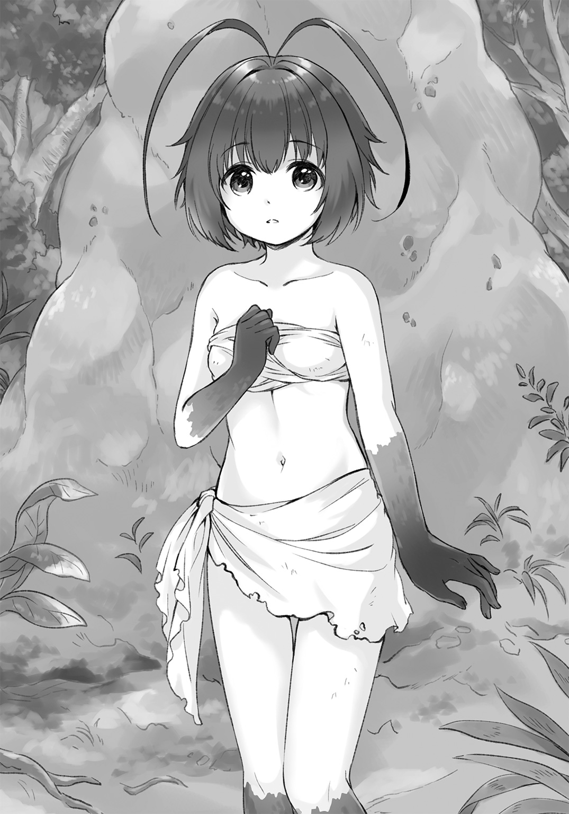
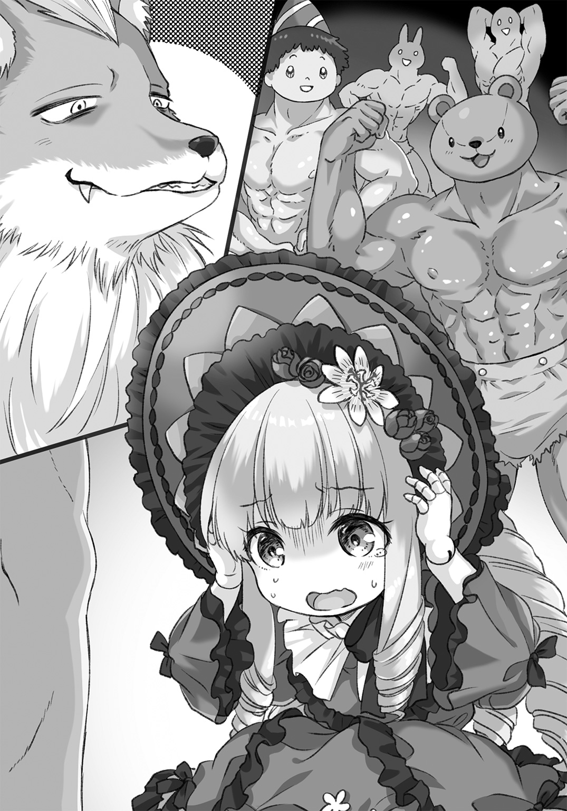

| 最強の魔狼は静かに暮らしたい ～転生したらフェンリルだった件～ | |
| 伊瀬ネキセ | |
この本は縦書きでレイアウトされています。
また、ご覧になる機種により、表示の差が認められることがあります。
 ダッシュエックス文庫DIGITAL
ダッシュエックス文庫DIGITAL
最強の魔狼は静かに暮らしたい
～転生したらフェンリルだった件～
伊瀬ネキセ
だから、転生はお断りする
俺はじっと耐えていた。
正面から押し寄せる緩やかな水流は、俺の体を執拗に川下へと運んでいこうとする。
全身を撫で抜けていくその水は、少しでも気を緩めると、身も心も明け渡したくなるような優しさと安らぎに満ちていた。その衝動を頑なに拒み、俺は川底にへばりつき続ける。この流れに身を任せたらヤバイと、頭の中の何かが警告を発しているからだ。
状況を確認しよう。
今、ものすごく奇妙なことになっている。
県立高校に通う一般男子学生の俺、灰上甲斐は、人の体をなくしていた。
光の塊になっている。手足もない。顔だってないだろう。
理由？ わからない。わからないが、とにかくその状態で川に流されそうになっているのだ。
どうしてこんなことになっているのか、直前の記憶はゼロだ。気づいたらこの川の中にいた。
時折、その水流の中を、俺にそっくりの光の塊が流されていくのが見えた。
そいつは何ら抵抗することなく、むしろ悦楽に溺れながら川下へと運ばれていった。
ああ～生き返る～、というつぶやきまで聞こえてきた。
......怪しい。なぜだかものすごく怪しく感じられる。
無根拠な言いがかりじゃない。重要な根拠がある。
俺が今の状況に陥った直後に響いた声だ。その声の主は、
――待って......待って......！
と叫んでいた。誰の声なのかはわからない。だが、綺麗で、そして切実な少女の声だった。
女の子から「逃げて！」と言われた場合、ホントに逃げるとフラグが折れるが、「待って！」と言われた場合は素直に待たないとフラグが折れる。とかく世の中のフラグは理不尽なので、今はとりあえず現状維持で見極めを、というのが俺の方針だった。
「ふぬっ!?」
突然、水流が乱れた。離れそうになった体を、必死に川底へとしがみつかせる。どうやって？ とかは聞かないでくれ。この光の体は一応、動くには動くのだ。
水の流れがさらに乱暴になる。何かが水をかき乱しているのだ。
......かった。よかった。
水音に混じって、人の声が聞こえた。さっきの少女だとはっきりわかった。
直後、視界が急変する。水面を突き破り空へ上る。すくい上げられたらしい。
「あなただけは待っていてくれたんですね」
「あんた、誰だ？」
俺を両手ですくい上げたのは女の子。巨人――ではなく、こっちが小さいのだろう。スケール感に何となく馴染みがある気がした。
裾の長い、薄い法衣のような服装。
垂直に落ちる白い髪、前髪の切り口は水平で、いわゆる姫カット。大きな両目はエメラルドグリーンの光を持ち、顔立ちはちょっと幼いけど、神が「これはワシの嫁」という前提で本気出して創造したってくらい、とてつもなく可愛くて――神秘的だった。
とりあえず......フラグ折らなくて正解だったな、俺？
「わたしは女神デモリカです。灰上甲斐さん、わたしの願いを聞いてくれてどうもありがとう」
彼女はそう名乗った。
「女神？ 願い？ 何のことかさっぱりわからん。俺はどうなったんだ？ ここはどこだ？」
「よく覚えていないのも無理ないです。あなたは死んで、異なる世界からこの世界に運ばれてきたんですよ」
「マジで？」
「高校の修学旅行で、乗っていたバスが土砂崩れに巻き込まれてＹＯＵ・ＤＩＥしました」
「マジで!?」
なんてこった。俺、死んでた。つくづく報われねえ人生だったな。
「あれ......俺がバスで死んだってことは」
「はい。同じバスに乗っていたあなたのクラスメイトも全員、お亡くなりになりました」
「そっか......。可哀想にな」
俺の性格上、ほとんど付き合いがなかった二年一組のクラスメイトたちだが、死んでしまったと言われると一抹の寂しさを覚える。無味無臭に乾燥して生きてた俺と違い、それなりに夢も希望も将来への展望もあっただろうに、死ぬときはみんな一緒くたとは。
「それで、わたしはみなさんの魂を引き取って、こちらの世界に転生させることにしました」
「ふうん？ ......え？ ちょっと待って。異世界転生とかマジにあるものなのか？」
「マジにあるものなのですよ。ここは〈転生の泉〉。死んだ命が生まれ変わるための場所です。あっちが崖になっていて、落ちたら転生する仕組みです」
「げえっ......！」
やべえ！ さっきまでの俺が圧倒的に正しかったことが証明されてしまった！
女神の柔らかい手のひらにしがみつき、俺は叫んだ。
「やめろ！ 俺は生まれ変わりたくなんかないんだ！ ずっとここでいい！ 生きなくていい！ 死んだなら死んだままでよし！」
「こう言ってはなんですけど、〈転生の泉〉に逆らう魂とか、わたし初めて見ました」
「だって俺にはもう無理だもんよ！ 人生なんてサイアクのマゾゲーだ！ 調整不足！ すべてがハイリスクローリターン！ だいたいイケメンに限られている！ ああ報われねえ！ だから生き返って最初から苦労し直すくらいなら、努力して死を維持するよ俺は！」
「えへへ。ぷるぷる震えて可愛いですね、カイさん」
「聞けよ俺の話！」
俺の怒号に対し、女神はなぜか優しく笑った。
「大丈夫です。カイさんが生まれ変わるのは、この世界で最強の存在ですよ」
「へっ？ 最強？ の存在？」
「はい。だから生き返って大丈夫なんです。さあ、行きましょうか」
そう言うと、理解の追いつかない俺を抱えたまま、女神デモリカはぱしゃぱしゃと川面を蹴って歩き出す。ずいぶん浅い川だったんだな、と思ったのも束の間、俺は彼女が言った言葉の意味を理解し青ざめた。――顔色があったなら。
「ちょ、ちょっと待て。〝行く〟ってどこへだ!?」
「もちろん、現世です。ほら、もう崖が見えましたよ」
「ウッソ!?」
ウソじゃなかった。川の流れの際が、もうすぐ手前にあった。
水の落ち行く先は、視覚に穴が開いたと錯覚するほどの、混じり気のない暗黒。
「や、やめろー！ 死にたくなーい！ じゃなかった、生きたくなーい！」
俺はデモリカの手に今まで以上に必死にしがみつく。すると彼女は優しく天使の微笑みを浮かべ、俺を守るようにそっと指で包み込んだ。
この体勢は......投げ捨てる形じゃないな？ ゆ、許された!? 俺、転生回避できた!?
「さあ準備はいいですか？」
「えっ」
「行きますよ。とぉぉぉぉぉぉぉぉう――」
ギャアアアアアア！ 跳んだ！ 俺を抱えたまま身投げしやがったコイツ！
白い陶器のような女神の指の隙間から、おぞましいほどの早さで視界に広がった暗黒の底を見ながら、それが風景なのか、それとも意識の途絶を意味する闇なのかを区別することすらできず、俺の自我は黒い靄に包まれてそっと閉じた......。
つまり、最強の種族になった
「やめろこの邪神！ 俺を生き返らすな！」
口から弾け出た自分の声に驚き、俺は目を開けた。
恐怖のカケラが居残る頭を動かし、咄嗟に周囲を見回す。
どこかの空き地らしい。背の高い雑草は生え放題で、あたりがよく見えない。
......夢だった、のか？
「......つーか、どこだここ......？」
うちの近所にこんな草ぼうぼうの空き地なんてあったか？
状況に理解が追いつくのを待つより、俺はまず起き上がることを優先した。立ち上がって遠くまで見通せば、案外、家の近くの空き地だったりするかもしれない。
寝起きの体はどこか鈍く、内側に蜘蛛の巣が張ってるみたいに動きづらかった。上体を支えようとして腕を動かすが、思うような角度に曲がらず、すかすかと空を切る。
――蒼黒い、毛むくじゃらの腕が。
「......は？」
俺は素っ頓狂な声を上げ、自分の手をまじまじと見た。
蒼黒いふさふさの毛に覆われた動物みたいな手があった。手首がうまく回らず、体ごと動かしてどうにか手のひらを見てみると、そこに角張った小さな爪と、肉球があるのが確認できた。
ごぎゅり、と鳴ったのどを無視し、できる範囲で自分の体を見回す。
――俺、人間の形してない。
軽いデジャブに胃が持ち上がる。黒に近い蒼い体毛は全身を覆い、手足は前足後ろ足と呼んだ方が適切な形で、尻の先には太く立派な尻尾が優雅に揺れている。
「誰だおまえは!?」
思わず自分に向かって叫んでいた。そして即答。
「俺の名前は灰上甲斐。県立杜谷高校二年生。出席番号は九番。誕生日は十一月七日。彼女なし、友達は心の中にだけいる。得意な科目は国語――答えが問題文にあるから――で、苦手なのはそれ以外のだいたい。趣味はゲーム。無人島に持っていきたいのは俺の部屋。分類学上はヒト。両親とコンビニの店員がそう認めている。よって俺は人間。よし大丈夫、正気だ！」
息継ぎなしに言い切って、もう一度自分を見る。
【悲報】やっぱりヒトじゃない。完全にケモノだ。
「何でだあっ!?」
動かしにくい手でぺたぺた顔をさわってみたところ、形からしてどうやら狼っぽい。
そこらの草木を基準にして考えると、サイズはけっこうでかそうだ。背中に大人を余裕で乗せられるくらいはある。
どうしてこうなった、何が起こった......。途方に暮れる俺にある言葉が稲妻のようによぎる。
――カイさんが生まれ変わるのは、この世界で最強の存在ですよ。
生まれ変わり。〈転生の泉〉。そして女神。......俺は一度死んで、本当に生まれ変わった？
「ちくしょう、やりやがったなあの神！ それにどういうことだよ、人間じゃないって！」
チクショウはもはや俺の方なのが悔しいが。
「だいたい何が最強の存在だ。俺の国じゃとっくに絶滅しちまった生物だぞ！」
そんなふうに叫んだときだった。
「ふぇぎゃああああああああああ......」
人の悲鳴が両耳を右から左へつんざいた。
絹を裂くようなというよりも、もっと地べたを這いずった品のない悲鳴だ。
すぐさま声のした方へ駆けた。悲鳴の主を助けようという正義感からじゃない。それが聞いたことのある声だった上に、今一番苦情を言いたい相手のものだったからだ。
「まっ、ま、待ちなさい！ 落ち着きましょう！ 見てください、ほら！ わたし、とっても可愛い女神様ですよっ！ ねっ！ だから興奮するのはやめて――！」
――ガアオオオ！
「ひきいいっ！ この動物わたしの話を聞いてくれないっ！」
............。やっぱりか。
一匹のケモノと向かい合い、ぴいぴい鳴きながら説得めいたことを試みているのは、俺と一緒にあの断崖から飛び降りた女神だった。
名前は、そう、デモリカだ。
彼女がそこにいるのはおいといて、向き合っているあのケモノ――怪獣は何だ？
背の高い草を紫がかった黒い肢体で押し広げ、荒々しい息をつきながら女神を正面に睨みつけている。
牛に似た動物だったが、俺の知ってるのとは明らかに違う。まずでかい。大狼である俺よりさらに一回りはでかい。そして角だ。あの頭部に密集した大量の角は何だよ！
魔王だってきっと三本くらいしか生やしていないだろうに、そいつは無節操に十数本からなる大きな角をすべて頭に生やさせ、正面に突きつけていた。
重さで首が落ちそうだ。こんなイカれた姿の動物、地球には間違っても存在しない。
地球じゃない。あの泉で女神の言ったとおりここは異世界なのか。......本当にあんのかよ！
「あっ、カイさーん！ カイさーん、カイさああああああん！」
女神が俺に気づき、ぶんぶんと両手を振ってくる。
「たっ、助けてください。この動物わたしを見たらいきなり襲ってきて！ 女神様に危害を加えるなんて罪深くて許されないですよねっ!? カイさんもそう思ってくれて嬉しいです！」
「返事を待たずになぜ決めつけた!? 思ってねえよ！」
咄嗟に言い返したが遅かった。
牛の怪獣はデモリカからこちらに角の切っ先を移し、血走った目で俺を睨んだ。
〝ガトリングホーン〟。それっぽい名前を、俺は即座に命名する。
「お、おい。落ち着けよ。俺は敵じゃない」
同じケモノ同士なら話が通じるかもと思ったが、ガトリングホーンは鈍器のような蹄で草の根ごと土を掘り返し、威嚇のモーションを返してきた。どう見てもブチ切れモードだ。
「ん......？」
赤。ふと、この茄子みたいな色をした牛が赤色に感じられた。
何だこの色。この狼、目がおかしいのか？ いや、今はそれどころじゃない！
戦いは避けられそうにない......だが、戦えるのか俺は？
「おい女神様！ あんた、俺が最強だって言ったよな!?」
「はっ、はい！ そうです！ カイさんは最強の種族に生まれ変わりました！」
「だったらどう戦えばいい!? 教えてくれ！」
「それは、こお――」
デモリカが言いかけたときだった。
――グガアアアオ！
ゴッズィーラみたいな咆哮を放ち、ガトリングホーンが土煙を上げながら俺に突っ込んでくる。
こんなもん、もはや生物じゃない。世紀末なトゲトゲをくっつけた改造ダンプカーだ。
あの勢いで角を打ち込まれたら、串刺しになるどころか体が粉々になる！
「ちいい！」
俺は軽く地を蹴って横に身を流した。瞬間――
「もっとちゃんとかわせよ！」という熱を帯びた焦りがわき上がり、すぐさま「こんなもんだろ」という冷たい思考に塗りつぶされた。なんだこれ？ と困惑したのも束の間、一瞬後には俺はあらゆる疑問を置き去りにしてガトリングホーンの背後に回り込んでいた。
「何だ......こりゃ......!?」
......は、速え......！ 自分でもわけがわからないくらいのスピードだった。
ゴガッ!?
俺の残像をすり抜けきょとんとしたガトリングホーンが、慌ててこちらに振り向いた。
「氷の魔法です！ カイさんにはそれが使えるはずです！ 冷たいものをイメージして！」
デモリカが叫んだ。
氷の魔法――！ 魔法なんてものが使えるのかこの狼は!?
言われた通り、冷たいものを頭に描く。
北極！ 吹雪！ マンモス！ 全裸で追いかける原始人！ 寒いなこれは絶対に寒い！
――ガアアアアアア！
ガトリングホーンが再び突進してくる。
え、あれ、魔法は!? イメージしたのに何も起こらないぞ！ やばい、ぶつか――
雷が落ちたような轟音が響き渡った。
俺は見た。
目の前に現れた分厚い氷の膜が、ガトリングホーンの角を止めていた。まるで巨大な盾だ。
動きが止まった。これは反撃のチャンスなのか？ ――そう思った直後、口元に心地よく冷たい風が吹く。気がつくと、俺は口に氷の剣をくわえていた。
そこから先はほぼ無意識だった。生み出した氷の盾の脇をすり抜けると、慌ててこちらへ振り向けられたガトリングホーンの角先へ、氷の剣を逆袈裟に叩き込む。
幾本もの角は雪玉のようにたやすく砕け散った。
斬り上げた勢いのまま、俺は仰け反ってバク宙へと移行。砕けた角の破片が舞う中に、濃厚な血のニオイが混ざり込み、俺の鼻腔を得も言われぬ陶酔で満たす。
血......血！ いいニオイだ！
――ヒギュウウウ......。
ガトリングホーンが短い足を折って横倒しになり、草原に地響きを広げた。
俺は泰然とそれに歩み寄ろうとして、はたと我に返った。
「うおうっ、何だこれ......！」
慌てて氷の剣を口から離す。俺はいつの間にこんなものをくわえてたんだ？
それに、さっきの攻撃の動き。まるで意識せずに体が動いた......。
「カイさん、やりましたあっ！ やっぱりカイさんはわたしを助けてくれるんですね！」
「うわ！」
女神様がいきなり首に飛びついてきた。よろけそうになるのを踏ん張ってこらえる。
背中や首のあたりをよーしよしよしと撫で回し、甘いニオイのする頰をすり寄せてくる。それが女の子のニオイなのか神様のニオイなのかは、どっちも知らないので判別しようがない。
「ちょ、ちょっと待て。やめろ女神様」
「はい。カイさん！」
俺が身じろぎすると、デモリカは素直に手を離した。
今気づいたが、彼女は最初に会ったときと格好が違う。あのときはいかにも神様っぽい、薄くてふわふわした長衣だったが、今は、ものすごーく大雑把に言って、旅装束みたいな服装だ。スカートがずいぶん短いが、これは旅をする上で大丈夫なのだろうかとちょっと疑問に思う。
「聞きたいことが山ほどあるんだが、ええと、まず、この氷の剣は俺が出したのか？」
吐き捨てた氷の剣を前足でつつきながら俺はたずねた。
「はい。カイさんは〝フェンリル狼〟という最強の種族で、類を見ない強力な氷魔法が使えるんです！ この剣も魔法の氷でできた、決して砕けることのない至高の武器なんですよ！」
デモリカは目をキラキラさせながら力説した。
「フェンリル......」
ゲームの中でも特にＲＰＧが好きな俺が、その名前を知らないわけがない。
北欧神話に登場する魔狼フェンリル。グレイプニルという拘束具に捕らわれていたが、ラグナロクと呼ばれる最終戦争で解き放たれ、神族の長であるオーディンを喰ってしまう悪の華だ。
ゲームでも悪役になったり、必殺技の名前になったりと八面六臂の大活躍。中学時代に一通り片目や片腕をうずかせた記憶のある正常な男子ならば、この名前にときめかないはずがない。
俺がそのフェンリルになったってのか？
そして氷の魔法という言葉。さっき俺はそれを使って戦った。魔法がある世界。さらに俺やガトリングホーンのような、普通の動物とは違う、いわゆる魔物が生息している世界。
剣と魔法と魔物の異世界。ここはそういうところ。
そしてその中で、俺の位置づけは――
「最強？」
「最強！」
デモリカの返事に、足下から震えがきた。武者震いというやつだ。
人間じゃない件について最初は「えぇ......」と思ったが、いや気に入った！ そして決めた！
この最強の力で、俺は何もしない！
偉業など何も為さない。気楽に生きる！ 人間だった頃はどんなに苦労しても小さな結果しか得られなかったが、今ならほどほどの労力でそこそこの結果くらいは得られるはずだ！
報われる！ 俺が報われる世界が、ついにやって来たのだ！
テンションが有頂天へと上り詰め、夏休み直前の小学生並みにすべてが輝いて見える俺の視界に、血のニオイを漂わせながらふらふらと逃げていくガトリングホーンの後ろ姿が割り込んだ。
ファファファ......ザコが。俺は裂けた口で笑う。
今、とても気分がいい。無用な殺生はしない。いきなりケンカを吹っかけてきたことは大目に見てやるから、どこへなりとも逃げるがいい......逃げるが......逃げ......に......。
「逃がすかああああああああ！」
「びょああああああっ!? カ、カイさああああああん!?」
咄嗟に飛びついてきたデモリカを首に引っかけたまま、俺は巨大牛を追いかけていた。
なぜだ!? 超楽しい！ 逃げるヤツを追い回すのが超エキサイティン!?
四肢に少し力を込めただけで、体が風のように軽やかに跳んだ。
氷の魔法だけじゃない。この超スピード！ さっきガトリングホーンの背後に回った動きだ。体育の成績たったの四（十段階評価）か......ゴミめ、だった俺はどこへ行ってしまったんだ！
あっという間に標的に追いつくが、トドメを刺すつもりはない。左右に回り込んだり、飛びかかる振りをして驚かせるだけで、やたらめったら楽しい気分になる。こんな気分、人間だった頃には味わったことがない！
「ぬゃああああ！ おちっ、落ち着いてくださいカイさああああん！ 本能抑えてえええっ」
本能......!?
デモリカの悲鳴の一節にギクリとし、俺は四つ足を突っ張って急ブレーキをかけた。調子に乗って上げすぎた加速はすぐには殺せず、地面を数メートルえぐり取ってようやく停止する。
「本能......。そうか、この無性に楽しいのは、フェンリルの本能なのか......」
逃げるものを追うのは捕食者の基本的な本能。家犬でさえ逃げたら追ってくる。なるほど、頭の中だけは人間のままだと思っていたが、フェンリルの本能も備わっているわけだ。
「ひい、はあ、ふう......」
デモリカがふらつきながら俺の体から離れ、地面に座り込んだ。
「大丈夫か？」
「は、はい。大丈夫です。それより、フェンリルの体はどうですか？ ちょっと特殊な転生をしてカイさんの意識や記憶は生前のまま残ってますから、どこか馴染まなかったり気持ち悪いところがあったりしたら言ってください」
俺は女神のまわりをゆっくりと一周してみた。足はしっかり動く。尻尾もだ。
「別段変なところはない。魔法みたいなのも使えたし。さっきは転生したくないとか泣き言を言ったけど、気に入ったよ、この体。ありがとな」
「それはよかったです！」
「じゃあ俺は、この世界で報われまくって生きるから。さようなら女神様」
お礼を述べて旅立つ俺の尻尾をデモリカが摑んできた。
「ちょっ、ちょちょ、待ってください。どこに行くんですか？ カイさんはこれから、可愛い女神様と一緒に魔王を倒しに行くんですよ！」
「はい......？」
「ですから、カイさんと、わたしで、魔王を倒しに行くんです」
現在、女神に言われたことを理解しようとしています。必要な時間あと四秒、三秒、二......。
「......理解できねえ！ え、何!? 待ってくれ、どういうことだ!?」
「えっ？ どういうこととは？」
「魔王!? を、倒す!? って言ったのか!? 俺と!? あんたが!?」
「はい。そーですよ？」
デモリカは笑顔を崩さず、小首を傾げてみせた。謎が次々と噴出する。
「何でそんなこと......いや、そもそも魔王なんてものもいるのか、この世界!?」
「はい、います。勇者もいますよ」
よーし、世界観だいたい把握した！
「あ、でも、魔王ってカイさんのクラスメイトたちなんですけどね」
よーし、世界観崩壊！
「カイさんたちの世界の魂って、この世界の魂に比べて元々大きかったんですよ。そのまま転生すると、本来あり得ないくらいの力を持って生まれてしまうので、大きさを調整してから泉に入れてあげなきゃいけなかったんですけど......」
デモリカが腕を伸ばしたり曲げたりしながら説明する。魂のダウンサイジングといったところだろうか。異世界転生の工程にもいろいろあるようだ。
「でも、あの......わたし、そうする前に泉で転んじゃって、魂をそのまま流しちゃったんです」
「ほう」
「そしたら、みんなものすごい強力な魔物に生まれ変わっちゃって。旧来の魔王たちに匹敵する恐るべき強さなんです！ だからこの世界、ものすごくピンチになりました！」
「すべての元凶あんたじゃないか！」
「ぺぺぺろ！」
「ぺが多い！」
つまりこのマヌケ神は、自分で魔王の種をぶちまけて、それを刈り取るために俺に手伝えと言ってるわけだ。
俺がフェンリルなら、クラスメイトの中にはベリアルとかベルゼバブとか、そういうメジャーどころになったヤツもいるのかもしれない。そりゃ、シャレにならんわ。
「断る。俺は手伝わない」
「ゔぇっ!? た、助けてくれないんですか？ わ、わたし女神様なんですけど！ さっきは助けてくれたじゃないですか！」
デモリカは露骨にオロオロし始めた。
「さっきはなりゆきでそうなっただけだ。俺があんたに付き合わなきゃいけない理由はない」
「カイさんの世界では、可愛い女の子のために世界を滅ぼすのだって普通なのに!?」
「それは心がイケメンのヤツに限る。俺は外見フツメンだが、内面はブ男だからな」
「あっ、で、でも、わたしのことは可愛いと思ってくれるんですね」
ものすごく嬉しそうに微笑むデモリカ。まあ外見だけは神作だ。ていうかこいつが神だ。可愛さについては素直に認めていいだろう。中身ポンコツくさいけど。
「魔王と戦うなら俺なんかじゃなく勇者に頼め。そうだ、クラスメイトに一人くらい勇者に生まれ変わったヤツいないのか？ 正義感強そうなヤツとかいたぞ確か」
しかしデモリカは首を横に振り、「いないんです」と短く否定した。
「わたし、転生する世界を移し替えてしまったお詫びに、みなさんには好きなものに生まれ変われるよう調整してあげてたんです。そしたら全員が魔物に転生してしまいました」
「............。全員魔物志望とか、うちのクラス何なの......？」
あれ、ちょっと待て。じゃあフェンリルになったのも、俺の希望だったのか？
どうしてそういう答えに行き着いたのか、我ながら謎だな......。
「それに、カイさんはわたしの声に応えてくれたじゃないですかぁ......！」
デモリカはだだをこねるように、細い肩をふるふる震わせながら言ってきた。
「声？」
「そうですよう。泉に流れてしまった魂にわたし、待って、って言ったんです。当然、待ってくれるはずもないんですけど。あそこはそういう場所ですから。でも......」
あ、猛烈にやな予感。
「カイさんだけは残ってくれました。水流に必死に耐えて。だからわたしは、この人ならきっとわたしを助けてくれるって思ったんです......」
何てこった！ 水流の快楽に耐えてフラグ残した結果がこれかよ、報われねえ！
最強の力を手に入れたのはいい。だが最凶の冒険までついてきたら意味がない。
俺の計画では、ものすごく平穏な土地で、ものすごく弱いヤツらを相手にしながら、ゆるーい生活を送るつもりだったのだ。本気なんてまるで出さないスローライフだ。
なのに女神と一緒に魔王退治の旅なんて始めたらそんな余裕カケラも残らん！ むしろ毎日がアルマゲドンになりかねない！ 最強の力を得た意味ねえ！
よし今こそ折ろうフラグ！ 幸せのためなら女の子の頼みだって平気で断れるよ俺は！
なに、カス？ いいよカスで！ 他人の評価なんか何の意味がある！ 少なくとも前世では何の意味もなかった！ 俺は悪くぬぇ！ 自分の報われる未来に責任を持っているだけだ！
「勘違いだ。俺はたまたま川底に引っかかってただけだ。あんたのためじゃない。さようなら」
「ま、待って待って待ってくださいいいい！」
デモリカはしぶとかった。歩き出そうとする俺の尻尾を、涙目になりながら摑んでくる。ちょっと痛いが、フラグを完全にへし折るためにずるずると引きずりながら進む。
「ほ、本当は別に倒すとかしなくていいんです。ただ好き勝手に暴れるのを止めてもらえればそれでいいんです！ ねっ、簡単でしょっ!?」
「ほとんど同じ意味に聞こえるぞ。魔王がそんな素直なヤツらかよ」
「そこは〈力の命約〉を使いますから、大丈夫です！」
〈力の命約〉？ 聞き返しはしなかったが、動物の反応は素直だから、心の中の疑問符が耳の動きにでも表れたんだろうか。デモリカは好機とばかりにまくしたてた。
「ち、〈力の命約〉っていうのはですね！ 魔物には、自分より強いものに従う本能があります。けれど、力のある高位の魔物たちは、それを契約に近い形で行うんです。それが〈力の命約〉！ これを結べば、みんなカイさんの言うことには逆らえなくなります。つまりカイさんは魔王の中の魔王、〝大魔王〟になるんです！」
「大魔王!?」
俺は一旦立ち止まって叫んでいた。
「はい！ 大魔王です！」
「大魔王ってのはあれか。ピッコロとかバーン様とかのあれか！」
「はい！ 大魔王になったら毎日遊んで暮らせますよ。可愛い女の子はべらせて、何でも命令し放題ですよ。朝から晩まで酒池肉林ですよ。そういうの男の子の夢ですよね？ ねっ!?」
「お断りします」
俺は再び歩き出した。
「待ってくだざいいいいい。だずげでぐだざいよおおおおおお！ ゔぇえええええええん！」
とうとう泣き出してしまった。まるで前の世界で見た、某の号泣会見だ。
だが手は離していない。なかなかの根性だ。しかし俺も退けない。大魔王？ 〈力の命約〉？ より面倒なことになってるじゃねえか！ これは大冒険不可避！
「なあデモリカ。見ろよ、この平原を。とても世界の危機とは思えない平穏さだ。まだきっと時間はある。ここで非協力的なカス狼に引きずられてるより、優しい他の誰かを探した方が総合的に早いのは確定的に明らかだ。この失敗を次に活かせばいい。あんたならできる！」
俺のもっともらしいようでまったく無責任な甘言に、デモリカはあくまで首を横に振った。
「えぐえぐ......。そんなことないです。実際、わたしはすごく世界のピンチを感じています」
「どんなだよ」
「新魔王が暴れる → 人間も普通の魔物もみんな困る → 唯一神であるわたしに祈る →しかし何も起こらなかった！ → わたしへの信仰がピンチ → 女神様がピンチ → 世界がピンチ。わかりましたかって、カイさんどこに行ったんですか!? カイさあああん！ おいてかないでえええええ！」
◇
アッッッッッッッッッッッッッホか!!
何が世界の危機だ。単なる保身じゃないか。
他人に頼るのも大概にしろよ、甘え神が。甘神が！ おまえは相応の報いを受けとけ！
一瞬でデモリカを置き去りにした俺は、草原の街道を一人......いや一匹歩いていた。
異世界最初のイベントとしては手間取った感があるが、くだらない筋書きから逃れられたという点では、すでにラスボス戦をこなした後のような解放感すらある。
今度こそ、俺は小さな幸せに彩られた平穏な生活を求めていく。大願の成就など望まない。小さな努力が順当に報われる生活さえ手に入れられればそれでいい！
ふと、前方に大きな町が見えた。
石造りの巨大な外壁があり、入り口のところにいくつか人影が見える。
どうやら人間の町らしい。
この世界の人々はどんな暮らしをしているのだろうか。魔法の道具なんかも使うのだろうか。気になる。知りたい。俺は即決で町へと向かうことにした。
近づくにつれ、にわかに外壁前が騒がしくなる。何だ？
「気をつけろ、見たことのない魔物だ！」
「チッ、あの迷い角牛だけでも厄介なのに新手か！」
「ギルドに通達！ 手の空いてる冒険者はいないか！」
何だ、何だ、何だ？ 人間たちがわらわら出てくる。しかもなぜかみんな赤く見える。ガトリングホーンと同じ色だ。これは色じゃなくて......感情？ まさか殺気なのか!?
「追い払え！」
ざくっと音がして、俺の足下に矢が刺さった。
「うわっ！ 撃ってきた！」
慌ててバックステップすると、その軌道を縫うようにさらに数発が地面を刺し貫く。
「あっ......そうか、しまった！ 俺、今、魔物だったんだ......！」
魔物が人間の町に入れるはずがない。俺はきびすを返すと、一目散に逃げ出した。
ある程度離れてから振り返ると、幸い追っ手はいない。ほっとする。
しかしまずいことになった。
こんな姿になってしまったが、意識が人間のままである以上、人の暮らしは捨てられない。柔らかい布団で寝たいし、美味いものも食べたい。そのためにはどうしても人の町という環境が必要だ。
入れないとわかったら余計恋しくなってきた。クソッ、やっぱり魔物になんかなるんじゃなかった......。
視線を落としながらとぼとぼ道を歩いていると、頭が誰かとぶつかった。
「あ、すみません......ん？」
「いえ、こちらこそよそ見してて......え？」
聞き覚えがあるようなと思い、俺は顔を上げた。
すると、頰に涙の跡が残るデモリカが、きょとんした顔で立っていた。
「カカカカカカカ、カイさああああん。やっぱり戻ってきてくれたんですねええええ！」
「ぐえっ！」
デモリカは破裂するような笑顔で飛びついてきた。しかも、首を、思い切り、絞めてる！
「ち、違う！ 町に入ろうとしたら追い返されただけだ。おまえに協力するつもりはない！」
俺は身をよじってデモリカを振りほどいた。不遜にも神様をおまえ呼ばわりしているが、俺の中でデモリカの立場はそこまで低下していた。が、呼び方なんて少しも気にしない様子で、彼女はただただ嬉しそうに笑う。
「なあんだ。町に入りたかったんですか。だったら、わたしが一緒に行ってあげますよ。そうしたら人間たちも怖がりませんから」
「......本当かよ」
「わたし神ですよ！ 神様ウソつかない！」
どんと胸を叩き、ケホケホとむせるまでのテンプレを見せてくれるポンコツ女神。
確かに、神様が近くにいたら、俺も魔物じゃなくて聖獣とかに見られそうではある。
悔しいが妙案だ。現状でこれ以上のいい手は、思いつきそうにない。
「わかった。一緒に来てくれ」
「はいっ！」
「だが、おまえに協力はしないからな。あくまで一時的に一緒に行動するだけだ」
「そんなあ」
デモリカはしょぼんとしたようだが、すぐに気持ちを切り替えたのか、笑顔で俺にしがみついてきた。
「こ、今度は何だよ？」
「あ、動かないでください。女神様、あなたの背中に乗りたいなーって。......ダメですか？」
「......。いや、いいよ。確かにその方がらしいもんな。ほら」
俺はその場にしゃがみ込んで、デモリカを背中に乗せてやった。
「やったー。わたしフェンリル狼の背中っていっぺん乗ってみたかったんです」
「そうかい。良かったな」
「ああ～。やっぱりすごいモフモフで気持ちいいです～。カイさんだぁい好き～」
「はいはい......」
無邪気に首に抱きついてくる甘神に、歩きながら適当に話を合わせてやる。しかし、なんて柔らかさだこいつ。上品に横座りとかじゃなく剝き出しの両足でがっちり背中を挟んでいるので、むっちりした両股の感触がダイレクトに伝わってくる。その上、俺の毛触りを確かめるみたいに全身を擦りつけてくるもんだから、もう密着度が大変なことになっていた。
「でも、実は女神様、もう一つ乗ってみたいものがあるんですよね～」
「ふ、ふうん。ドラゴンとかか？」
「いいえ、ガンダム！」
「おい!? どこでその言葉を習った!?」
俺の叫びに、デモリカは嬉しそうに胸を張った。
「えへへ。実はわたし、カイさんたちの世界について詳しいんですよ。時々そっちの世界をこっそりのぞいてたんです。アニメとかゲームとか大好きなんです。ネット動画も好き！ わたしもいつか、踊ってみたり歌ってみたり炎上して失踪してみたりしたいなあ！」
「前半はともかく後半はきっと楽しくねえぞ!?」
そういえば、さっき大魔王のくだりで、ピッコロとかバーン様に普通に反応してたな。単に合わせただけかと思ったが、まさかちゃんと理解してたのか......!?
「実は、みなさんの魂をこっちの世界に持ってきたのも、こういう話をする相手がほしかったからなんですよね。異なる世界の人間に話しかけることはできませんから」
「おいおい。そんな理由で俺たちはこっちの世界に運ばれてきたのかよ」
「いつも楽しい話をしてるカイさんたちには、女神様の悲しみはわからんのですよ！ とはいえ、転生してしまえば記憶は消えてしまいます。でも〈転生の泉〉にいるときなら、少しの間お話しできるんです！ 転生の仕様を熟知した上でのこの発想！ わたし神かもしれません！」
「いや、神だろおまえ......」
「やはりそうでしょうか!?」
ダメだこいつ。興奮しすぎて我を失ってる。
別に死んだのはこいつのせいじゃないし、つまらん理由で頑張ったなくらいにしか思わないが、結果、世界に魔王をバラまいたのは事実だ。つくづく残念な女神。魔王うんぬんよりそっちの方こそ知られちゃいけない情報じゃないか。人力でラグナロク起こされるぞ。マジに。
「いっぱいお話ししましょうね！」と張り切る女神の声を聞く内に、再び人間の町が見えてきた。
「見ろ、またあの魔物が来たぞ！」
「ちょっと待て。誰か乗ってる......？」
「攻撃待て！ 何か天然っぽい女の子が乗ってるぞ！」
外壁前がまた騒がしくなるが、さっきとは様子が異なっていた。
色は、黄色く見える。これは何だ？ 態度から察するに警戒......とか？
背中の上では、デモリカがにこにこと笑っている。特に指示はなく、このまま行っていいということか。俺はまだ少し不安だったが、思い切って前進した。
「こんにちはぁ」
「お、おう」
デモリカが笑いかけると、門の前にいた衛兵らしき人たちはぽかんとしながらも返事をした。
「お、おい、お嬢ちゃん」
「え？ とてもおしとやかで可愛いお嬢さん？ わたしですか？」
「ちょっと違うけど、まあそう。その下のでかいのは、お嬢ちゃんのか？」
兵士は戸惑いながら、俺を指さして言う。俺は無言。応対はデモリカに任せている。
「はい。カイさんは、わたしの大切な仲間です」
「そうか。いや、さっきはそいつ一匹で、町に近づいてきたからよ......」
「ちょっと目を離した隙にいなくなっちゃったんです。きっと寂しかったんですよ。でももう大丈夫ですから。ねっ、カイさん」
言って、背中から俺の首をわしゃわしゃ撫でてくる。俺、されるがまま。
「だったらいいか。町の人間がびっくりするから、そいつを大人しくさせといてくれよ？」
俺とデモリカはあっさりと門を通過し、町の中に入ることができた。
「うまくいきましたね」
「ああ。でも、思ったのと違うな。もっと、ああ女神様、ご機嫌麗しゅう！ みたいな感じで迎えられるかと思ってたんだが」
俺は小声で言い返す。
「あーっ。ダメですよカイさん。ここではわたしが女神様だってことは内緒。みんなびっくりしちゃいますからね。わたしのことは女神様じゃなくて、デモリカって呼んでくださいね」
「え？ ちょっと待て。おまえ神様だって知られてないのか？ じゃあ、どうして俺が町に入れると思った？」
するとデモリカは胸を張って言った。
「それはわたしが可愛いからです！ こんな可愛い女の子が背中に乗っていて、通してもらえないことがあるでしょうか、否！ 絶対通してもらえます！ 通すべきですよ人は！」
ゲエーッ！ そんな根拠を頼りに、俺はあんな危険地帯を通過させられたのか。一つ間違えば戦争だったぞ!? あ、甘い......！ 他人に甘えるだけじゃなく見通しまで甘い！
猛反論したいところだったが、周囲の視線がこちらに集中していることに気づき、慌てて口を閉じる。ここではただのでかい動物のフリをしていた方がいい。
視線を向けている町の住人たちをチラリと盗み見る。
前世の感覚からすると、ずいぶん簡素で、質素な身なりだ。
ただその中には、金属の厳つい鎧を全身に纏った戦士や、大型の雄々しい剣を背負った剣士や、杖と三角帽子を装備した可憐な魔法使いの女の子なんかも交じっている。
さすが剣と魔法と魔王と勇者の世界。
町の中は思った以上に小綺麗で、赤煉瓦と漆喰でできた家屋が並び、歩道は石畳できっちり整備されている。どこを見ても牧歌的で素朴な味わいがある風景が俺の目を楽しませた。
まるでゲームの中の世界。自然と胸も高鳴ってくる。ここで俺は生きていくんだ。
「そう言えば、デモリカ......」
俺は小声で、背中の彼女に話しかける。
「何だかさっきから、普通の色とは別にもう一つ変な色が見えるんだよ。黄色とか、青やピンクもある。おまえはなんかデラックスな黄金色だ。こりゃ何だ？ 目の病気か？」
「ふっふっふ。それはきっとニオイですよ、カイさん」
デモリカは質問されるのが嬉しいみたいに、楽しげに答えてきた。
「ニオイ？ 色だぞ、色」
「ええ。フェンリルの嗅覚と視覚は繫がっているんです。共感覚というものです」
「共感覚......？」
聞いたことはあるが、この色の混じった視覚がそうなのか？
「フェンリルの魔性の嗅覚は、相手の体調や感情、強さにいたるまで、様々なものを嗅ぎ取ります。そしてそれを色として認識して、情報が混じり合わないよう区別しているのです」
「マジかよ」
何だその超能力。
俺は視線を巡らせた。いろんな色がある。たとえばまわりの人たちの黄色、門衛と同じく警戒を表しているように思える。すぐ隣で積み荷を引いている馬は暗い青。俺に対して怯えている感じだ。あっちの具合の悪そうな男はモスグリーン......これは状態異常ってとこだろうか。
「しかもっ。フェンリルはとても賢いので、ニオイの情報から頭の中で地図を作ることができるんです。きっとカイさんもできますよ」
「そんな器用なことまでできるのか？」
ためしにやってみる。
嗅覚に意識を集中させ、鼻から息を吸う。様々な種類のニオイが舞い込んできた。目は見える範囲までしかわからないが、嗅覚は周囲にあるものすべてを色として俺に見せる。
家の中でケンカしている夫婦、木箱の裏に隠れた野良猫、壺の中に落ちたコイン、誰かが今朝吐いたゲロ――すべての位置がわかり、頭の中を色分けしていく。
わかる。町の様子がありありと。意識の中にマップ機能がついてるみたいだ。
「ねっ？ できたでしょう？」
デモリカがにこにこと俺に笑いかけてくる。
「ああ。こりゃすごいな。それに、デモリカもよく知ってるな。もしかして魔物博士か？」
「うぇっ？ あの......カイさん？ わっ、わたし女神様です、女神様っ」
「いやあすごいな。フェンリルは。うん。強いだけじゃなくこんな便利な能力もあるのかー」
おずおずと主張したデモリカは無視し、俺は自分の力に感心しきりだった。
地図機能もすごいが、これだけの情報をまったく混乱せずに処理できているというのもすごい。俺が人間だったら脳みそ吹っ飛んでた。頭もいいのだ、この魔物は。
しばらく町を見て回ると、デモリカが興奮した様子で俺の背中をペチペチ叩いてきた。
「カイさん、あれ、あれ！」
道の端に屋台が出ていて、そこから猛烈にいいニオイが流れてきている。
これは......フェンリル嗅覚様の精密分析によると、ジャガバターだ！
「あれ食べたいなー。ねえカイさーん。わたしあれを所望したいですー」
猫なで声を出しながら、全身をすりつけてくるデモリカ。どっちが動物かわかりゃしない。
「それくらい俺に断らずに好きにしろ」
「やったー！ じゃあお金ください！」
「あん？ 持ってるわけないだろ」
「えっ。わたしも持ってないですよ」
............。
俺たちはさあーっと青ざめた。
金ッ！ ゴオルド！ それは人の町で暮らす上でのライセンス！
町はとても便利なところだが、課金しないヤツはカス扱いの厳しい世界なのだ！
どんな特殊能力があろうと、女神だろうと、それは変わらない！
これじゃあ町の中に入れたところで何の意味もない。幸せなんて夢のまた夢だ！
「どどど、どうしましょう！ あ、あああ、そうだ、カイさんを倒せばお金が手に入るかも」
「錯乱するな、ゲームじゃねえ！ 俺のどこに金があるってんだ！ 全裸だぞ全裸！」
「ごはんは？ 今晩の宿は？ お酒飲んでちょっと大人の気分になったりは!?」
「何が大人だ唯一神！ 金だ。至急、金がいる。でないと野宿だぞ！」
落ち着け。落ち着け。金を手に入れるにはどうしたらいい？ 小遣いをくれる親はいないし、バイト......いや、労働？ そうだ働けばいいんだ！
さっき、武器を持った人間がいた。冒険者とかギルドなんて単語も外壁のところで聞いた気がする。それだ！ そこに行けばきっと仕事がある！
俺はデモリカに命令し、冒険者ギルドの場所を町の住人から聞き出させた。
たどり着いたのは木造の大きな建物。正面には、四角い板の上で剣と杖が交差するデザインの看板が大きく掲げられている。
スイング式の扉を額で押し開け、俺はギルド内部に足を踏み入れた。
「な、なんだあ......？」
「でけえ犬......。いや狼なのか......？」
中の客たちには俺がフェンリルだということはわからないらしい。背中にほんわかした女の子がちょこんと乗っているだけで最強の魔獣はでかい犬に格下げされ、入った直後に広がった警戒の黄色は、あっという間に好意的な興味を示すライトグリーンへと変わる。
女の子一人でこれだ。人間ってチョロい生物だな......としみじみ思う。
建物には、ギルド本部の他に食堂兼酒場が入っているみたいだった。
壁にはばかでかい掲示板がかけられていて、隙間がないほどびっちりと張り紙がしてある。
あれは冒険者への依頼なのか？ ここなら仕事に困らなさそうだ。
俺の背中に乗ったままデモリカがカウンターに近づくと、奥から眼帯をしてチョビ髭の、どこか引退した古強者を思わせる雰囲気のオジサンが現れた。
「おう、いらっしゃい。頼もしい相棒をつれてるお嬢ちゃんだな」
「そんな、この世で一番可愛らしいお嬢さんだなんて......」
この神、耳の病気なの？
「ハッハッハ......！ これは失礼した。確かにここよりも、休日の表通りでお会いしたかったな」
と、こんなバカに大人の対応をするオジサン。なんだか、すごくダンディ。
「それで、今日は仕事の依頼に来たのかな？」
「いえ。お金がいるんです。今日のごはんと、宿に泊まるお金が」
「おお、そいつはみんなに必要だ。おまえさん、プレートを見せてみな」
「プレート？」
「冒険者の身分を表すプレートだ。持ってないのか？」
デモリカが泣きそうな顔になって俺を見た。俺は頭を下げさせ、誰にも聞こえない声で言うべきことを耳打ちする。デモリカは救われた顔で再びカウンターに向かった。
「さ、さっきこの町に来たばかりなんです。どうやったらそれがもらえるんですか？」
「どこのギルドでも作れるぞ。何なら、今すぐ作ってやろうか？」
「お願いします！」
オジサンはカウンターの引き出しから一枚のカードを取り出す。これ、外の四角い看板と同じデザインだな。
「こいつがプレートだ。こいつを見せれば、世界中の冒険者ギルドで仕事が受けられる。プレートの真ん中にクリスタルがはめ込まれてるだろう。それにさわってみな」
「はい」
「よし、これでプレートはおまえさんのことを覚えた。仕事の履歴なんかもここに記録される。その他にも使い道があるんだが、とりあえずは掲示板から今日の仕事を探しな。もたもたしてると日が暮れて野宿することになるぜ」
俺は再びデモリカの頭を下げさせ、カウンター下での内緒話に持ち込む。
「いいかデモリカ。できるだけ金になって、この近辺で手に入る、探し物の依頼があるかどうか聞くんだ。必須条件として、見本となる実物があるものだ。わかったな？」
「は、はい」
デモリカは素直にうなずいた。
「相棒との相談は終わったのかい？」
オジサンはカウンターに伏せるようにして俺たちを待っていた。ずいぶんお茶目な姿勢だが、不思議と似合っている。
デモリカは俺に言われたとおりの条件を伝えた。
「素材探しのクエストか。駆け出しにはちょうどいい難度だろうな。一応、〈クロツナの実〉ってのがその条件に当てはまるが、探すのは骨だぜ。数日かけても見つからないのがザラだ」
「それやります。ね、カイさん？」
俺は「わう」と短く吠えて応じておいた。ここではただのでかい犬で通さなければいけない。
〈クロツナの実〉は、黒ずんだサクランボのような形をしていた。ギルドにあったのは乾燥させたものだったが、依頼にあるのは新鮮なヤツ。しかし、ニオイがわかればそれで十分。
「なるほど。相棒に探させるのか。頑張れよ。それと、夜になったらさすがに戻ってこい」
オジサンに励まされ、俺たちは町を出た。
まずいことに、もう日が傾きかけていた。畑で一仕事終えたらしい人々が、街道を通って町に戻ってきている。
「よし......やってみるか」
デモリカを背中に乗せたまま、俺は鼻から思い切り息を吸い込んだ。
嗅覚由来の膨大な情報が頭の中に集まってくる。
土、鉱物、草、木、虫、動物、水、人、死骸、金属、血......。あらゆるニオイが、頭の中にある草原のミニマップに色を塗りつけていく。
その中からさっきの〈クロツナの実〉をより分ける。できるはずだ。俺なら。
マップからどんどん色が剝がれ落ち、あやふやな部分も切り捨てたとき、残ったのは三つのポイント。――捉えたぜ！
「飛ばすぞ。摑まれデモリカ！」
「はい！」
茜色の太陽が、緑の草原を赤く燃え上がらせる。俺たちはその中を真っ直ぐ駆けた。
◇
「まさか、本当に見つけてくるとはな」
日が沈んでからのギルドは、隣の酒場が本業のようだった。
〈クロツナの実〉を受け取ったオジサンは、わずかにニオイを嗅ぎ、すぐに依頼完了の手続きを済ませてくれた。
「こいつが報酬の三〇〇クーネルだ。今晩と言わず、数日分の生活費にはなるだろうぜ」
「やった、やりましたよカイさん！」
じゃらりといい音のする布袋を手に、デモリカは満面の笑みで俺の体をわしゃわしゃ撫でてきた。ふー。何とかなったようだ。
「ところで、まだ宿は決めてないんだろう？ 宿街の方に〈アサノギ亭〉って店があるんだが、今からでも多分間に合うはずだ。よけりゃあ地図を書いてやるぜ？」
デモリカが俺をチラリと見たので、うなずき返しておく。とりあえず、今日は屋根のあるところで寝られれば、それ以上は望まない。
「ところで、そこってどういう宿屋さんなんですか？」
紙切れにすらすらと地図を書いているオジサンに対し、デモリカが聞いた。
「小綺麗で朝食付き。接客がよく、長期契約も可能。何より――ペット可なんだよ」
俺がペットというより、この甘神の方がよっぽどペットなんだよなあ。
とにかく、転生初日はこうして無事切り抜けられた。
明日から、俺の異世界平和ライフが始まるのだ。......絶対報われてやる。
よって、魔虫の塔を目指すのだ
冒険者の町ベルヴス。
それが、俺たちが昨日たどり着いた町の名前だ。
この世界の大部分は魔物たちの住む〝魔境〟って土地で、人間はごく狭い範囲で細々と生活している。そんな魔境に入って、有用な素材を持ち帰ったり、魔物を倒して住める土地を広げたりするのが冒険者という職業なわけだ。
ベルヴスは魔境最前線の町の一つで、その主要施設である冒険者ギルドには、毎日膨大な量の依頼が舞い込んでくる。当然、それを目当てに世界各地から冒険者が集まってくる。
だから、道具屋、武器屋、防具屋、魔法屋。食堂に浴場、娯楽施設まですべて冒険者用だ。
ギルドで紹介されたアサノギ亭も、そんな冒険者のための宿屋だった。
部屋数三つ。食事の提供は朝のみ。最大の特徴はペット可。
この町の宿屋は、一泊二泊じゃなく月単位の長期契約を基本としている店が多い。冒険者たちのライフスタイルに合わせているのだ。
だから、数日分の宿賃しか払えない俺たちがすんなり部屋を借りられたのは、デモリカが女の子ってこともあるんだろうけど、ヤツが俺にやらせた「お座り」「伏せ」「お手」「サマーソルト尻尾」などの芸が、宿の一人娘ナシャに気に入ってもらえたのが大きかったと思う。
「はい、カイさんこれあげる」
ナシャが、俺の器にピーマンらしき物体を載せてきた。
年齢は十歳くらいだろうか。動物好きで、昨晩は俺を見ても驚くどころか、積極的に顔を撫で回してきた。......べ、別にロリに触られたからって嬉しくなんかないんだからね。
ちなみに俺をカイさんと呼んでいるのは、デモリカの真似である。
「こら、ナシャ。野菜もちゃんと食べなさい」
宿の主であるエリーさんにたしなめられるも、ナシャは天使のような笑顔でごまかした。
こぢんまりとした食堂にいるのは、俺とデモリカ、そしてこの母娘だけだ。宿の一階にあるこの食堂も客用というより親子のためのもので、朝食のタイミングはナシャと一緒だった。アサノギ亭は、アットホームな感じの宿屋なのである。
「エリーさん、このウインナーとっても美味しいですねっ！」
ナシャと向かい合って席に座るデモリカが言うと、
「それはよかったわ。ちゃんと栄養とって、今日もお仕事頑張ってね」
台所に立つエリーさんは人の良い笑みを浮かべ応えた。女手一つで宿を切り盛りする美人女将といったところだが、宿賃が払えなくなったらマッハで追い出されそうな迫力もある。
「デモリカさん、カイさん、行ってらっしゃい」
朝食を終えた俺たちを、箒を持ったナシャが、宿の前まで見送ってくれた。
女将さんは綺麗だし、送り出してくれる幼女は可愛いし、俺の寝床にはちゃんとマットレスがあるし、他の客はいないし、うーむいい宿だ。俺、早速報われた！
◇
異世界生活二日目。ベルヴスでの生活二日目。冒険者生活二日目。いろいろ二日目だ。
俺たちが向かったのは冒険者ギルド。
昨日うまくいったのが偶然だとは思ってない。俺のフェンリルとしての能力を活用すれば、レア素材を探すのも容易だ。しかもここには仕事がばんばん入ってくる。俺はここでの仕事を、幸せ＆報われ生活の基盤とすることをすでに心に決めていた。
「お。昨日の犬の子だ」
入るなり、冒険者たちの視線が俺たちに集中する。高い力量をにおわせる者もいたが、概ね初級者から中級者といった感じで、俺の警戒心もそれほど高ぶらない。
カウンターに寄ると、昨日と同じダンディが席に座っていた。
「よお、おはよう」
「おはようございます」
デモリカは俺の背中に座ったまま挨拶する。
「今日から冒険者として本格始動ってとこだろうが、仕事の前に、昨日説明しそびれちまったことを話しておくぜ。おまえさん、昨日渡したプレートを出しな」
デモリカからプレートを受け取ったオジサンは、カウンター脇に置いてあった、不思議な文様のついた器具にそれをセットした。何となく、かき氷機を彷彿とさせる形状だ。
オジサンが何かを操作すると、ぼうっ、と火が熾こるような音がして、器具の下に置かれていた半紙に文字が焼きつけられた。うおう、何かハイテクだけどローテクな感じが素晴らしい。
「こいつは転写魔具といって、おまえさんの現在の能力値を紙に転写してくれる。ふうむ。名前が女神様と一緒とはな。思ったよりまともな数値が出たな。魔力が少し高いか......」
デモリカ
【クラス】：冒険者
力：11 体力：10 技巧：12 俊敏：11 魔力：23
【スキル】：
なし
【エクステキスト】：
〈可愛い〉〈可愛すぎる〉〈かみ〉
おー、すごい！ これなら強さが一目瞭然だ。
......でも後半の〈可愛い〉とかは何だよ？
「見たことのないエクステキストが出たな。こいつは数値では表せないコンディションやメンタルを示すものなんだが......。可愛い？ 何だこりゃ？」
「えへへ。きっと、正直な機械さんなんですね」
へらへら笑うデモリカ。言ってる場合か。しかも〈かみ〉ってバレてるじゃないか。
「まあいい。この数値なら、初級の魔物討伐くらいは受けられるだろう。強そうな相棒もいるしな。依頼はそっちの掲示板から探しな。おっと言い忘れてた。俺はここのマスターのカンダッツだ。何か相談があれば乗ってやるから、いつでも来い」
言って小さく笑う。この人、ギルドマスターだったのか。どうりで貫禄あるはずだ。
デモリカを乗せたまま掲示板へと向かう。
探索、討伐、採集は基本として、他にも運搬、製作、研究、建築なんてものまである。難易度も設定されていて、一番上はＳ、下はＤだ。
「すごい。こんなに魔境の情報が。きっとここなら魔王の手がかりも見つかりますよねっ」
デモリカが俺の頭にあごを載せ、囁きかけてくる。
「ん？ まあそうかもな。頑張れ。俺はやらないけど」
「うぇええっ!? わ、わたし一人でやれって言うんですか？ ナンデッ!?」
「むしろ何で疑問に思うんだよ。俺はおまえを手伝う気はないって言っただろ」
「だ、だって、大魔王ですよ？ なりたくないんですか？ 〝今のはマヒャドではない。ヒャドだ......〟って面と向かって言えるんですよっ？ こんなチャンス逃していいんですかっ？」
な......!? こいつ、大魔王バーン様の台詞をッ......。しかもさりげなく俺の氷魔法に合わせて〝メラ〟を〝ヒャド〟改変してきているだと......。にわかじゃねえぞ、こいつ！ だが！
「言いたくなったら、宿屋の壁に向かって一人で言うからいい」
「なりましょうよ大魔王。なってくださいよううううううう......ゔぉおおおおおん......」
「うるさいぞ。だいたい大魔王を作ろうとする神様ってヤバいだろ。邪神か、おまえは」
俺たちの様子を見て、周囲の冒険者たちがクスクス笑いだした。
「見ろよ、あの子。なんか犬とモメてるみたいだぜ」
「ウフフ、可愛いわね～」
クソッ。ただでさえこの体のせいで目立つのに、こいつのせいでさらに衆目を集めてる。
俺が魔物だってバレたら、ここの討伐依頼に載せられちまうってのに。
気持ちを落ち着かせるため掲示板に集中する。
今気づいたが、掲示板は仕事先の場所によって分けられているようだ。俺の目の前にあったのは、どこかの荒野。この近辺ではないらしい。
ベルヴス周辺の依頼を探すと、それはすぐに見つかった。
が、掲示板前には赤いロープが張られ、巻きつけた紙に「全件凍結中」と書かれている。
「何だ、こりゃ......？」
俺たちはカウンターに戻り、カンダッツさんに事情を聞いた。
「ああ、あれか。実は近くの森に異変があってな。普段は深層にいるはずの強力な魔物が表にまで出てきてるんだ。冒険者は危険な役目を負うのが仕事だが、だからっつって誰もかれも死地に放り込むつもりはねえ。草原を、Ｂ級格の角牛〝バンホーン〟がうろついてるって話もあるしな。状況が落ち着くまで、しばらくこの近辺の依頼はなしだ」
「だそうですよ」
デモリカが頭を下げて、俺に耳打ちしてくる。
「それはやばいぞ......。このへんで仕事ができないとなると、すぐに宿代が払えなくなる。そうしたらあそこを追い出されて、今度こそ野宿することになる」
「うぇっ......!? そ、そんなのいやです。あそこ、気に入ってたのにっ......」
「俺だってそうだ」
どうにか俺たちだけでも依頼を受けさせてもらえないかと、デモリカに相談させたのだが、
「ダメだ。これはギルド長である俺の判断だ。危険と聞くとかえって無茶するバカが出てくるから、誰にも仕事は受けさせねえし報酬も出さねえってのが一番の抑止力になる」
うぐぐ。カンダッツさんの言うことは筋が通ってる。反論は無理だ。
俺はきびすを返した。デモリカがバランスを崩しかけ、慌ててしがみついてくる。
「ど、どうしたんですか、カイさん」
「その森とやらに行って様子を見てくる。詳しいことがわかれば、ギルドでももうちょっと融通を利かしてくれるだろ」
ベルヴス周辺の仕事環境は、俺の報われる生活の生命線だ。楽するためならどんな苦労も厭わんよ俺は！ それにこっちは最強のフェンリルなのだ。何が来たって怖くはない！
そんなこんなで、俺たちは町の外にある森を目指すことにした。
◇
〈オルデンの森・表層〉。魔境ランクＤ。平均依頼ランクＣ～Ｄ。初心者でも入れる比較的安全な魔境。ただし深層になると難易度が跳ね上がるため注意されたし、だそうだ。
フェンリルの脚力をもってすれば、遠くに見えていた森など数分のうちに到着できた。
ニオイで軽くマッピングしておく。草木のニオイが大半を占め、集中すれば種類まで識別できそうだったが、今は必要な情報ではないのでカット。
森は広く、かなり深い。奥まで精査するのは無理だった。それにしても――
「大量の魔物のニオイがする......」
動物とは異なる、力を孕んだニオイ。昨日戦ったガトリングホーンに根元的に近いものがある。恐らくはギルド長が言っていた深層の魔物たちだ。
「行くぞ」
デモリカのうなずきを背中越しに感じ、俺は森へと足を踏み入れた。
すぐに、うごめく無数の影を発見する。
硬そうな毛に覆われたイノシシ人間......あれはオークなんだろうか。人型だけど、瘦せこけて醜い顔をしたのはゴブリンかもしれない。他にも、クマとか、あるいはウマに似た獰猛そうなフォルムの魔物たちが、そこらの茂みから顔を出していたり、木に登っていたりする。
いくらなんでもたむろいすぎだろ......！ ギルド長の判断は正しかったらしい。
さてどうするか......？ まずは氷の魔法で奇襲して、ヤツらを追い払うのが――
「みなさーん」
「なっ......お、おいっ!?」
ぎょっとした。デモリカがいきなり、魔物たちに向かって大声を張り上げたのだ。
戸惑う俺に対し、彼女はへらへらと笑いながら、わりとある胸を張った。
「大丈夫ですよ。わたし女神様ですからっ！」
「とか言って昨日、牛のバケモノに襲われてたのもう忘れたのかよこの甘神！」
何を言ってももう遅い。魔物の群れが一斉に動きを止め、こちらを向く。
後悔混じりに一戦交える覚悟をした俺だったが、彼らは意外な反応を見せた。
「女神様だ」
「星女デモリカ様がいるぞ」
敵意のない眼差しでデモリカを見ると、嬉々として駆け寄ってきたのだ。
それはまさに、俺がベルヴスの入り口で期待した、女神を慕い、讃える態度そのものだった。
あれ......？ 見通しが甘く......ない？ どうなってるんだ。人間の町じゃ気づかれもしなかったのに、どうして魔物たちにはこんなに人気あるの？ もしやホントにこいつ邪神なの？
「どうしたんですか。こんな森の際まで来て。食料なら森の奥の方が豊富でしょう？」
デモリカが俺の上から呼びかけると、魔物たちはバツが悪そうに互いの顔を見合わせ、
「おい、この際、女神様にお願いしてみようぜ」
「そうだな。ダメもとで頼んでみるか」
などと不思議なことを言い合った。
「女神様に我々のことをお願いするのは筋違いだってわかってるんですが、聞いてください」
一匹のオークが前に進み出る。
おいおい、何だこの展開は。魔物って敵じゃないのか？ あ、俺も魔物だから同類か。けどこのオークの謙虚さは何だ。絶対に村娘とか女騎士とかをアレコレしそうにない態度だぞ。
「この奥に〝蟻〟どもが土の塔を作って、そこに森中の食料を運び込んでるんです。我々の村の近くもごっそり持ってかれて、このままじゃあみんな飢えちまうんです」
ゴブリンや他の魔物たちが一様にうなずく。
「ふむ......？ 蟻と言うと〝ギガアンテス〟ですか？」
「ギガンテス？ 巨人のことか？」
俺はデモリカにたずねる。ここでなら俺がしゃべっても誰も驚かない。
「いいえ。ギガアンテスというのは、人間ほどのサイズの大きな蟻です」
げえっ。じゃあ蟻の魔物かよ。虫キライ。群れてるとことかマジきつい。
ということは、土の塔ってのは蟻塚のことか？ 小さな蟻でも二メートルくらいの蟻塚を作ることがあるらしいから、人間大の蟻が蟻塚なんか作ったらとんでもないサイズになる。
「おかしいですね。ギガアンテスはみな単独行動のはず。そんなものを作ったり、エサを蓄えたりする習性もないはずですよ」
「そうなんです。噂じゃあ、あいつらの中に王が生まれたとか、何とか」
「王、ですか？」
「はい。赤くって、二回りは大きな凶暴なヤツらしいです。オーク族の村じゃ、襲われてケガしたヤツもいるんです。蟻たちは力は強いし、体はやたら硬いしで、抵抗しようがありません」
すべての話を聞き、魔物たちの懇願する視線が集まる中、デモリカはうなずいた。
「わかりました。わたしはこの世界を見守る女神として、どちらか一方に味方することはできませんが、とりあえず様子を見てこようと思います。みなさんは森の奥に戻ってください」
「おおっ！」
「ありがてえ、ありがてえ。さすがは女神様だ」
盛り上がる魔物たち。おかしいな。このデモリカって子、まるで本物の女神様みたいだ。
「ところで星女様。その......星女様を乗せてるのは誰なんです？ 俺はこんな魔物は見たことがない。それなのに、その蒼い毛並みと金色の目を見てると寒気がしてしょうがないんですが」
「とても古い魔物とだけ教えておきましょう。さ、人間たちと争いになる前に村に帰りなさい」
魔物たちは何度も礼を言いながら、森の奥へと戻っていった。
「なあ、デモリカ」
「何ですか？」
「フェンリルって、マイナーな魔物なのか？ 町でも気づかれなかったよな」
「ふふ......。魔物たちの祖先は、遙か北の大陸で生まれました。今いる魔物たちは、その大陸から海を渡ってきた者たちの子孫。なぜ海を渡ったかといえば、あまりにも強大な捕食者から逃れるためです。その最古にして最強の捕食者の一種族が、フェンリル狼。その眷属はまだ北の大陸に王者としてとどまっています。だからほとんど知られていないし、人間たちもわからないのです。魔物たちがあなたを見て怖がったのは、本能が恐怖を覚えていたからですよ」
「そうか......。すごいんだな。フェンリルは」
「そうですよっ！ だからカイさん、是非とも大魔王に――」
「さ、土の塔へと急ぐか。あ、さっきの調子で蟻の説得も頼むな。魔物博士」
「女神様ですけど！」
◇
だいぶ奥まで進んだつもりだが、ニオイのマップによると森の中層の入り口くらいだ。深部に向かうにつれて異次元の強者がひしめきあっており、もはや初級ダンジョンの面影はない。
それに何か......妙に懐かしいようなニオイがあるんだよな。近くに。何だろうか。
開けた場所に出た。魔物たちが言っていた土の塔に到着だ。
その直後の俺の第一声は、ほとばしるような悲鳴だった。
「あ、アリだー！」
逆漏斗型の塔に黒光りする無数の蟻が群がっていた。一体一体が人間の大人よりも一回り大きなサイズなのだから、もう見ているだけで全身が毛羽立ってくる。
そんな最悪のタイミングで背後から物音がした。振り返ると、そこには巨大な蟻の頭！
「う、うおおおおっ！」
絶対強者の誇りより驚きと恐怖が先立ち、俺は瞬時に構築した氷の剣を蟻の頭部に振り下ろしていた。
カキン！ と硬い音がして俺はのけぞった。ガトリングホーンの角をまとめて叩き折った氷の剣があっさりと弾かれたのだ。何て防御力。まずい、反撃が来る！
だが、蟻は叩かれたことを特に気にもしない様子で、わさわさと俺の横を通過していった。
「カイさん、ダメですっ。ギガアンテスは大人しい性格なんだから、いじめないでください」
「あ？ そ、そうなのか？ あの、すまん。びっくりしちゃって......」
急いでさっきの蟻に謝ったが、すでに他の蟻に交じって見分けがつかなくなっていた。
「デモリカ。あいつ、ものすげえ硬かったぞ......」
あの程度の衝撃で牙が折れるほどフェンリルはヤワではなかったが、手応えというか、歯ごたえというか、まるで金属の塊を殴りつけたような感覚があごに残っている。
「当然です。ギガアンテスの鋼鉄の装甲にはあらゆる攻撃が通用しません。まさにクロガネのシロ！ カイさんはまだ若いフェンリル狼ですから、戦うとしたら大変だと思いますよ」
「マジかよ......。でもこいつら、さっきのオークたちの話と様子が違くないか？」
この蟻たちは、同胞を攻撃した俺に報復する素振りすらなく、むしろこっちに気を遣うように、遠巻きに森と塔を行き来するだけだった。他の魔物を襲うような凶暴性はまるでない。
「彼らは本来、気の優しい森の掃除屋なんです。生き物の死体や腐った果実なんかを主食にしていて、生きている者には一切危害は加えません。この大きさでありながら、食事も本当にわずかでいいんです。だから、この奇妙な行動にはきっとわけがあるはず」
デモリカは蟻塚を見上げ、声を張り上げた。
「蟻たちの王、そこにいますか！ わたしは女神デモリカです！ 話をしましょう！」
バケモノ蟻の王。果たして、どんな怪獣が出てくるのか......。
俺が生唾を飲み込んだ直後、蟻塚の中ほどにある小さな穴から何かがひょこっと姿を現した。
「「えっ」」
俺とデモリカの声は綺麗に重なった。
それは......蟻じゃなかった。
どう見ても人だった。
皮膚は肌色で、ちゃんと髪の毛があって、手は二本、足も二本で......。
そして、その顔を見た瞬間、俺は思わず叫んでいたのだ。
「牧野......牧野在処......!?」
「えっ......？ 誰......？」
反応した。どうやらあちらも、前世の記憶を持ったまま転生しているらしい。
背の順で不動の先頭を飾る小さな体に、人の良さそうな大きな目。後ろ髪は短いが、サイドが長いちょっと不思議なヘアスタイル。小動物的な可愛さはこんな世界でも変化がない。
そうか。最初に森をスキャンしたときに感じた懐かしさは、彼女だったのか。
「俺は灰上だ。同じ二年三組の灰上甲斐！ 覚えてないかもしれないけど！」
俺の自己紹介を聞き、牧野が土の塔の斜面を下りてくる。
ぺったりした胸と腰に粗末な布を巻きつけて、原始人みたいな格好になってる。
奇妙なのは、肘から下と、膝から下あたりが、段階的にギガアンテスたちと同じ黒鉄の色になっているところだ。それに、ご立派なアホ毛も触覚のように見える。外見のシルエットはほとんど人間と変わらないが、ひょっとしてこれでも蟻の仲間なのか？
「本当に灰上君なの？」
牧野は微妙な間合いを保ったまま、まじまじと俺を見つめる。
「そうだよ。俺のことなんかよく覚えてたな」
ちなみに俺はクラスの人間の顔を半分くらいしか記憶していない。人付き合いに関しては、中学時代のあまりに報われなかった経験から、完全に捨てていた。友達はネット空間にいればいい。顔と名前が一致しているクラスメイトはごく少数、牧野はその希有な人物の一人だった。
「青っぽくて黒い狼に見えるけど。ホントに灰上君？ どうしてこんなところにいるの？ 上に乗ってる女の子は誰？」
「いっぺんに聞くなよ。いろいろ事情があるんだ」
俺は急いで、背中に乗ってる女神のことも含めて牧野に事情を説明した。
「――というわけでさ、俺たち死んで生まれ変わったんだよ。この世界に」
「そっか。バスで事故に遭ったところから覚えてなかったけど、そういうことなんだ......」

牧野は特にショックを受けた様子もなく、むしろ腑に落ちた顔で信じてくれた。素直なところもまったく変わっていないようだ。
「それはそれとして、牧野はこの蟻たちと知り合いなのか？ こいつらが森を荒らしてるせいで、外にある人間の町まで被害が及んでるんだよ。俺も困ってるし、何とかしてくれないか？」
俺の知ってる牧野なら他人に迷惑をかけることを嫌うし、頼まれればイヤとは言えない性格のはずだ。うまくすればこれで一件落着。ベルヴス周辺の依頼も復活するだろう。
そう思って、安堵した直後だった。
キュン！ ――ドゴアッ！
顔のすぐ横を通り過ぎた甲高い音に体毛が数本引っこ抜かれた。直後、背後にて轟震。
「へ......？」
何かを投げつけた後の姿勢のまま、牧野は冷たい視線を俺に向けていた。
「やだ。灰上君の言うことだけは聞きたくない」
「な......？」
牧野の姿が、鈍く明滅する赤色と重なって見えた。これは......げきおこですか......？
「な、何で怒ってるんだ牧――」
迂闊に開いた俺の口を閉じさせる一撃が、またも森を激震させる。
魔法攻撃か？ いいえ違います。
土です。
土の塔から作った泥団子が彼女の武器だ。へにょへにょの女の子投げなのに、牧野の指先から離れた直後、泥団子がジェットエンジンみたいな高音を上げてぶっ飛んできたのだ。
な、何だこのパワー!?
「何やってるんですかカイさん、逃げて！ 彼女はギガアンテス種の〝魔王〟なんですよ！」
俺の背中で身を伏せていたデモリカが叫んできたが、こっちは理解が追いつかない。
「ま、魔王......？ 牧野が？ ええ？」
邪悪どころか、森の子リスみたいなこいつが？
確かに、俺のクラスメイトはみんな魔物になって、しかも魔王だって言ってたけど......。
「帰って。灰上君の顔なんて見たくない！」
立て続けに投擲された泥団子が周囲の地面を抉り飛ばし、月面へと変えていく。
俺は超スピードで逃げ回るが、地面への着弾時の衝撃は完全にはよけきれるものではなくたびたび煽られる。近くにいたギガアンテスたちも巻き添えを食らってぶっ飛んでいた。
仲間さえも犠牲に！ こいつは間違いなく魔王だ！
「落ち着け牧野！ 一体何だってんだ？ 俺が何かしたのか!?」
「......！」
泥の砲弾をかわしつつ、俺は叫んだ。
「どうしてそんなに怒ってるんだ？ 事情を説明してくれ。俺には心当たりがない！」
はっきり言って、俺と牧野の接点なんて同じクラスというところだけだ。席が隣になったこともなければ、ほとんど口を利いたこともなかった。そんな男に何で、転生後も引きずるような怒り方をしているんだ？
俺の疑念に対し、牧野は意外な言葉を返してきた。
「灰上君、わたしのこと馬鹿にした」
「へ？」
「勉強しても成績良くならないから、馬鹿にした！」
「なっ......何だそりゃ？ 何の話だ!? べ、勉強？ 成績!? うわっ、ちょっ......」
泥弾をかわしながら必死に前世の記憶を辿るが、わからない。全然身に覚えがない。
「どうせわたし馬鹿で不器用だよ！ 一生懸命勉強してようやく人並みだよ！ でも別に馬鹿にしなくてもいいじゃない！ どうして努力したら笑われないといけないの!?」
「まっ、待て！ 何か勘違いしてないか。俺はおまえのこと馬鹿にしたりなんかしてないぞ！」
「したよっ！ 二年の定期テスト前っ！ わたしが教室に残って勉強してたら、〝おー、頑張るねえ〟って、馬鹿にしたみたいに！ あれ一番傷ついたよ。一番悲しかった！ わたし、修学旅行のバスの中でもそれ引きずってたんだから。今でもずーっと心に残ってるんだから！」
一際巨大な泥弾が弾ける向こう側で、牧野の大きな目に涙が滲んでいるのが見えた。
息が詰まった。
「カ、カイさーん？ そ、そんなこと言ってないですよね？ 何かの間違いですよね？」
デモリカが不安げに呼びかけてくる。
......いや、言った。覚えがある。だが誓って悪意はなかった。牧野は勘違いしている。しかも、教室の端から小声でつぶやいただけだぞ!? 何で聞こえてるんだよ！
いや、今はそんなこと言ってる場合じゃない。しっかり誤解を解かないと命に関わる！
「き、聞いてくれ、牧野。それは勘違いだ。俺は確かにそう言ったが、別におまえを馬鹿にする意味じゃない。むしろ逆で、純粋に感心してたんだ。すごいヤツだってな」
「......感心？」
牧野が小さく復唱し、手を止めた。よし、今のうちにすべてを伝えるんだ。
「そうだ。俺は常々、おまえの姿勢がすごいと思ってたんだ。俺は報われない努力なんてしたくない。一生懸命やって人並みなら、だらけて劣等生の方がマシだ。見返りが薄いと思ったら、もう頑張れないヤツなんだよ。牧野は、自分で言うように、努力して人並みの成績なのかもしれない。だけど、それに腐らず頑張り続けてる。テストで良い点取るより、その姿勢こそが俺にとっちゃずっとすごいことだ。だから俺は、牧野をずっと尊敬してたんだよ」
「えっ、えっ......。そっ、尊敬っ......？ 灰上君が、わたしを......？」
牧野が後ずさった。なぜか顔が真っ赤だ。
「............う、ウソだ。ウソだよっ。灰上君はウソをついてわたしをだまそうとしてる！ わ、わわ、わたしそんなにチョロくないもん！ むっ、ムヅカシイ女だもん！」
「ウソじゃない。俺は努力してるヤツを絶対に馬鹿にしない。報われない自分を馬鹿にすることはあってもな。『アリとキリギリス』は子供の頃の愛読書だ。すげえよアリは！」
「......！ し、信じないよっ。そんなこと今さら言われたって、信じないんだからっ！」
牧野は赤面しながら首をぶんぶん横に振った。
強情な！ これだけ本心を伝えてもまだ信じないか。
......いや、まだ諦めるな。実はもう一つだけ牧野に伝えていないことがある。これを伝えれば、俺の言葉が本心であると信じてもらえる可能性は高い。だが同時に、俺自身へのダメージともなる。いや、今さらダメージはないはずなんだが、しかし......。
ええい。これも平穏な生活のためだ。この行為は必ず報われると信じろ！
俺は生唾と一緒に大きく息を吸い込んで、告げた。
「ウソじゃない。俺はおまえの悪口は言わない。言わない理由がある」
「り、理由？ どんな......？」
まさか、こんな時に言うハメになるとはな......！
「......好きだったからだ。おまえのことが」
「えっ!?」
心持ち声量を抑えて言ったはずなのに、俺の言葉はやけに響いた。
背中に乗ってるデモリカはともかく、なぜかまわりの蟻どもも一斉に停止して、俺のことをガン見してくる。何だよ恥ずかしいだろうが！ こっち見るな！
牧野の反応をうかがうと、彼女は両手で口元を覆い、首もとまで真っ赤にして硬直していた。
「......そ......そーなの？」
風に乗った淡雪のように流れてきた質問に、俺は答える。
「ま、まあ、過去形だけどな......」
「か、過去形ってことは、......ち......違う人を好きになった、の？」
「いや。俺が誰かを好きになったってどうしようもないって、わかってるから、諦めた」
「ふ、ふうん......。そう、なんだ......。じゃあ、別に............今も......」
ぶつぶつ何かを言う牧野からは、もう怒りも悲しみも感じられなかった。俺がかつて見ていた女の子に戻っていた。恥ずかしい思いをした見返りとしては、十分だ。
「だから、俺がおまえを悪く言うはずないんだ。わかってもらえたか？」
「あっ、う、うん。......わたし、ずっと誤解してたんだ。ひどいこと言ってごめんね......」
どうやら理解してもらえたようだ。と思ったら――
「ぐえっ!?」
いきなり背後から首を絞められた。犯人は一人しかいない。
「カイさああああん！ どおして！ どおしてそういう素直な気持ちを、この可愛い女神様には言ってくれないんですかああああああっ!?」
「おまえに気持ちを偽ったことは一度もないわああああ......！」
暴れてデモリカを振りほどく。牧野はそんな俺たちをびっくりした様子で見ていたが、やがてくすくす笑い出した。和やかな雰囲気に、俺もつられて笑った。
「それで、蟻たちについてなんだが、何とかしてもらえるな？」
今度こそ彼女は首を縦に振る、と思ったのに。
「あっ......そ、それはダメ」
「おい!? どういうことだ!?」
思わず全身から魔力の冷気が吹き出した。
「きゃあっ、ち、違うの。灰上君のことはもう信じたよ！ でも、もっと別の理由があるの！」
「別の理由？」
牧野は真面目な顔になって言う。
「わたしたちの仲間に、普通と違った強い個体が生まれたの。そいつはすごく乱暴で、森の食料を独り占めしようとしてる。だからわたしは、蟻塚を作って食料を守ろうとしてたんだよ」
「そういえば、魔物たちが赤い蟻に襲われたって話をしてたよな。デモリカ？」
「そうでしたね。ここにはいないみたいですけど」
デモリカもうなずく。オークたちが言っていた〝王〟と〝魔王〟は別だったわけだ。
「そいつに対抗するのが、おまえと蟻たちの本当の目的だったのか」
「うん」
「ひょっとして、俺の告白は全然関係なかった？」
「う、うん。えへへ......」
俺から発されていた冷気は猛吹雪へと進化した。
「わあああ、待って待って、わ、わたしは嬉しかったよ。そんなふうに言ってもらえて......」
「あああ報われねえ......！ まったくもって報われねえええええ！」
フェンリルの悲しい冷気が森に氷河期をもたらそうとしたとき、ズシンという震動が地面から下腹を突き上げて、その慟哭を中断させた。
「ウルさイ！ 俺様の森で騒ぐナ！」
奇妙な声質の怒号と共に、遠くの木々が左右に傾いでいく。倒壊の先端はどんどんこちらへと迫ってきて、その犯人の姿を白日の下にさらした。
「赤い......蟻！」
大きさは他の蟻たちの倍はある。しかも言葉を操る知能まで持っているようだ。
赤蟻は俺たちを取るに足らずと判断したのか、すぐさま蟻塚を見上げて吠えた。
「今日コソその山を崩して、中のエサをいただいテやる」
土煙を上げながら突進し、蟻塚に猛烈な体当たりを仕掛ける。蟻塚は激しく震動したものの想像を絶する頑強さらしく、土が少し削げただけだ。
「やめなさい！ わたしたちは森の掃除屋！ 他の生物が残したものを、ほんの少し食べられれば生きられるんだから！」
「ウルサイちびメス、指図するナ！ 俺様は食いたイだけ食っテ暴れたいだけ暴れルんダ！」
牧野が必死に説得するが、赤蟻はまるで聞き入れない。
「くっ、みんな、そいつを止めて！ エサを食べられちゃダメ！」
牧野の声に応じて黒蟻が一斉に赤蟻に群がった。すさまじい光景だ。
「牧野のヤツ、マジでこいつらの王なのか......いや、蟻だから女王蟻か？」
「いえ、そういうわけではないようです。彼女がここにいる蟻たちを産んだとは思えませんし、女王候補――つまりお姫様みたいなものでしょう」
デモリカの解説に俺は納得した。蟻のお姫様。ちんまりした牧野らしい立ち位置だ。
牧野に率いられたギガアンテスたちは巨大工具のような歯で赤蟻に嚙みつくが、その動きは一向に鈍らない。それどころか黒蟻たちの方が弾き飛ばされ、俺たちに向かって降ってくる。
「ぐわあ、危ねえ！」
走り回って巨大な蟻たちを回避する。地面に叩きつけられた黒蟻はすぐに起きあがって再び挑みかかっていくが、サイズも力の差も歴然としていた。
「カイさん、ここはわたしに任せてください！」
俺の背中からデモリカがひらりと舞い降りた。
赤蟻は他と違って言葉を使っていた。知性のある魔物にならデモリカの説得は有効そうだ。
「そこの赤蟻、とっても可愛い女神様がこれから大事な話をしますから聞きなさいっ！」
びしっと指を突きつけるデモリカ。
黒蟻たちだけでなく、赤蟻の動きもピタリと止まる。やはり効果はバツグンか!?
「わたしは星を見守る者。一方的な押しつけはしません。しかし、種族にはそれぞれ適した生き方というものがあります。その調和を乱せば、やがて災いとなって自分へと跳ね返って――」
「ウルセー、何が可愛いダこのドブス！ 節も触覚もナイ体しやガッテ！」
赤蟻の一本の足が地面を掘り上げ、大量の土砂をデモリカへと浴びせかけた。
「ふぎゃ――」
小さな悲鳴を残し、彼女の細い影は土砂の山に呑み込まれた。
「げえっ!? お、おい、しっかりしろ！」
「め、女神様！」
完全に生き埋めになったデモリカを助けるため、俺と牧野は慌てて地面を掘った。
「ぶえっ。ぺっ、ぺっ。うわああああん！ カイさん、わたし冒瀆されました！ あいつにブスって言われましたあああああ！ こんなの許されないですううううううう！」
発掘されるや否や、土まみれのまま俺に泣きついてくるデモリカ。常人なら窒息どころか圧死していてもおかしくない土砂の量だったが、そっちよりもブスと言われたことに憤慨しているあたり、案外心の広い神なのかもしれない。
「女神様にまでこんなことして......許せない。わたしもう怒った！」
「牧野、俺にも手伝わせろ。俺の平穏な生活にあいつは邪魔だ」
「えっ、う......うん！ ありがとう、二人で一緒に戦おうね！」
報いを受けろ偽りの王め！ ベルヴスに仕事がなくなったのも、無駄に告白させられたのも、牧野がちょっと俺に優しいのも、全部全部、おまえのせいだ！
だがギガアンテス種に俺の氷の剣が効かないのは実証済みだった。ましてやあの巨体。正攻法はキツい。何かもっと安全で、楽チンで、卑怯な裏技はないか......っと、待てよ。
「牧野、あいつの動きを止められないか？」
「わかった。やってみるね！」
言うが早いか、牧野は小さい手足を不器用に振りながら赤蟻に向かって駆け出した。
「ちょっ......いくらなんでも無策すぎるだろ！ 戻ってこい牧野！」
俺の制止も届かず、牧野と赤蟻が戦いの間合いに入る。
「こらあーっ、もうやめなさい！」
「ウルサイ！ 踏み潰スぞチビメス！」
赤蟻が振り上げた足が、牧野を押し潰そうと頭上から迫る。それはもう、建設中のビルから降ってきた巨大な鉄骨にしか見えない。だが、容赦なく振り下ろされたそれを、牧野は細くて黒い腕でガッシと受け止めた。衝撃で周囲の地面が円形にへこみ、圧縮された土埃が吹き上がる。
「やあーっ！」
「えっ」というつぶやきは赤蟻のものではなく、俺のだ。
牧野は赤蟻の足を摑み、一本背負いでもするみたいに持ち上げて、地面に叩きつけたのだ。
柔よく剛を制すどころじゃない。超絶馬鹿力で剛を制しやがった。
そのまま世界が終わりそうな激震が、森と俺の繊細な心を揺さぶる。
「グハアッ！ いつモ俺様の邪魔をシテ......このバケモノめ！」
「バケモノじゃないもん！ か弱くて親切な森の蟻さんだもん！」
か弱くて親切な牧野さんが、起きあがった赤蟻を再び投げ飛ばす。土埃が広がり、森の一部がめくれ上がって吹っ飛んだ。他の蟻たちはおろおろと逃げまどうばかりだった。
「わたしの方が年上なんだから、お姉ちゃんの言うこと聞きなさいっ！」
「蟻に年功序列ナドない！ ドコの生まれだオマエ――グワアアッ！」
これまでで一番大きく投げ飛ばされる赤蟻。俺のピンと張った耳は、墜落の轟音の中に、
「ぎゃあっ。空が剝がれて落ちてきたあっ」「助けてえ！」「女神よ、お怒りなのですか......」
という森のアワレな魔物たちの悲鳴を拾っていた。
こいつ、周囲の被害を少しも考慮できてねえ！
「牧野！ もういい！ もうやめるんだ！ これ以上の無差別破壊は！」
「う、うんっ。ど、どうだったかな、灰上君。動き止まったかな？」
牧野が期待に目をキラキラさせながら駆け戻ってくる。森は竜巻に蹂躙されたようにズタボロ。住人たちの平穏な暮らしの息の根は止められたかもしれないが、赤蟻はまだ健在だ。
が、牧野が大暴れしている間に、足止めの作戦を思いつかせてもらった。
「牧野、蟻塚を崩させてもらうぞ」
「えっ!? でも、それじゃあ......」
「俺に考えがある！」
「わ、わかった。わたしも手伝う！」
俺たちは土の塔を駆け上がった。赤蟻の体当たりに耐えるだけあって、岩のような硬さだったが、牧野は濡れた土に手を突っ込むようにもりもり掘り出していく。
やがて壊れた土壁の奥から、果物やら木の実やらが転がり出てくる。
「ヨウやく観念したか！ ヒャハーッ！ エサダ！」
赤蟻は黒蟻たちを弾き飛ばしながら突進し、その穴に頭を突っ込んだ。
所詮は節足動物の脳みそ！ 哺乳類様の手のひらの上だぜ！
俺は動きの止まった赤蟻の背中に駆け上がり、体中を走り回った。食事に夢中の赤蟻は、背中の上を素早く這い回る白い冷気のことなど気にもとめない。
恐らくそれは、ギガアンテスの頑強さから来る鈍感さ。気づいたときにはもう遅いッ！
「おい、マヌケ！」
俺は赤蟻の頭の上に飛び乗って言ってやった。
「何ダト貴様。誰に向かって偉ソウな口をきいてイル！」
「おまえこそ俺の姿を忘れたようだな。この最古の捕食者様を！」
赤蟻が身をよじろうとしたのがわかった。そしてそこからヤツの感情のニオイが、当惑、混乱、焦りへと変化するのを、俺は心の昆虫観察日記に楽しく書き込んだ。
「おまえがメシに夢中になっている間に、体中に氷の枷をはめさせてもらった」
「な、なんだト......」
この巨体全部を凍らせるのは、今の俺にはできそうもなかった。だが、節の部分に氷の枷をはめ込んで可動域を封殺するのは簡単だった。赤蟻は完全に拘束された。
「フェンリル狼の氷は、俺がいいと言うまで絶対に溶けない。どうする？ 降参か？」
「フザケルナ！ 俺様はコノ森の王だ。降参ナどしない！ 俺様がサイキョウだ！」
この期に及んでも心が折れない赤蟻。バカなのか、それとも根性があるのか。
「もう！ いい加減にしなよっ。じゃないと、わたし本気でぶつよっ！」
このまま放置してやろうかと思ったとき、蟻塚から牧野が叫んだ。
「ケっ。ナにがブつだ。オれ様の体ニそんな攻撃ガ通用するト――」
バキン、ととんでもない音がした。何かものすごく硬いものにヒビが入ったような......。
俺と赤蟻はぞっとした顔で、牧野が拳を打ち込んだ箇所を恐る恐る見た。
赤蟻の節のある野太い前脚に、はっきりとした亀裂が入っていた。黒蟻たちがいくら頑張っても、傷一つつけられなかったこいつの脚にだ。
「ほらっ、食べ過ぎるからケガしやすくなってるんだよっ！」
違う。そんなんじゃない。こいつの装甲は間違いなく黒蟻を凌ぐ堅牢さだった。
それを、拳一つで、こうも容易く......。
「ス、すみマせんでした、おねエさん......」
赤蟻は折れた。脚だけじゃなく、心まで。ポッキリと。
◇
「お待たせしました」
土まみれになった体を森の泉で洗ったデモリカが、さっぱりした顔で俺の前に現れた。服はさすがに洗えなかったが、汚れていた白い髪もすっかりキューティクルを取り戻している。
デモリカの隣には、水浴びを手伝った牧野の姿もある。一緒に体を洗ってきたようだ。
ちなみに、俺は泉の手前で蟻どもにがっちりブロックされていた。蟻のくせに、のぞきという概念を理解するなんて、知能高すぎるんじゃないですかね。
「ねえ、灰上君。女神様から大魔王のこと聞いたんだけど......」
牧野が自分の髪を手櫛で何度も直しながら言ってきた。
「ああ、その話なら無視していいぞ。俺は関わる気ないから」
「そうかもしれないけど......。わたしは、灰上君が大魔王ならいいかなって思うよ」
「......何でそうなるんだよ」
俺は顔をしかめた。
「わっ、わたしがね。灰上君のことを勘違いしちゃってたのは、直前にね、別のクラスの人にも同じようなことを言われたからなんだ。だから、灰上君もそういうつもりで言ったんだと思っちゃったの......」
「そのことについては、もう誤解は解けてるだろ」
「う、うん。でもね、他の人に言われても、わたしそんなに傷つかなかったと思う。灰上君だったから悲しかったの。灰上君はすごい人だから......」
気恥ずかしそうに両手をもじもじさせる牧野。
「はいィ......？」
何言ってんだこいつ。俺にすごいところなんてないことは自分が一番わかってる。
「灰上君、クラスでいつも一人なのに、平然としてるでしょ」
「......まあな」
「わ、悪い意味で取らないでね。休み時間とかも、ずっとノートに何か書いてたりして自分の時間を過ごしてて......わたしだったら人目を気にして、寝たふりとか、用もないのに教科書読んだりして誤魔化しちゃうだろうなあって思うから」
そういえば休み時間は、今やってるゲームの攻略法とかずっと考えてたっけな。うちの学校スマホ禁止だからｗｉｋｉすら見られねえし。アナログに、ノートに色々書いてたっけ。
「自分のしてることに自信を持って、あんなふうに堂々としてられるのは、すごいよ」
「そうかあ......？」
他人の評価なんてすでに諦めてるだけなんだが。牧野は何か勘違いをしている。
「わたし、他人と違くなっちゃうのが怖かったんだ。だから普通になろうと必死だった。でも、灰上君は一人でも気にせず好きなことしてたでしょ。羨ましかった」
えへへと恥ずかしげに笑う。
「でも、この世界に生まれて、魔物になって暮らして、ようやくわかったよ。まわりの目なんか気にしなくていいんだね。自分が本当にやりたいことをすればいいんだ。この森では、みんな自分の判断で行動してる。わたしも自然とそうしてた。だから気づいたよ。わたし、前の世界では、自分がやりたいことを探せてすらいなかったんだって。世界が劇的に変わってようやくわたしができるようになったことを、灰上君はとっくに実行してた。ホント、すごい」
牧野は頰を赤くしながら、俺をじっと見つめた。何だか異様に照れくさい。
「だから、もしクラスの中で選ぶならわたしが王様って認めたいのは、灰上君かな......って」
突然。俺と牧野を取り囲むように、地面を無数の光点が走った。それぞれの光が一筆書きで作り上げたのは、内部に複雑な文様を多数散りばめた五芒星の図形だった。
「〈力の命約〉ですよ。カイさん！」
デモリカが興奮気味に告げた。
「おまえがやったのか？」
「はい！ 魔法陣を敷いたのはわたしですけど、でも、牧野さんの気持ちは本物ですよっ。後はカイさんが彼女の気持ちを受け入れるだけで儀式は完了です！」
「こんの女神は......。あのなあ、牧野。俺は......」
俺は、根が純粋すぎる牧野に言い聞かせようとした。が。
「別に灰上君が大魔王になりたくないなら、それでもいいよ。でも、わたしはこうしたいなって思っただけ。それだけ。ただのわたしの気持ちだから、灰上君の自由にしていいよ......」
牧野は、穏やかな笑みを真っ直ぐ向けてきた。俺は少し迷って、
「......わかった。受け取っておく。ありがとな、牧野」
魔法陣がより一層輝き、そして唐突に消えた。
俺にも牧野にも、特段変わったことはなかった。ちょっと拍子抜けするほどに。
「お疲れ様でした、お二人とも。これで契約は完了です」
デモリカが今までで最高ににこにこしながら言った。
そうか。これにて一件落着か。ならもうこの森に用はないな。
「じゃあそういうことで、達者でな牧野」
「ちょ、ちょちょちょ待って！」
背中を向けた直後に尻尾を鷲摑みにされ、俺は飛び上がりそうになった。
「えっ？ ど、どこに行くの灰上君？」
「町に帰るんだよ。そこで暮らしてるんだからな。〈オルデンの森〉が静かになれば依頼も復活するし、生活費も稼げる。目標達成だ」
「めっ、命令は？ 灰上君の命令に、わたし逆らえないんでしょ？ なっ、何も命令しないの？」
なぜか顔を赤くして詰め寄ってくる牧野。
「するわけないだろ、馬鹿馬鹿しい。お互い強い魔物に生まれ変わったんだ。牧野も、人に迷惑かけない範囲で楽に楽しく生きてくれ。俺はそうする。じゃあな」
「待ってえっ！」
「ぐおおおお！ 俺の尻尾引っこ抜く気かてめえ！」
振り返った俺の頭をがっしと摑み、牧野は鼻と鼻が触れ合うくらいまで顔を近づけてきた。
「だ、だったら、わたしも灰上君と一緒に行くっ」
「はあ？ 何言ってんだ、おまえ......！」
「灰上君を手伝いたいの。森を助けてくれたお礼もあるしっ......！」
「いや、いいよそんなの......」
顔を背けようとしたが、恐ろしい力で固定されていて動かない。
「だったら、ダメだって命令するっ？ 来るなって命令しちゃう!?」
「......！ しないったら、しない！」
「じゃあ、一緒について行くねっ！」
「はあっ。勝手にしてくれ......」
ようやく解放された顔が、何気なくデモリカの方へと向いた。
テヘ顔ダブルピースしてやがった。牧野に対して！
こいつら......さては水浴びの最中にナシつけてやがったな......!?
知らんぞ。牧野の自覚なき馬鹿力を見なかったのか？ これで本人は森の親切な蟻さんだと思い込んでるんだ。町で被害を出したら、責任は全部デモリカだからな。ラグナロクが起こったら俺は神敵対派につくぞ、フェンリルだし。俺には一切、何も関係ないからな。
覚えておけ！
そして、傀儡王の町をゆく
「行ってらっしゃーい。みんな、しっかり稼いできてねー」
「はーい」
「行ってくるね～」
宿の前で送り出してくれたナシャに、手を振り返すデモリカと牧野。狼の俺にできるのは、長い尻尾をゆらりと旗のように振ることだけだ。
「は、初ギルドかあ。緊張するな......」
冒険者ギルドへと向かう道中、ばしん、と胸の前で拳を打ち合わせる牧野さん。それ、緊張した女の子がするポーズじゃないんですが。
森からベルヴスに入るにあたって、牧野は服装を野生児から一新していた。
ノースリーブのトップスに、短いスカート。それと小さな胸当て。
〈オルデンの森〉では、時々冒険者がいらなくなった服やら武器やらを捨てていくことがあるらしく、それをこっそり集めていたそうだ。
見るからに軽装で、防御力など雀の涙ほどしかなさそうだったが、ぶっちゃけ俺ら魔物は全裸が最強装備みたいなものだ。古典ＲＰＧにも全裸が強いニンジャとかいたらしいが。
生まれたときから、牙や爪、毛皮やら脂肪やら、必要な武具は揃ってしまっているわけで、牧野だって皮膚自体は柔らかいけど、剣で切りつけたって薄皮一枚切れやしない。だから装備の防御力なんて気にする必要はないのだった。
それよりも彼女の場合、装備は手足の黒鉄色を隠す役目の方が大きい。
牧野が選んだのは、指先から肘近くまでをカバーするロンググローブ。革製だけど結構ごてごてしい作りで、ライトガントレットと言ってもいいくらいだった。足の方は、同じく頑丈な拵えのサイハイブーツで隠している。この手足のゴツさと軽装のアンバランスが妙にいい。
弱気な幼女が重々しい斧を振り回してたら可愛いのと同じような理屈だ。俺は好きだよこれ。
冒険者ギルドに入るなり、方々から俺たちに意味ありげな視線が絡みついた。
......何かあったのか？
「おう、おまえさんたちか。いらっしゃい」
カウンターには、マスターであるカンダッツさんの愛想の良い笑みがある。
「おや、新しいお仲間か？」
「はっ、はい。牧野在処といいます。よろしくお願いします」
牧野はぺこりとお辞儀をした。誰がどう見たって善良な少女だ。だが、カンダッツさんから出た声には、俺たちを探る響きが混じっていた。
「昨日、〈オルデンの森〉で知り合ったのかな？」
俺たちはぎょっとなった。
カンダッツさんは渋みのある顔に苦笑いを浮かべ、
「昨日、外壁の警備が、でかい犬に乗った女の子が森の方に走っていったって話を持ってきてな。おまえさん以外にあり得ねえから、迂闊な新人が先走りやがったって、森の調査隊に伝えたんだよ。で、いざ行ってみたら魔物なんて見つからねえし、奥の方で異様な地震があったかと思えば、そのうちおまえさんたちがのんきに森から出てきたっていうじゃねえか」
さっきからギルド内の冒険者の目線が怪しいのは、それが原因だったらしい。
「今日も森に魔物の姿は確認されてねえ。いつも通り静かだ。昨日、おまえさんたちが森に入ってから状況が変わった、と俺は睨んでるわけだが、何があったんだ？」
「え、ええっと......。カッ、カイさん、どうしましょう......」
カウンター下に頭を下げ、俺に助けを求めるデモリカ。ここはしらを切るしかない。牧野が魔王で、一緒にギガアンテスの変種と戦ってましたなんて言えるはずもない。
慌てふためく俺らに、カンダッツさんはカウンター上から笑い声を落としてきた。
「別に、責めてるわけじゃねえよ。命知らずなことをした点については、小言くらいは言った方がいいのかもしれないがな。それより、俺はおまえさんたちをどう評価すべきか知っておきたいのさ。何が原因で森の表層に魔物が溢れて、そしていなくなったのかもな」
「えーと。わかりません！」
デモリカが大声で言ったので、さすがのカンダッツさんも少し肩をコケさせた。
「森に入ったら魔物はいませんでした。あと、アリカさんと会いました。それだけです！」
「つまり、おまえさんたちは何もしてないと？」
「はい、してません！ 特に何もなかったので、帰ってきました！」
「そうなると、おまえさんたちが立てたかもしれない手柄も無効だぜ？」
「はい！ 何もしてませんから！」
デモリカの目はだいぶ遠くを泳いでいるが、自分の手柄を隠す冒険者なんて、本来いないのだろう。カンダッツさんは小さく首を傾げただけで、あっさりうなずいた。
「そうか。そこまで言うなら追及はしねえ。おまえさんにやるのは小言だけだ。俺は仕事の面倒は最後まで見てやれるが、命の面倒となるとそうはいかねえ。自分の力の見極めもできねえルーキーのうちは慎重に行動しろ。新しい仲間ができたのなら、なおさらな」
「はい。気をつけます。それで、彼女の分もプレートがほしいんですが......」
デモリカに促され、さっきのやり取りで若干腰がひけていた様子の牧野が前に出る。
「ああ、そっちも新人なのか。んじゃ、これがおまえさんのプレートだ」
そうか。牧野はプレートがもらえるのか。見た目人間だから。
持ってないの俺だけか？ 何だかほしくなってきたな......。
グルル......。声にならない願望が、俺ののどを鳴らした。
「あれ、カイさんもほしいんですか？」
デモリカが俺の顔をのぞき込んで言う。その察しの良さにちょっと驚いた。
「ギルドマスターさん。カイさんにもプレートをください」
「犬にか？ 別にやってもかまわんが......。ちゃんと認証されんのかな」
デモリカはプレートを受け取ると、個人認証のクリスタルに俺の肉球を押し当てた。
「どういうステータスが出るのかちょっと興味がある。俺にも見せてくれ」
転写魔具が焼きつけた俺のステータスに、カンダッツさんと俺らの視線が集まる。
ハイガミカイ
【クラス】：いぬ
力：582 体力：774 技巧：132 俊敏：き27 魔力：あ44
【スキル】：
〈氷獄一式〉
【エクステキスト】：
〈せこ犬〉
「うーむ......。やっぱり動物相手じゃ正確なステータスは読み取れないか。数字が変だ」
カンダッツさんが唸る。
だが本当にそうだろうか？ 所々おかしいとこあるけど、けっこーちゃんとした数字が出てる気がする。昔のゲームで上限を超えると数字がバグって「た５」とかになるってのを、ネットで見たことある。確か99が上限のゲームで、100は「あ」110は「い」に文字化けしたはず。この表を見るに三桁までは普通に表示されてるから、文字化けは四桁目？
だったら俊敏は１６２７、魔力は１０４４ってこと!? つ、強え！
だがクラス〈いぬ〉はまだしも〈せこ犬〉って何だよ。機械のくせに生意気だ！
「つ、次はわたしっ」
牧野がそわそわしながらカードを機械に置く。
マキノアリカ
【クラス】：あり
力：こ77 体力：い22 技巧：９ 俊敏：141 魔力：21
【スキル】：
〈グレイブパウンド〉〈ヘヴィスクライド〉
【エクステキスト】：
〈あほの子〉〈チョロい女〉
「あ、あ、あ、あほじゃないしチョロくないもん！ わたしフツウだもん！」
「ありゃ。おまえさんの方もおかしくなっちまったか。はは、【クラス】：あり、はよかったな。この機械は修理に回しておくから、別のところでもう一度やってみてくれ」
カンダッツさんはそう言ったが、やっぱ正しいっぽいぞこのステータス表。
牧野は、力が１９７７で体力が１１２２......!? 何だこのバケモノ系女子！ その他は俺の方が優れてるが、こいつの重戦車っぷりは数字的に見ても間違いなさそうだ。
「ところで、おまえさんには悪いが、今日もまだ〈オルデンの森〉の依頼は凍結してるぜ」
「ふぇっ？」
「今日いっぱい様子を見て、何事もないようなら明日から再開させるつもりだ。だが、それじゃ困るんだろう？ だからわざわざ、昨日、森まで行ったんだろうしな」
図星をつかれて黙り込む俺たちに彼は笑顔を一つ向け、
「だからってわけでもねえが、ちょいと俺からの仕事を受けないか？ ここらで薬草探しをするよりは割がいいようにするし、危険もないはずだ」
悪い話ではなさそうだった。カンダッツさんとしては、危なっかしい新人たちがまた無茶をしないよう、適当な難易度の依頼を受けさせてコントロールしようって腹なんだろうが。
「どういった依頼なんでしょう？」
「ビスクイって町がある。そう遠くない大きな町だ。そこでちょっと調べてきてもらいたい」
「何をです？」
「何かを、だ」
カンダッツさんは謎めいた言い方をした。
「報告者によると町の様子が何か変で、住人たちの愛想笑いがどことなく気持ち悪いらしい」
何だそりゃ。ずいぶん曖昧な話だが、それで何を調べろっていうんだ？
「今のところ何か事件が起きてるわけじゃなさそうだが、その報告者の話も要領を得なくてな。ちょっと真偽を確かめてきてもらいたい。情報通りならそのまま報告してくれりゃいいし、仮に原因がわかったとしても手を出す必要はないぞ。その後の処理はこっちでやる」
デモリカが俺をちらりと見てきたので、うなずき返してやる。大した仕事じゃなさそうだし、楽して稼げるならこちらは大歓迎だ。
「わかりました。お受けします」
「さすが。伊達に女神様と同じ名前をしてねえな。頼んだぜ」
「そんな。可愛い女神様そのものだなんて......。任せてください」
相変わらず、耳がおかしいなこの女神。
そんなわけでギルド直々の依頼を受けた俺たちは、急遽ビスクイの町を目指すことになった。
◇
ビスクイの町は、ベルヴスから南西に徒歩で三日ほど行ったところにあるらしい。
だが、俺ならば二、三時間もあれば到着してしまうだろう。フェンリルの脚はそれくらい速い。乗り物が便利なのはＲＰＧの定番だ。ゲームと違うのは俺がその乗り物だってことだが。
そんな俺の背中には、小柄な少女二人分のお尻が載っている。いや、これは仕方ないことなのだ。乗り物にお尻を載せるのは当たり前。顔を載せて走るヤツはいない。俺、報われている。
「んで、牧野。おまえは何やってるんだ？」
背中で、真剣な顔をしながら何かをいじっている牧野に声をかける。
「これ、カンダッツさんに勧められたの」
と言って見せてきたのは錠前だ。何かに繫がっているわけでもない、錠前単品。
「わたしね、シーフを目指そうと思うんだ」
「シーフ？」
「わたし魔法も使えないし、力も強くないでしょ？」
......うんん？ 今、すごい寝言を聞いたような？
「だから、どうやったら仲間の役に立てますかってカンダッツさんに聞いたら、シーフについて教えてくれたんだ。シーフって、ダンジョンの罠を解除したり、宝箱の鍵を開けたり、敵の気配をいち早く察知して危険を回避する、パーティーのお守り役なんだって」
まあ、泥棒ってイメージはその一側面にすぎないんだろうな。盗むって技だって、魔物からアイテムを奪うのが正しい用法なんだろうし。
「でも、そういうのって器用じゃないとできないんだろ？ 大丈夫か？」
焼き印されたステータスによると、技巧が狼の俺より低かったはず。
「うん。わたしも才能ないと思ったんだけど。カンダッツさんがね、センスは努力の中から生まれるもんだ、って言ってくれたの。何もしない人間にセンスが宿ることはないんだって」
「へえ......。いい台詞だな。さすがギルドマスター」
俺には実行できる気がしないが。
「この錠前が開けられたら〈解錠〉スキルレベル一なんだって。だからわたし頑張るっ！」
でもこいつ、三メートルの赤蟻を投げ飛ばすトロフィーを獲得してるんだよな。俺としては、身軽で非力なシーフとは真逆の、重戦車的な何かの方が相応しいと思うんだけど。
「あっ......あれ？ 針金が抜けなくなっちゃった。こ、このっ......くっ......」
「おいおい。早速つまずいたのか？」
バキン。
......何の音かわかるだろうか。鍵穴に突っ込んでた針金が折れた音じゃない。
錠前そのものが引きちぎられた音だ。金属を素手で引きちぎるんだよこの女子。
「灰上君......」
「お、おう。あんまり気を落と――」
「わたし、かつてないセンスを手に入れちゃったかもしれない」
「ああ!?」
「だって、こんな風に鍵を開けられるなんて、わたし自身も予想外だったもん」
そういう解釈が予想外だよ！ ちゃんと見ろブチ壊れたんだよ！ シーフ的に邪道だろ！
「帰ったら早速スキル欄確認しよっと！ 〈解錠〉って書いてあるかなあ」
うきうきしているアホの子に、俺はかける言葉を探す気すらわかなかった。
「あっ！ カイさん、今、こんなの絶対おかしいよ、って思いましたね！ わたし魔法少女好きなんですけど！ その話しましょうよ！」
「うるせえ！ 後にしろ！」
くそっ、こいつらに全部俺がツッコミ入れないといけないのか!? ひどすぎるだろ......。
◇
昼前には、俺たちはもうビスクイに到着していた。
ベルヴスに比べると外壁が簡素で古びているのは、ここが魔物たちの住む魔境に面していないことの証拠だろう。そんな平和な町で一体何があったというのか。
俺たちは外壁の入り口を潜り、そしてすぐにその異様さに気づいた。
「わあっ。見て、みんな」
嬉しそうな声を上げたのは牧野だ。
「人形か」
俺は見たままの光景を口にする。
人形。あるいはぬいぐるみ。ビスクイの町の人々は、誰もがそれを抱いて歩いていた。持っていないのは、見るからに町の外からやってきた旅装の人間だけ。
「人形が流行ってんのかな？」
「どうでしょう？」
「素敵だなぁ。きっとここ、人形が町の特産品なんだよ」
確かにテーマパークみたいな光景ではある。
だがこの町、ちょっとニオイに妙なところがあるのだ。
軽くマッピングしてみたが、青い色を伴っている人間が多い。これは恐怖の感情だ。しかし全員ではなく、むしろ真逆の、黄金色の人物もいる。デモリカがしょっちゅうこのカラーになるのだが、神特有のオーラとかではなく絶好調とかうきうき気分を示しているらしい。リオデジャネイロまでぶち抜く配管工とかもスター取ると黄金に輝くし、そんな感じだろう。
「デモリカ。冒険者ギルドに行くぞ。何か話が聞けるだろ」
「はい。わかりました」
しかし俺の期待は見事に裏切られた。
「え？ この町に何か起きてるって？ ははは、そんなことはないよ。見ての通り平和さ」
人気のない冒険者ギルドのマスターは、デモリカの問いに対し、乾いた笑みでそう答えた。
見れば、掲示板にはほとんど依頼票が貼られていない。ここが魔境から離れているということを差し引いても閑散としすぎている。
カウンターの上にも人形が置かれていた。
前世で言うところの西洋人形、ってヤツだろうか。ズボン姿の大きな女の子の人形が、マスターと俺らを同時に見ているような角度で置かれている。
「この町では人形がたくさん作られてるんですか？」
牧野がたずねると、マスターは不自然なくらいビクリと肩を震わせ、
「あ、いや。別にそういうわけじゃない。流行ってる......そう流行ってるんだ。可愛いだろう」
と笑いながら答えた。やけに崩れた愛想笑いだったけど。こりゃ気持ち悪いな確かに。
「はい！ とっても可愛いです」
ファンシーな空気にすっかり酔っている牧野とは対照的に、俺はちょっと不気味だった。ニオイから分析してもただの人形でしかないこいつに、何だか観察されているような気がして。
◇
ギルドを出た俺たちは冒険者用の店ものぞいてみたが、誰も彼も町に異常なんてないと笑っていた。それでも体臭は依然として恐怖と好調に大きく二分されている。何なんだこの町は。
「うーん。何にも（チラッ）起こって（チラッ）ないですねえ（チラララッ）」
「そうだね（チラッ）。やっぱり（チラッ）何でも（チラッ）なかったのかな（チラララララ）」
「おまえらクッキーの屋台チラ見しすぎだ。店員さんも苦笑いしてるぞ」
ビスクイの噴水広場のベンチで、俺たちは作戦会議を開いていた。
が、風上にある屋台から、焼き菓子の甘いニオイが天女の帯となって俺たちの鼻先をひらひら舞っているので、女子二人の意識は完全にそちらに吸い取られている状態だ。
「ほ、ほらっ。わたし蟻さんだから。甘いものには自然と引き寄せられちゃうんだよっ」
「ギガアンテスは確か腐肉食性だったよな」
「あう......」
「わたし女神様ですから、甘いものとは引かれ合う運命なんです」
「見通しの甘さも含めて決別しろ」
「ひう......」
二人揃って不満げな視線を俺に向けてくる。だが、今の俺たちには買い食いしている金などないのだ。ああくそ、早く報われてえ。
「表通りはだいたい見て回った。後は裏路地をちょっと見て、特に何もなければ戻ってギルドに報告するぞ」
デモリカがもはや当たり前のように俺の背中に乗ってくる。牧野は、町の中では自分の足で歩く意志があるようだ。甘ったれ女神の図々しさがよく表れている構図と言える。
俺たちは広場から大通りをそれて、細い裏路地へと入った。人影はほとんどなかった。ニオイの分布図からするに、この町の人間はさほど外出が好きではないらしい。
「町の人みんながお人形を持ってるなんて素敵だよね。お菓子の屋台も多いし、絶対いい町だよー。いつか住んでみたいなー」
油断しきった牧野の声を隣に聞きつつ、俺はニオイマップの精査を行う。
俺は割に合わない努力は嫌いだが、手を抜いたり、いい加減な仕事をするつもりはない。三割の力でできる仕事なら三割きっちり使って百パーセント完遂する。そうすることで依頼主から信頼を得て、次も楽な仕事を回してもらうのだ。高額の仕事に用はない。あくまで小さな努力でそれなりに報われればいい。そんなスタイル。
やはり、町の中にはっきりとした脅威があるわけではなかった。恐怖と歓喜の両極端が入り交じっているが、敵意や殺気を表すようなニオイは見あたらない。
喜んでいるのは主に子供たち――女の子。怯えているのは大人がほとんど。
子供がああだということは、危険ではないという意味なんだろうが、はて......？
「......？ 何だ？」
俺は立ち止まった。
「どうしたんです、カイさん」
「何かわかったの？」
頭の中のミニマップにて、敵意のニオイが急速接近中――これは!?
「待てっ。そこの冒険者！」
突然、背後に三つの人影が現れた。
「あなたたちは？」
代表してデモリカがたずねると、真ん中の人物がよく通る声で答えた。
「ふっ。わたしはリータン・リードナー！ 人呼んで〝白剣の勇者〟。完璧な騎士だ！」
「お供のサン・トールドです。わたしの主人は完璧です」
「あ......僕は荷物持ちのリドっていいます......」
勇者？ 今、勇者っつったかこいつ!?
一見して俺たちとそんなに歳の変わらない、若いパーティーだった。
勇者を名乗るリータンは金髪ロングヘアの可愛らしい少女。軽量の白甲冑姿で、小柄な体格に不釣り合いなグレートソードを背負っている。そちらも白塗り。金属の正体は不明だ。
サンは黒髪のショートカット。どこかダウナーな雰囲気の、メイドさんっぽい格好。
荷物持ちのリドは、大きなリュックを背負った気の弱そうな茶髪の少年だった。
「そうですか。わたしたちは――」
「知っているっ！ あなたはデモリカ！ ベルヴスで売り出し中の新人冒険者だろうっ！」
デモリカの自己紹介を遮って声を張り上げるリータン。こいつ、体臭を探るまでもなく厄介事のニオイがする。
「単身〈オルデンの森〉に乗り込んで、異変を解決した！ ギルド長にはすっとぼけたようだが、わたしの目はごまかされない！ あなたが何かしたんだろう!?」
「う、ううっ」
デモリカが怯んで、俺をチラリと見る。マズい。密談ができる状況ではない。
「そこのわんこ。話したければ話してもいい。完璧なわたしは、おまえが話ができるということをすでに把握してるんだからな」
「なに......!?」
「あ......すいません。僕、耳がいいんです。だからあなたがしゃべってるところ、聞いてしまって」
荷物持ちのリドが言う。なんだこいつ！ そんな重要なことをサラッと......。まさか普段は空気だけど意外な場面で存在感を出してくる冴えない系主人公か!? 前髪長えし！

「わたしの主人は完璧です」
あ、このサンって子は、多分これしか言わない子だわ。
「ふふっ。ギルド長に上手く取り入って秘密の任務を請け負ったようだが、完璧なわたしの目はごまかせない！ どうせこの機に乗じて悪巧みでもするつもりだったのだろう。早馬をチャーターして追いかけてきたかいがあったぞ！」
「秘密の任務っていうか、ただの雑用だぞ？」
「ふん、犬の言うことに完璧なわたしが騙されるものか！ 今、魔境各地で新たな力を持った魔王の存在が認められている。おまえたち、そいつらの手下だろう！」
「なっ......!?」
デモリカが一瞬言葉に詰まり、俺にこっそりと耳打ちしてきた。
「カイさん。あの人、自分のこと何度も完璧とか言ってますけど恥ずかしくないんでしょうか」
「いや......おまえも似たようなこと言ってるから......」
「勇者を前にひそひそ話とは、いい度胸だな！」
リータンの一喝に弾かれたように、デモリカは真剣な顔を向け直した。
「それで、わたしたちをどうするつもりですか」
「決まっている。おまえたちをやっつけて正体をみんなに明かす！ そしたらわたしたちはみんなから褒められる！ 嬉しい！ 気持ちいい！ やったぁ！」
「正直な人だね」
「ホントにな」
牧野と俺は密やかに同感し合った。
ちょっと、というかすごくアホっぽい子だが、それでも勇者というキーワードは聞き捨てならない。当然、魔王役である俺や牧野にとっての天敵だ。それに、こいつに正体が割れているということは、もしかしてもうベルヴスでの生活は詰んでる......？ それはまずい！
「おい、落ち着け勇者。俺たちが魔王の手下だなんてとんだ勘違いだ。俺はただのしゃべる犬で、ベルヴスで静かに暮らしたいだけの冒険者だ。しかも金欠で、この仕事を終わらせないと宿を追い出されるかもしれない。お互い、仕事の干渉はなしにしようぜ」
「馬鹿か貴様！ しゃべる犬が〝ただ〟のわけないだろ！ あくまでしらを切るつもりなら、この〈白剣〉で無理矢理にでも口を割らせてやる！」
背中の剣に手を伸ばすリータン・リードナー。喧嘩っ早い女勇者様だなマジで！
やるのか？ しかし、勇者ってものの正体がわからないうちは、迂闊な戦いは避けたい。
そこでふと、デモリカが俺に囁いた。
「カイさんカイさん。あなたは一番魔物らしい姿をしているので、ちょっとあの人たち脅かしてみてくれませんか。もしかしたら、ちょっとはびっくりさせられるかもしれません」
「お、〈威嚇〉ってわけか。おまえにしては甘くない、いい案だ」
「えへへ。もっと褒めてください」
デモリカの要求を無視して彼女を背中から降ろすと、俺は単身リータンたちと向き合う。
ここはひとつ、某ゲームのボスのお言葉を拝借して決めてやるか。
俺は頭を低くして威嚇の姿勢を取ると、声高らかに言い放った。
「ならばしかたないな女勇者よ。だが、その程度の力で俺に刃向かおうなど百年早い。二度と立ち上がれぬよう、貴様らのはらわたを食らい尽くしてくれるわ！」
「「「えっ......」」」
直後、リータンたち三人は顔真っ青の涙目になって身を寄せ合い、ぶるぶる震え始めた。
お、効果はバツグン......？
「カ、カイさん......？ そ、それ、本当なんですか......？」
「灰上君......女の子に対してそういうこと言うのはちょっとどうかと思う......よ？」
あれ!? 何でうちの女子二人まで震えてんだ!?
ちょっとこのセリフはカリスマ性ありすぎたか......？
「ま、待てリータンたち。今のは言い過ぎた。もう一度言うから、ちょっと待て」
コホンと咳払いして、言い直す。
「えーと、この身の程知らずめ！ ちょっと痛めつけて、病院送りにしてやる！」
「ふっ！ 勇者がそんな脅しに屈すると思うのか！ 魔王の手先風情が！」
「わたしの主人は完璧です！」
「あ......お手柔らかに」
よしっ。リータンたち早速立ち直った。これでいいんだよな。あれ？ いいのか――
仲間の感想を仰ごうとした瞬間。俺の脇を突風が吹き抜けた。
「へ？」
振り向く間もなかった。俺は前を向いたまま、リータンの両翼を守る二人に、牧野が無言の腹パンを叩き込むのを、ただ、目撃した。
「くぴっ」
「ぐふっ」
小さな悲鳴を上げて、その場にうずくまるサンとリド。
激痛のためか、うめき声も出せずにぷるぷる震えている。
「えっ......え？」
体をくの字に折って痙攣している二人と、ゆっくり拳を引いた牧野の、怪しく光る双眸を何度も見比べ、リータンの顔から血の気が引いていく。
「ふー......。灰上君......アトヒトリダヨ......」
こ、怖っ......！ 考えてみれば、牧野は右も左もわからない状態で、それでも魔物として生きてきたのだ。やれるときにやる――その野生の意識は、俺よりも間違いなく高い。
残った対戦カードは俺とリータンのみだ。複雑な気持ちで一歩を踏み出す。
「ひっ。いや......」
女勇者は涙目でか細い悲鳴を上げ、そして――
「いっ、いたたた。お腹が急にっ」
いきなりお腹を押さえてしゃがみ込んだ。
「い、痛いなー、お腹痛いなーっ。病院っ、病院行かないとダメかなこれはっ」
チラッ、と俺を見てくる。
「く、悔しいなっ。病院かあっ。病院送りかあっ。病院送りだろうなあっ」
病院送りを強調しつつ、さらにチラッチラッ。ああ、そういうことか。
「よし、宣言通り病院送りにしてやった。もう俺たちの邪魔はするなよ」
俺は空気を読んでそう言うと、彼女たちに背を向けた。
少し進んだところで、背後からやけに偉そうな声が聞こえてくる。
「ふ、ふんっ。わたしの完璧な芝居に騙されたようだなっ。今度会ったときにはこうはいかないぞ。覚えていろっ！」
リータンがお供二人を抱え上げ、よろよろと逃げていきながら放った負け惜しみだった。
ちゃんと仲間を見捨てずに回収していくところが、さすが勇者。何だか可愛いぞ。
だが、そんな健気な少女勇者の頭上に、民家の屋根の上から思わぬ凶器が降ってくる。
「ぅきゃんっ」
子犬みたいな悲鳴を上げてリータンは倒れた。
「町に入り込んだ野良犬を退治してくれるかと思ったが、使えないヤツだったのう」
倒れたリータンのそばに転がったのは、料理に使う、お玉だった。
そして屋根の上にいるのは......!?
「......人形......？」
俺は思わずつぶやいていた。
女の子の人形だ。ちょっと待て、見覚えがあるぞ。
「灰上君、あれ、冒険者ギルドに置いてあった人形だよ。しゃべってるよ、可愛い！」
「うむ。ありがとう。そして、そのとおり、わしは冒険者ギルドの人形じゃ」
無邪気にぴょんぴょん跳ねて指さす牧野に、律儀に礼を言う人形。
「言ってる場合か！ 何で人形が動いて、しゃべってるんだ......」
声は子供のものなのに、話し方が妙に年寄り臭いのも謎だ。
「カイさん、あれはリビングドールです！ 魔力によって意志を宿した人形ですよ！ ちなみにわたしは女神様ですから！」
女神を副業とする魔物博士のデモリカから解説が入った。生き人形ってヤツか......！
「わしだけではないぞ。見てみい」
リビングドールは横道の方を指さした。
そこに、一人の若い男が駆け込んできて転がった。もがきながら何か叫んでる。
「ひっ、ひい！ やめてくれ！ 僕が悪かった！」
「何だ？ あの人、何か体についてるぞ」
ぬいぐるみだ。何体かの小さなぬいぐるみがのしかかり、男の胸ぐらを摑み上げている。
「ぐわああああッ！」
俺たちが駆け寄る間もなかった。男は天に向かって伸ばした手を痙攣させた後、ぐったりとのびて動かなくなる。
恐る恐る近づいてみると、俺たちから逃れるみたいに、青年の体から、動物を模した手のひらサイズのぬいぐるみたちが、きゃーきゃー言いながら散開していった。
「あっ可愛い！ ......じゃなかった。大丈夫ですか？」
牧野が怖々声をかける。
俺たちはその被害状況を見て思わず息を呑んだ。
善良そうな面立ちの青年の額には、絵の具らしきもので第三の目が描かれ、頰にはネズミのヒゲ、鼻の穴からは鼻毛、口にはヨダレのあと。なんてひどい落書きだ......！
「こ、これから新しい彼女とデートなのに......」
男は涙を流しながらうめいた。
「嬉しくて、つい、忘れただけなんだ。あいつらを持っていくのを......。謝ったのに、ここまですることないじゃないか。こんな顔じゃあ、待ち合わせ場所に行けないよ」
何だリア充か......じゃあいいや。
「我らの仲間をないがしろにした、当然の報いじゃな」
屋根の上を移動してきたのか、すぐ頭上で女の子の人形が言った。
「どういうことですか？」
「こ、この町はリビングドールたちに支配されてるんだ」
デモリカが問うと、デートを諦めて捨て鉢になったか、青年が血を吐くような声を絞り出す。
まさか、この町の人たちが持ってる人形って......全部リビングドールなのか!?
慌ててギルド人形のニオイを調べる。無機物のニオイはギルドで見た時と同じだが、今は魔力の脈動のようなものが感じられる。こいつら、ただの人形になりすましてやがったんだ！
「誰も人形たちには逆らえない。あいつが、〈魔王の人形〉が時計塔に住み着いたせいで。もうダメだ。この町は終わりだ......！ 誰か、女神様、助け――ぐふっ」
空から落ちてきたフライ返しが眉間に直撃し、青年は意識を失った。
「ヒトミ様はわしらを守ってくれているだけじゃ。先に我らを虐げたのは人間たちであろう」
「ヒトミ......？ なんか和名っぽいが......」
牧野が、訝しむ俺の尻尾をくいくいと引っ張る。
「ね、ねえ、灰上君。ヒトミって、もしかして生形瞳さんのことじゃないかな」
うぶかた、ひとみ？ 誰だっけ？
「ほら、大人しくて、こけしみたいな女の子」
「ああ、うん......。うぶかたね、うぶかた。いや、やっぱりよく覚えてないわ」
つか、待て。だとしたらそいつも魔王か!? 冗談じゃねえ！ 昨日牧野に会ったばかりでもう次かよ!? 俺のこと試しすぎだろ世界！
「おい、今すぐベルヴスに帰るぞ。こんな町、さっさとおさらばするんだ！」
「えっ、何を言うんですかカイさん！ 魔王ですよ魔王！ 屈服させて契約しなきゃ！ 魔王と契約して大魔王になってよ！」
「うるせえ邪神！」
きびすを返した直後、頭上から唸るような声が落ちてきた。
「ヒトミ様を屈服させるじゃと？」
人形が怒りの色に染まっている。まずい単語を聞かれたらしい。
「気にするな。今のは冗談だ。その証拠に、俺たちはすぐにこの町を去る」
「うそをつけい。一旦巣に戻って仲間を引き連れて戻ってくるつもりじゃろう。やはり狼じゃな。そんな狼藉者を、ただで帰すと思っているのかえ？」
「お互い、報われない戦いを回避しようって提案してるんだ。争っても得るものは何もないぜ」
俺は冷静にその無益さを訴えたが、人形は怒りを嘲笑へと変じて言った。
「クククッ。試してみるか？ 我らは決して正面からおまえに挑まぬ。家のまわりに犬のウンコを撒いておまえのせいにし、財布から小銭を抜き取り、食う餌に虫の死骸を混ぜ込んでやる」
「なっ......何だその陰湿で的確なやり口は！」
「ヒトミ様直伝の持久戦よ。もっとも、堪え忍ぶのはそちらだけで、我々には疲労などというものはないがな」
ふっ......ふざけるなよ。この人形を放置したまま町に帰ったら、俺の快適☆スローライフが摩耗★苦労ライフに変わっちまうじゃねえか！ それじゃ今よりも報われねえ！
何としてもやめさせたいが、怒っているこいつと問答を続けても時間の無駄だろう。
「こうなったら人形のボスと直談判だ！ デモリカ、牧野、時計塔へ向かうぞ！」
「ついに本性を現したか狼め！」
人形はぱっと屋根の端まで走ると、どこからか取り出したオモチャのラッパを盛大に鳴らした。
「戦じゃ、戦じゃ！ 戦闘要員は塔へ集結せよ！ これは演習ではない、繰り返す！」
町の気配が変わったのがニオイでわかった。本性を現したのはあっちの方だ。
「これでヒトミ様には手は出せまい！ キャーキャキャキャ！」
けたたましく笑うと、人形は屋根の死角へと姿を消した。
恐らく時計塔へ向かったのだろう。
ちくしょう、こっちだって、俺の平穏な暮らしは絶対にやらせはせんぞ！
◇
町全体が殺気立ってる。
脳内に開いた町の図面では、隙間を探すのが大変なくらいの赤黒い殺気が明滅していた。
殺気の出所は、俺たちとすれ違う町人が持っている人形たち。
今までは人形のフリをしていた連中が、近くを通るたびに怒りに満ちた目でガン見してくる。強い魔力は感じられないが、それでも人形がいきなり振り向くのはホラー映画そのものだ。
「あっ、灰上君、見て！ また人形と目が合ったよ。おーい、おーい」
「手を振るな牧野！ あれ俺たちに怒ってるんだよ！」
事態を飲み込めていない牧野のナチュラルな挑発のせいで、人形たちからさらなる不興を買いつつも、何とか時計塔へと到着する。
「近くで見ると結構大きいな」
遠くからは細長く見えたが、敷地面積は普通の民家よりありそうだ。
蒼然とした色味の石が組み上げられた一階部分に、黒ずんだ木製の扉があった。
牧野がドアノブをひねってみるが、回転の途中で硬い音が阻む。
「鍵がかかってるみたいだね。でも任せて。わたしさっき〈解錠〉レベル一になったから！」
彼女はポーチから細い針金を取り出すと、鍵穴に差し入れた。
が、しばらくたっても扉は全然開かなかった。牧野の必死な顔に、苦しげな汗がいくつも浮いてくる。やっぱ、ズルしたから身についてないんじゃないか？
「おい牧野、難しそうなら別の方法を考えようぜ」
「ま、待って、わたしちゃんと役に立つから！ ほら、もう半分くらい開いたんじゃないかな？」
可哀想なくらい必死に言いつくろい、彼女が扉に手をかけた。
バキャア！ と壮絶な音がして、扉が奥へと倒れ込んだ。
「やった、開いたよ！ でも、ちょっと変わった開き方の扉だね。どうりで難しいはずだよ」
「......ああ。開けるたびに蝶番が吹っ飛ぶ扉なんてコスパ悪いよな......」
やっぱり〈解錠〉スキルだったよ。
内部をのぞく。塔は吹き抜けではなく、いくつかの階層でできているようだった。
「......なるほど。準備万端ってわけだ」
俺は眉間にしわを寄せた。
正面の階段前に、武装したリビングドールたちがずらりと並んでいる。
装備はハサミ、包丁、釘など存外に凶悪だ。町の人間が恐怖するのもわかる。
「キャーハハ！ 敵は化け犬か、武者震いがするのう！」
「思う存分腕を振るってくれるワ！」
で、どいつもこいつも声は子供なのに言葉遣いはやっぱり年寄りくさい。
「扉の開け方も知らんとは、頭の悪い冒険者どもじゃ」
階段の上部から冒険者ギルドの人形が見下ろしてきた。位置的にヤツが指揮官か。
「キエヤアー！」
突然、扉脇に隠れていた一体が、奇声を上げながら俺の鼻先に飛びかかってきた。
「う、うわっ」
俺は驚いて後退する。奇襲した一体は笑顔が凍りついた少年のドールで、手にしたハサミを勢いあまって床板に突き刺すと、口惜しそうにこちらを睨んできた。
ううっ、いくらファンタジーでもちょっと怖いぞこれ......。
「デテイケ......ニンゲン......！」
階段の一段一段を埋め尽くした人形から声が上がる。それを皮切りに、別の人形たちも一斉にわめきだした。
「カエレ」「クキェー！」「デテイケ！」「コノ町カライナクナレ」「邪魔ヲスルナ！」「ニンゲン、タチサレ」「ノロッテヤル！」「ユルサン」「カエレカエレカエレ......！」
「かっ、可愛い女神様になんてことをっ。あなたたち、話を聞きなさいっ」
「は、灰上君。さすがにちょっとこれは怖いよう......」
「頑張れ牧野。ここで精神的に負けたら今日から一人でトイレ行けないぞ」
その時、澄んだ声が混ぎれ込んできた。
「騒々しいわね、どうしたの？」
人形で埋め尽くされた階段を、一体のドールが降りてくる。
長い金髪の毛先を縦ロールにし、漆黒とワインレッドを基調とした豪華なゴスロリ服。身長は六十センチほどで、他の人形たちに比べると明らかに大きい。幼い少女をモチーフとしながらも顔立ちは端整で、ツリ目がちの大きな瞳から放たれる妖しい光が空間に尾を引いていた。
「ヒトミ様！」
「曲者です、ヒトミ様！ 降りてきてはなりません！」
慌てる人形たち。こいつがリビングドールたちのボス、〈魔王の人形〉か。
身構える俺をよそに、傍らで牧野が大きな声を張り上げた。
「生形さん！ あなた生形瞳さんだよねっ！」
「あら......。あなた牧野さん？」
首を傾げるようにしてこちらを見るゴスロリ人形。反応したってことはクラスメイト――つまり魔王確定か！ そういえばこの人形の顔、面影に見覚えがある。......そうか、あいつか。いつも無口でぼーっとしてる置物みたいな女子。当然、俺とのコミュニケーション歴は皆無。
「そうだよ！ わあ、人形になっても面影あるね！ あ、こっちは灰上君で、上に乗ってるこの人はこの世界の女神様だよっ」
「灰上君？ どこ？」
「ここだ。狼の姿してるけど」
俺が返事をすると、生形はまるで人間そのものみたいに、目をわずかに見開いた。
「へえ......？ ずいぶん精悍な顔つきになったじゃない」
「そりゃどーも......って、それはどうでもいい。ええと、二年三組の生形瞳でいいんだよな？」
「そうね。そう呼ばれていた時期もあったわ」
妙に気取った言い回しをする生形。こいつ、こんな性格だったのか？
「そうか。実はちょっとそこの人形に、俺たちが敵だと勘違いされててな。このままじゃ帰れないから、誤解を解きに来た。せっかくだし、俺たちがどうなったかも説明するよ」
俺は二度目となる転生の説明をした。それプラス、ベルヴスの冒険者ギルドがここの異変に気づきかけていることも伝える。邪神デモリカ博士の大魔王育成計画についてはスルーだ。
「そう。わたしは死んだのね。まあそんなことじゃないかと思っていたけれど」
生形は鷹揚にうなずいた。牧野もそうだったけど、記憶が残ってるっていうのに冷静だなこいつら。混乱する時期はもう乗り切ったってことなのかな。
「でも灰上君、あなたたちを帰すわけにはいかないことに、変わりはなさそうよ？」
「あん？ 何でだ？ 俺はおまえに危害を加えるつもりはないって、はっきり言っただろ」
「ええ。でもわたし、この町の支配をやめるつもりはないの。そうしたら、あなたはわたしたちのことをベルヴスって町のギルドに報告するんでしょう？」
「............」
俺が口ごもったのに乗じて、幼い唇に妖しい笑みを引いた生形がたたみかけてきた。
「わたしが知ってる灰上甲斐って男子生徒は、だいたいやる気ゼロで、面倒くさがりだけど、一旦引き受けたものはサボったり手抜きしたりしない性格なのよね。責任感が強いというより、何かミスがあってもう一度やり直しさせられるのが一番面倒だって考えるタイプかしら」
「......!? なっ、何でそんなこと知って......!?」
生形は笑みを深くした。
「ちょっと興味があって、教室であなたのこと見てたのよ。そんな灰上君なら、ギルドへの報告は事実に忠実にやるはずよね？ なら、やっぱりあなたたちを帰すわけにはいかないわ」
「俺たちをこの町に閉じこめるつもりか？」
冗談じゃねえ。こんなギルドに仕事がないような町で、その上人形たちに四六時中監視されながら暮らすなんて、俺の幸せの定義からはほど遠い。
「俺は平穏で報われる生活を目指してるんだ。それを邪魔するヤツは、神だろうと戦うぜ」
俺が牙を剝くと、人形たちは一糸乱れぬ動きで武器を突きつけてきた。ピクリともぶれない切っ先からは、主人への反論さえ許さない圧倒的な忠節心が感じられる。
「......こいつらはおまえが使役しているのか？」
俺の問いかけに、生形は「使役？」と首を傾げながら、近くにいた馬のぬいぐるみの上にちょこんと腰掛けた。心なしか馬が嬉しそうに揺れ動く。
「使役なんてしてないわ。この子たちは自分の意志で行動している。わたしは見守り、時々助言をあげるだけ。もっとも、動けるようにしたのはわたしみたいだけど。これでね」
にいっ、と悪戯っぽく笑った生形が細い指で虚空を撫でると、紫の妖しげな光が尾を引いてそれを追う。幻想的だが、どこか禍々しさを感じさせる色だ。
「あれは闇の魔力です。闇は数々の属性の中で唯一、周囲の状態を変質させる能力を持っています。この町の人形たちは、彼女の魔力に呼応してリビングドールになっていったのでしょう」
デモリカの説明を聞いた生形は楽しげに笑いながら、お尻を載せた馬の背中を撫でた。
「はじめのうちは、町に捨てられていたこの子たちを拾って、修繕して、この時計塔の部屋に飾っていただけだったのよ。ここなら人もほとんど来ないし、管理人のお爺さんも見逃してくれたしね。そしたらある日突然、わたしに向かってしゃべりだしたの」
「うむうむ。それがわしらとヒトミ様のなれそめじゃ」
「そうだキャー。わしらの天使だキャー」
一斉にうなずきだす人形たち。
「この子たちには人間に捨てられた怒りや悲しみがあったのね。わたしの魔力がそれと共鳴して、生き人形としての意志と力を与えたのだわ」
「そして人間たちの町を支配してやったのじゃ。ヒトミ様はそれを見守ってくださった」
「復讐達成だキャー。キョアー」
「ヒトミ様バンザーイ！ 我らバンザーイ！」
生形の周囲でキャアキャアはしゃぐ人形たち。聞いてるこっちは笑えない。
「そっちの事情はわかったが、町一つを支配するのはやりすぎだ。このままだと、武器を持った冒険者たちと正面から戦争になるぞ」
魔境を開拓する冒険者たちは、自分たちの土地が魔物に侵されることを決して許さないだろう。だが、俺の警告を受けても、生形の小悪魔的な微笑は揺らがなかった。
「この子たちが望むならそれもいいわ。だって今のわたしは魔王なんでしょう？ 町の人間からは〈魔王の人形〉なんて呼ばれてもいるわ。魔王なら魔王らしく、女神様の一人二人さらって人類にケンカ売るくらいのことはしないとね」
「本気かよ馬鹿馬鹿しい。最強の力を持った今こそ、小さな労力で平穏に暮らすチャンスだってのに、どうして波風立てるんだよ。下手に暴れて勇者とかに目をつけられたら大変だぞ」
「でもその勇者の女の子、もう敗退しちゃったそうじゃない。せっかく手に入れた魔性の力、羽毛の中に隠しておくには、大きすぎる爪だわ」
紫色の妖しい輝きが生形の輪郭をなぞる。それに呼応するように、階段下を固めたリビングドールたちも同色の光に包まれた。危険のニオイが増大していく。
「だから始めましょう。どちらが支配するか。この世界の片隅で、魔王対魔王の決戦よ」
生形のセリフに合わせて、緊張感が一階の容積を一気に埋める――かに思われた瞬間。
「あのう。お取り込み中のところすみません」
背後から聞こえた声にぎょっとして、俺は咄嗟に戸口側へと振り向いていた。
麻袋を担いだ少年の人形が立っていた。長旅でもしてきたみたいに、薄汚れた格好だ。すわ伏兵か――と身構えたが、意外そうな生形の声がその予想を打ち消した。
「――あら、来客みたいね。灰上君、ちょっとそこ通してあげてくれる？」
俺はわけがわからず、言われるがまま道を空ける。
「すみません。ここに、人形を助けてくれる女神様がいると聞いて来たのですが」
「そんな素敵な女神様って、もしやわたしのことでは......？」
「どう聞いてもおまえじゃねえから下がってろ」
俺は前に出ようとしたデモリカを頭で押し返した。
彼に応えたのは生形だった。
「よく来たわね。女神様ではないけれど、わたしがそうよ。さあ上がって。疲れたでしょう」
「僕はいいんです。彼らを助けてあげてください」
そう言って少年人形は、袋の口を開けて見せた。中には、彼よりもさらに汚れた人形やぬいぐるみが詰まっていた。
「ええ。もちろん助けるわ。材料は山ほどあるから、いくらでもね。上に行きましょう」
「あ、ありがとうございます」
喜んで階段を上る人形を、時計塔の守備隊がきゃーきゃー声を上げて歓迎する。
俺は、突然切り替わった和やかな雰囲気にぽかんとするばかりだ。
「盛り上がったところ悪いわね灰上君。わたしは前の世界にいた頃から人形が大好きなの。だから困っている人形は放っておけないわ。一時休戦。町でお茶でもしてきてちょうだい」
生形はそう言うと、俺の返事も待たずにすたすたと階段を上っていってしまった。
「どうしよう灰上君。生形さん用事があるみたいだし、出直す？」
「アホか牧野！ 遊びの誘いに来たんじゃないんだ。生形があの人形たちを直したら、さらに敵が増えるんだぞ！」
「あ、そ、そっか。それは困るね！」
「ああ。追いかけて生形に俺たちの自由を認めさせる。それは変わらない！」
目線を階段へと向けると、人形たちは素早く応戦の構えを見せた。主人と新たな仲間を何が何でも守る気迫だ。凶器は小物とはいえ刺されたら痛いに違いない。さて、どう攻める。
「灰上君、ここはわたしに任せて！」
牧野がさっと前に出た。
「大丈夫なのか？」
「うん！ 見てて、わたしシーフとして灰上君の役に立つからねっ！」
牧野が人形たちへと歩いていく。緊張が一気に高まった。
「イマダ、ゲイゲキー！」
「キャハー！」
相手の絶対防衛ラインを踏んだのか、人形たちが一斉に飛びかかった。
無数のハサミや針が牧野の体に突き立てられる。想像以上にホラーな光景だ！
「ま、牧野、大丈夫なのか!?」
「う、うん！ この子たちが持ってる武器くらいじゃ、わたし傷つかないから」
そうだった。牧野は難攻不落のギガアンテス。シーフよりロードローラーに近い女！
が、物理攻撃が効かないと悟るや、人形たちは全身から怪しげなオーラを立ち上らせる。
「デモリカ、あれは何だ!?」
「どうやら呪いによる攻撃のようです！ 怨念は彼らの原動力でもありますから！」
デモリカの説明を聞いて俺は背筋が冷えた。物理攻撃には無敵でも、こいつは――!?
「へ、平気みたい......」
すげえな蟻は！
「元より呪いによる攻撃は、町で平穏に暮らす人間には有効ですが、自然の中で生きている者にはあんまり効かないんです。常に生死を賭けた弱肉強食の戦場に身を置いていますからね」
「呪い呪われなんて日常茶飯事ってわけか......」
何も効かない、まさに無敵の盾役といったところ。やはり牧野は格が違った。
「ごめんね。通してね」
律儀に謝りながら、牧野は破れかぶれでしがみついてくるリビングドールたちを手で払い落としていく。階段までもう少し。よし、この調子で生形も捕獲してもらって戦いは終了......。
ふと、上からウサギのぬいぐるみが駆け下りてきて、仲間に何かを耳打ちするのが見えた。
直後、人形たちの動きが変わる。俺ははっとなって叫んだ。
「気をつけろ牧野。今、上から――生形が何か命令しやがった！」
「だ、大丈夫だよっ。わたしツヨイ女だからっ」
ちょきん。ぱさっ。
「ん......。牧野、スカートから何か落ちたぞ」
「えっ......ひゃああああああああああああああああああああっ！」
突然牧野が悲鳴を上げて、その場に座り込んだ。
「どうした牧野！ ダメージか!?」
「こ、来ないでっ！ 灰上君、ただでさえ目線低いんだから絶対来ちゃダメ！」
「何だっ。俺の目線!? ヤバいのか!? 助けがいるのか!?」
「ヤバいけど来ないで！ 来たら殺すっ！ 灰上君を殺してわたしも死ぬっ！」
し、死にたくねえ！
牧野に一体何が起こったっていうんだ。人形たちは牧野を取り囲んで、彼女が必死に押さえているスカートを「オーエス、オーエス」言いながら引っ張っている。何だこの状況!?
そこで俺は、牧野の足首に引っかかっている謎の布の存在に気づいた。
小さなレースのついた......ピンク色の......あれはまさか......？
「牧野、まさかそれ、パン――」
「きゃあああ！ しねえ！」
牧野が捕まえたぬいぐるみを俺に向かって投げつけた。時速ン百キロの剛速球と化したそれは、俺の顔毛を引っ張りながら頭のすぐ横を通過し、澄んだ青い空へと吸い込まれていった。
あ、危ねえッ！ 本当に殺すつもりか！
もう間違いない。牧野はパンツを切られたのだ。これは立ち上がれない。
「ど、どうしましょう、カイさん......！ アリカさんが卑劣な罠に！」
「とりあえずほっとけ。牧野に攻撃は通らないし、助けに行ったら俺たちが殺される」
動揺するデモリカに言い返し、俺は周囲を見回した。
階段はもう使えない。生形のヤツ、牧野の足止めをすると同時に、彼女を殺人トラップに変えて道を塞ぎやがった。あいつ、想像以上に悪知恵が働く。
どうする？ 正面は通行不能。こういうとき......活路は背後にあるっ！
俺は時計塔の外まで素早く後退すると、二階を見上げた。
あった。二階の窓。外壁は垂直だが、俺の足なら問題ない。
「デモリカ、乗れ！ 跳ぶぞ！」
俺はデモリカを乗せると二階へと跳躍する。数メートルをひとっ飛びだ。
窓は閉まっていたが、俺は即座に氷の破壊槌を作り上げ、ガラスを木枠ごと打ち抜いた。ガラス片は砕け散った直後に粒状の氷で覆い、侵入後の足下の安全確保も忘れない。
「あら。どこかのヒーローかと思ったわ」
人形用の椅子に腰掛けた生形は、窓を破ったことを怒るでもなく悠然と笑った。生形の手には糸と針。そして、古ぼけたぬいぐるみ。さっきの人形が持ってきたやつを早速修繕中らしい。
椅子の周囲にいる、武器を持たない人形たちが怯えた目を向ける中、俺は告げた。
「詰みだ生形。おまえを守る兵隊は階段の下にいる」
「そうかしら」
気にせず、綿を詰め直したぬいぐるみの腹を丁寧に縫っていく生形。
「俺には氷の魔法がある。おまえくらいのサイズなら、簡単に氷づけにできるぞ」
「そうみたいね。あなたの氷、貴石のようでなかなか綺麗よ」
近くに転がっていた氷の粒を一瞥し、生形は言った。まるで焦っていない。
「カイさん。気をつけてください。闇の魔法は相殺魔法とも呼ばれ、他属性の魔法を飲み込む性質があります。フェンリル狼の魔力は絶大ですが、彼女の力もリビングドールの常識を超えた魔王級。純粋な魔力対決ではどちらが勝るかわかりません」
「......そういうことはもっと早く言ってほしかったゾ......」
「ふふ......。作戦会議は、魔王に話しかける前にしなさいな」
生形がニヤリと笑い、か細い腕を持ち上げた。
精巧な作りの指の中に紫の輝きを見たとき、フェンリルの本能が素早く床を蹴らせた。
「デモリカ、伏せてろ！」
デモリカが俺の背中に身を伏せるのと、生形の手から闇の魔法が走ったのはほぼ同時だった。糸のように細い閃光が、都合三度、俺を狙う。だが、いずれも捉えることはできない。
「やるわね」
生形はあくまで楽しそうに賞賛を贈る。
今度はこっちの番だ。宣言通り、全身を氷づけにしてやる。
「凍れ！」
俺の意識に従い、魔力を帯びた冷気が生形に殺到する。全方位からの攻撃。逃げ道はない！
「舞え、黒いツグミ――」
「え？」
指揮棒を振るうように、生形は指先で虚空を撫でた。
空間に走った濃紫の線は、すぐに鳥のようなシルエットを形成し、彼女目がけて一点集束しつつあった冷気の切っ先をその大きな翼で包み込む。一瞬後にはどちらも弾けるようにして消え去り、俺の放った必殺の冷気は、無力な霧となって空間を漂流するのみとなった。
「――眠れ。翼の安らぎに溺れて」
魔法が相殺された？ こんなに簡単に？
俺の焦燥を読み取ったか、生形は人形とは思えないほど生き生きとした笑みを口元に刻んだ。
「ふふふ、どう？ 灰上君」
「くっ......」
「カッコイイでしょう？ 呪文」
「は？」
「暇な時間とかに考えてるのよ。呪文詠唱。いいと思わない？ 特に最後の〝溺れて〟とか」
こいつ......何を言ってるんだ？
「......何よ。何か言ってくれてもいいのに。いいわ、もう。一人で勝手にやるから」
不貞腐れたようにぷいと顔を背ける。
......わかんねえ。俺が悪いのか？
俺が戸惑っていると、生形は突然腕を大きく広げて高らかに宣言した。
「演者は赤く高ぶり、観衆は夢に似た黒い陶酔に落ちたわ。さあ終劇の台本を読みましょう。歪んだのど笛で、残酷なコーラスを！」
生形の体から今までにない濃密な魔力が放出された。一層輝きを増した人形の瞳が、ぞっとするほどの美しさを秘めて俺に告げた。
「なかなか楽しめたわ、灰上君。あなたはこの町を嫌っているみたいだけど、住めばきっと気に入ってくれるわ。これから末永くよろしくね？」
魔物としての本能が告げている。生形の魔力は、時計塔そのものを飲み込んでいる。すべてが攻撃範囲だ。今度は回避できない！
「くっ――そおおお！」
対抗して、俺も魔力を周囲に展開させる。
冷気と輝きを帯びた白霧が俺の周囲を取り囲み、室内を凍結させた。
今や時計塔の二階は、俺の白と生形の紫で完全に色分けされた。
その接触地点では、氷の破片と紫の光片がぶつかり、音を立てて弾け合っている。
「あら。意外と頑張れるのね。なら、こちらも本気を出そうかしら」
生形の魔力がさらに増大！ こいつとことんやる気か――俺も覚悟を決めたときだった。
「ひ、ヒトミ様！」
魔王級の魔力対決に割り込んできたのは、あの旅人人形が上げた悲鳴だった。
「えっ」
さすがの生形も視線を引っ張られる。彼女がそこで見たものは、
「キャーハハハ！ キャ......コオオッ！ ギャババババ！」
「キーキキキ！ キキ......グウオオオオ！」
彼女の同胞たちが、身をよじりながら、異様な変貌を遂げる光景だった。
「み、みんな、どうしたの!?」
「ち、力が......力が溢れて......クマアアアアアアアアア！」
のたうち回るクマのぬいぐるみの言葉を聞き、デモリカが何かを察したように叫んだ。
「ヒトミさんの魔力の影響が、彼らの器の限界を超えたんです！ 暴走しています！」
「な、なんてこと......！ 一体どうなるというの!?」
愕然とする生形の目の前で、人形たちは膨れあがり、そして――
ムキッ。ムキッ、ムキッ。
「「えっ」」
生形の呆けた声が、俺のものと重なった。
「コオオ......ッ！ 見てくださいヒトミ様！ こんなに逞しくなってしまいましたぞ！」
人形たちは............みんなマッチョになってしまった。
頭部は可愛らしいままなのに、胴体部分がやたらオイリーでマッシブ。デフォルメされたぬいぐるみも体はリアルなマッチョなので、そのシュールさはさらにマシマシだ。
「大変ですカイさん、ガチムチです！ わたしガチムチたちがレスリングする動画見ました！」
「うるせえ！ 今そんなもんを思い出すんじゃねえ！」
俺は混乱しながら叫んだ。しかし、こちらよりも深刻な状況の者が一人いた。
「ど、どうしましょう！ どうしたらいいの......！ みんな全然可愛くないわ！」
あの生形が頭を抱えて激しく狼狽していた。そりゃあ、いくら人形好きでも、こんなのメルヘンでも何でもない。どの角度から見ても悪夢だ。
「うぐっ、ヒトミ様、みんなから魔力を回収してください！ 僕にまで......影響が......！」
旅人人形も胸を押さえて苦しみだした。生形の顔が焦りで埋もれる。
だがこの状況、俺は笑うしかなかった。
魔力同士の押し合いは、今も続いているのだ。
「......くっくっく......。魔力を引っ込めるしかないんじゃないか？ 生形」
「うくっ......!? 灰上君、今は......！」
「それどころじゃないと言いたいんだろうが、それはそちらの都合で俺には関係ない。このままだと、おまえの友達がみんな逞しい姿になってしまうぜ。降参するならよし、それともまだ戦いを続けるか？ 俺は全然かまわんぞ？」

「うう......そ、それは......」
形勢逆転だった。彼女には戦う理由も、勝つ理由ももうなかった。
卑怯？ 違うね！ 戦況の変化を巧みに読み取り、それを勝利に活かしたにすぎないッ。
唇を嚙み、目を閉じ、彼女はかくりと肩を落とした。
「参ったわ。わたしの負けよ」
どす黒い魔力が消え、障壁を失った氷のツタが一瞬のうちに室内を覆い尽くす。
冷たい静寂の中、魔王と魔王の戦いは終わった。
◇
「どうやら、みんなから魔力を返してもらわないといけないみたい」
冷気の晴れた時計塔の二階には、建物内の人形すべてが集まって、生形を取り囲んでいた。
人形たちのマッチョ化は、生形が魔力を抑えた今も進行している。一旦彼らの器の中に流れ込んだ魔力は、もう器そのものを取りのぞくことでしか、収拾がつかなくなっていたのだ。
魔力の元を奪われる。それはつまり、リビングドールでなくなるということだ。
「許してちょうだいね。このままじゃ、あなたたちはもっととんでもない姿になってしまうかもしれない。わたしにはそれが堪えられないの」
寂しげに笑う生形に対し、リビングドールたちは明るい返事をした。
「なあに！ 気にすることはありませんぞヒトミ様」
「そうですぞ。人間に一矢報いた今、ただの人形に戻ることに何の悔いもありませんわ」
彼女たちの会話に、デモリカが女神みたいな雰囲気でしれっと割り込んだ。
「安心してください。こんなことがあったなら、もうこの町にあなたたちを粗末に扱う者はいないでしょう。それに、あなたたち、本当は復讐などしたかったのではなく、寂しかっただけなのでしょう？」
なぜか人形たちを抱えて仲良しになっている牧野も大きくうなずいた。
「そうだよ。だって本当に人間が嫌いなら、一緒になんて住みたくないもん。また、遊びたかっただけなんだよね？ わたしだってお人形さんと一緒に遊べる町があったら嬉しいよ」
「ソウダ」「マタ一緒ニ遊ビタカッタ」「アノ時ト同ジヨウニ......」
人形たちが口々に二人の言葉に同意する。確かにリビングドールを歓迎している人間もいた。住人に強い憎悪がなかったのも、人形たちに真の悪意がなかったからなのかもしれない。
「ヒトミ様。我らは思い出の中に帰ります。思い出の中の、あの子の腕の中に」
冒険者ギルドの人形が穏やかに告げると、生形は微笑んでうなずいた。
「さようならマリー。あなたたちに感謝するわ。儚くも夢のような時間をありがとう。ご主人様によろしくね......」
小さく手をかざす。
マッチョ化進行中だった人形が進化をやめ、紫の魔力を細く放出しながら、元の形態へと戻っていく。窓の外からも魔力の糸が入り込み、生形の手のひらへと集まっていった。きっと外の人形たちの魔力だ。町中の人形たちが言葉を話し、暴れることはもうないだろう。
「おやすみ。わたしの人形たち」
彼女がそう言ったときには、部屋は安らかな眠りと静寂に満ちていた。
生形は人形用の椅子から飛び降りると、ゆっくりと窓際に歩み寄る。
「おい？ 何をするんだ？」
「ふふふ、慌てないで。負けた魔王には最後の役目があるものでしょう？」
生形が窓辺に立つと、時計塔の外から畏怖とも恐怖ともつかないどよめきが上がった。どうやら、数々の異変を受けて町の人々が様子を見に集まっていたようだ。
生形は小さく息を吸うと、凛とした声で言い放った。
「聞け、人間たち！ この〈魔王の人形〉は確かに勇者たちに敗れ去った！ しかし忘れないことだ。おまえたちが人形を粗末に扱う限り、必ず第二第三のわたしが現れこの町を支配するだろう。そのときおまえたちは、さらなる恐怖を味わうのだ！ わははは......ぐふっ！」
律儀に断末魔の声まで上げた生形は、両手を大きく広げて室内に倒れ込んできた。俺は慌てて頭を下げて彼女を受け止める。
「あら、ありがと灰上君」
「びっくりさせるな。段取りがあるならそう言えよ......」
「これで事後処理は完璧よ。残ったリビングドールと人間たちが争うことももうないわ」
「......？ リビングドールはもうおまえしか残ってないだろ？」
「あのう......」
申し訳なさそうに挙手したのは、さっきここを訪れたばかりの旅人リビングドールだった。
「えっ......お、おまえ、何で動いてるんだ!?」
「僕はヒトミ様の魔力ではなく、自分の魔力で動いていますから......」
「彼の他にも、わたしの噂を聞きつけて集まってきた子たちは大勢いるの」
生形が頭の上からしれっと言う。
どうやら、ここがリビングドールの町であることは、これからも変わらないらしい。
「ジャック。せっかく訪ねてきてくれて申し訳ないけど、こんな事情だから、わたしは町を離れるわ。町にいる人形の中には修繕を行える者もいるから、ケガをした子たちは彼らにお願いして。そしてこれからどうするか、みなで考えてみて。もう争いはいらないはずよ」
「はい。わかりましたヒトミ様。お気をつけて」
ジャックと呼ばれた人形が、帽子を胸に当てて応える。
「じゃあ灰上君、これからよろしくね」
「......は？」
生形のしれっと放った一言は、俺の脳みそに届かず、耳からこぼれていった。
「だから、わたしが町にいたら、人間たちが怖がって人形たちとうまく付き合えないのよ」
「それに対して俺がどうよろしくするんだ？」
「あら、負けた魔物が起きあがって仲間になりたそうにこちらを見ているのは普通でしょ？」
「普通じゃねえ時期もあったろ！」
「わかります。『Ⅳ』以前ですよね！ やっぱり、ふぁみこん時代が最高――」
「うるせえ！ 後で付き合ってやるから、今は黙ってろ女神！」
だが女神は黙らなかった。別の話題をねじ込んでくる。
「それならヒトミさん、カイさんと〈力の命約〉を結びませんか？」
「あら、何かしらそれ」
「なっ......おい、デモリカ！」
俺は抗議しようとしたが、
「えっ！ 何ですかカイさん！ 甘えたいんですか!? わかりました！ 女神様に思い切り甘えていいですよ！ アリカさん、今のうちにヒトミさんに説明してあげてください！」
デモリカが俺のあごを抱え込むようにして口を塞いできた。
こ、こいつっ......謀りやがった！
俺がモガムガやっているうちに、牧野は大魔王の説明を手早く終えてしまった。
「へえ......。じゃあ、牧野さんは灰上君の命令で一緒にいるっていうことかしら」
「え、違うよっ。灰上君、別にわたしに命令とかしてこないから......。わたしは自分の意志で一緒にいるだけ」
「あら、そうなの。へえ......ふうん......」
生形は少しの間、何かを考えていたようだったが、やがてコクンとうなずき。
「わかったわ。面白そうだし、その契約結ぶわ」
「本当ですか!? わあいっ！」
「生形、何言ってんだ！ 言っておくが俺は受けないからな！ 契約は不成立だ！」
「あら、牧野さんとは結んだのに、わたしの気持ちは受け取ってくれないの？」
「そ、そーなの......？ わたしだけ、トク......ベツ......だったり......？」
「そういう問題じゃない！ とにかく結ばねえ！」
「仕方ないわね。いいことを教えてあげるからちょっと耳貸しなさい」
断固拒否する俺に対し、生形はちょいちょいと指先で手招きした。
「何だよ......」
用心しながら耳を差し出すと、生形は予想だにしないことを口にした。
「ねえ。前の世界で、駅前に〝コトツキヤ〟って店があったの知ってる？」
「はあ？ コトツキヤって....................................。 ......！ !? ？ !!」
唐突な前世の話題に呆気にとられたのも数秒。俺は自分の氷魔法を跳ね返されたみたいに尻尾部分から硬直していった。
「おっ、お、おまえ......どこまで......知ってる......んだ」
「あのお店、奥にはドールが置いてあるのよ。わたしは常連さん」
コトツキヤ。それは高校からの帰り道にあったオモチャ屋だ。メインは美少女フィギュア。俺はそっち方面にはあまり詳しくなかったが、とあるゲームに登場するキャラクターが立体化されたのをきっかけに入店し、以来、何度かこっそり足を運んでいる。
「近所にあれだけの専門店はないから、わたしはほぼ毎日通っていたわ。そうしたらある日、どこかで見たことあるような男の子が、美少女フィギュアのショーケースの前にいるじゃない」
体毛が、筋肉が、臓器が、パキパキと凍っていく音がする。
「その子はあたりを見回しながら、不意に靴ひもを結び直し始めたのよね。あら不自然と思ってよく観察したら、男の子の視線は靴じゃなく、エルフのフィギュアのスカートを下から」
「わんわん！ わんわんわん！」
「あらうるさい。耳元で吠えないでよね」
なぜだ。なぜ一度きりの過ちを人に見られるんだ！ あんなに周囲を確認したのに！
「その姿が面白かったから、ちょっと教室でも観察することにしたのよね」
「ぐううッ......。な、何が望みだ......ッ？」
「よかった、話が通じて。灰上君は、自己評価が低すぎて逆に居直った人間だと読んでいたから、この手の脅迫は通じないかもと心配していたのに」
俺は声を震わせた。
「他人からの評価なんざどうでもいい。だが、死守したい尊厳はある。笑いたきゃ笑え......！」
「へえ......。いいんじゃない？ 自分を極端に低く見積もる人間って、むしろそういう自分に酔いしれてるように見えて、わたし好きじゃないもの」
「おまえっ......どんな性格してんだ!?」
生形の望みなんてあえてたずねる必要もなかった。
俺との短い密談を終えた生形は、その間にデモリカがせっせと構築していた魔法陣の上で、〈力の命約〉の儀式を済ませた。牧野の時と違い、明らかに邪悪な思いを向けられていた気がして、ちょっと気分が悪くなった。
◇
こうして一つの町が救われ、一人の男が呪われた。
新たに加わった魔王は生形瞳。ひねくれすぎた性格の邪悪なリビングドールだ。簡単な仕事を引き受けたはずだったのに、どうして魔王と戦うハメになった上に、魔王自身までついてくるんだ？
教えてくれ神様......って、神様すぐ隣で厄介事まいてたわ......。
ああ、報われねえー！
そうとも、能力改編は計画的に
「なるほどな。ビスクイの町では、人形が突発的に流行っていただけか」
翌日、アサノギ亭で朝食を済ませた俺たちは、早速ギルドに顔を出して仕事の報告をした。
「大人の、特に男性はやや気恥ずかしいこともあって、町の外の人間に変な愛想笑いを見せてしまう人が多かったようですね」
デモリカが一部始終を述べ終える。全部俺が叩き込んでやった口から出任せだ。人形たちの安全確保、そして生形の正体を隠すためのやむを得ない措置でもある。リビングドールたちの蜂起はすでに終息したし、今から調べても町の住人は多くを語らないだろう。
「ご苦労さん。まさか一日で行って帰ってくるとは思わなかったが、おまえさんには足の速い相棒がいたんだったな。早く処理してくれた分は報酬に上乗せさせてもらうぜ」
報酬アップは素直に嬉しい話だった。この依頼で唯一、報われたことと言える。
俺は体を揺すって、背中に乗っているデモリカに次の話題に移るよう催促した。
「あの、ギルドマスターさん。リータンさんという冒険者はこの町にいますか？」
「リータン？ あの猪突娘がどうかしたか？」
その反応を見るに、彼女は俺たちのことを密告してはいないようだ。
「どうもわたしたち、悪者と勘違いされてるみたいで......」
秘技、先に言った者勝ち戦術である。こうして予防線を張っておくことで、後でリータンが何かわめいてもその信憑性を著しく低下させることができる。
カンダッツさんは渋い顔に優しげな苦笑を浮かべ、
「そりゃ災難だったな。あいつはルーキーの中じゃ際立って腕利きだが、王都出身のせいか、魔境の事情に疎くて頭が固い。今度ギルドに顔を出したら釘を刺しておくぜ」
確認しておきたいことはもう一つあった。
「彼女は勇者と名乗っていたのですが、本当ですか？」
カンダッツさんの苦笑がますます深くなった。
「どうだかな。勇者ってのはそもそも、ステータスのエクステキストにごく稀に現れる謎の表記で、条件がよくわかってねえんだ。リータンが何を根拠に言ってるのかはわからねえが、あんまり深く考えることはねえと思うぜ。それによ、勇者ってのは魔王と戦うために人々を率いる英雄だ。それが人の話を聞かないあのイノシシ娘じゃ、率いられる戦士たちも大変だろうよ」
お供のうち、少なくとも一人は苦労してそうだったもんな。
ギルドからも問題児扱いされているようだし、勇者の脅威は去ったと思っていいだろう。
「それと、またお願いがあるんですけど。彼女にも冒険証をくれませんか？」
デモリカが抱いている生形を示しながら言った。
「ん？ ずいぶんと立派な身なりの人形だが、相棒に恋人ができたのかな？」
「「違います！」」
デモリカと牧野の大声での即応に、さすがのカンダッツさんも鼻白んだようだった。何で二人してそんな強固に否定してんだよ。しゃれっ気のある冗談だろうに。
「いいけど、さすがに人形のステータスは出ねえと思うぜ」
デモリカは、生形の手にプレートを押し当てる。
それを転写魔具にセットしてみると、以下のステータスが焼き記された。
ウブカタヒトミ
【クラス】：にんぎょう
力：８ 体力：６ 技巧：186 俊敏：11 魔力：か21
【スキル】：
〈闇魔法式レベル八〉〈闇天〉
【エクステキスト】：
〈中二病〉〈ておくれ〉
「たまげたな。クリスタルが生き物以外にも機能するとは。まあ、表記はまともじゃないが」
カンダッツさんは驚きつつも呆れた様子で息を吐いた。
俺たちはその表を持って、カウンターの下に身を潜める。
「こいつ、俺より魔力高かったのかよ......」
「ふうん？ 何だか数字じゃないように見えるけれど。灰上君、いくつなの、これ」
「１５２１。俺は１０４４だ」
フェンリル狼の一・五倍とか、シャレにならねえ魔法オバケだ。
「でも、ヒトミさんは魔法以外のことは苦手みたいですね」
「そうね、女神様。前の世界でもそうだったけど、わたし運動は壊滅的にダメよ」
「瞳ちゃん、本当のお人形さんみたいだね。でもこの〈中二病〉って何？」
「それは勲章よ、牧野。夢のある者たちにしか与えられない秘密の称号なの」
「そーなんだ。あ、わたしスキル一つ取ったんだった。見てみようっと♪」
牧野が立ち上がって器具に自分のプレートを載せる。ところが、
「あれっ、何も書いてないよ......」
ひどくがっかりした様子で彼女は言った。
奇妙だ。確かに錠前をぶち壊したのは反則に思えるが、牧野はそれをカンダッツさんに見せて、不思議そうな顔はされたけれど、一応ＯＫはもらっていたはずなのだ。
「スキルについちゃ図書館に資料が揃ってる。気になることがあるなら、そっちで調べてみな」
カンダッツさんの助言に従い、俺たちは町の図書館に向かうことになった。
◇
図書館は、冒険者たちで賑わうメインストリートから少し離れた、閑静な住宅地区にあった。
「ペットの入館はお断りしていますが......」
受付にいた眼鏡のお姉さんから、いきなり俺の出禁が伝えられる。そりゃそうだ。
「大丈夫です。カイさんはとても賢い犬ですから、悪いことなんてしませんよ」
デモリカが非常に甘い見通しを理由に抵抗する。
「計算だって得意なんです。今見せてあげましょう。カイさん、二ひく一は？」
「ワン」
「一たす三は？」
「フォー」
「ね？」
「確かに。犬にしては利口ですね。でも、騒ぐようなら出ていってもらいますので」
いいのかよ!? 俺もノリでつい答えちまったけど......この受付の人も甘くないか!?
実は盛大なツッコミ待ちなんじゃないかと心配しつつ先に進むが、途中で呼び止められることもなく、館内の静寂が俺たちを迎えた。
司書さんの話では、冒険者用の資料は一通りまとめられており、さらに個室まで用意されているという。が、冒険者は実践主義の人間が多く、利用者はほとんどいないのが現状だそうだ。
おかげで館内は貸し切り状態。個室にこもれば俺も生形も遠慮なく話ができるわけだ。
個室に本を持ち込んで調べること、三十分ほど。とんでもない事実が判明した。
「どうやら、みなさんは人間のスキルは習得できないみたいですね」
「「「ええっ？」」」
かなりショックだが、よく考えてみれば納得できることでもある。
牧野は見た目は人間だが中身は歴としたギガアンテス。蟻がシーフのスキルなんて覚えられるはずもない。狼の俺がそれらの技術を習得するのも無理だろう。
「そ、そんなあ。シーフで絶対頑張ろうと思ったのにい......」
しかし落胆する彼女の面前で、デモリカは自分の胸をどんと叩いて不敵に笑った。
「ふふっ。安心してくださいアリカさん。あなたには素晴らしい女神様がついてます。なんと！ わたしの力なら、みなさんに好きなスキルをつけてあげられるようです！」
「ホント!?」
「あら、ずいぶんチートな能力ね。でもそういうの、嫌いじゃないわ」
「デモリカは魔物博士なだけじゃなく、スキル博士でもあったのか」
「女神様ですけど！」
強く訂正してからこほんと咳払いしたデモリカは、さらに得意げに付け加える。
「さらにです。スキルにある程度のアレンジを付け加えることもできそうです。すごい、女神様これは絶対にすごい！」
おおー、と拍手する俺たち。どうやら色々カスタムできるということらしい。
それを知って俄然興味が湧いてきた。
テーブルの上に、それぞれのステータス表を載せて作戦会議を始める。
「こういうのは、魔力消費をばかでかくして絶対一撃必殺か、逆に減らして使いやすくするかのどっちかなんだよな」
「特化型はボス対策の意味合いが強いから難しいところね。方針を練らないと」
俺の言葉にさも当然のように反応するあたり、生形もゲームには詳しいらしい。
「ところで俺のスキル欄にある〈氷獄一式〉って何なんだ？」
「あ、それ、この大きな本に載ってたよ」
牧野が、鈍器というか、座布団みたいなでかさの本を軽々と持ち上げ言った。相当に古そうな資料だ。難解な文面だったがデモリカが訳してくれた。
「〈氷獄一式〉――原始のカオスにもっとも近い古の大魔法。人間の寿命と研鑽では、決して到達することのできない氷術の極致。顕現したコキュートスに匹敵する。......つまり、フェンリル狼の固有スキルのことですね」
「カッコイイじゃないか。これ、いじくるのちょっともったいないかもな......」
「見て。わたしの〈闇天〉もあったわ。闇属性による相殺魔法の最高位。あらゆる闇の業を網羅し、光属性をのぞくすべての魔法を飲み干す、貪欲な魔界の大穴。高貴な闇。歴史上、人間が到達できたのは二例のみだが、いずれも身の破滅を招いた。禁術指定。......いいじゃない」
ほのかに頰を赤く染め、うっとりと微笑む悪魔。全然よくないわ。
「わ、わたしのは!? ええと、〈グレイブパウンド〉と〈ヘヴィスクライド〉......？」
「ふうん。組み敷いた相手を一切の呵責なく殴り抜ける殺人技と、相手の脇腹に拳を突き込んで内臓と骨格に甚大なダメージを与える残虐技、とあるわね。本来はグラップラーと呼ばれる格闘系クラスの技らしいわ。牧野に似合ってていいと思うけど」
「全然よくないよ瞳ちゃん！ 殺人とか残虐とか、わたしそんなアブナイ女の子じゃない！ はい、はい女神様！ わたしこれアレンジします！ もっと可愛くしたい！」
「わかりました。では具体的なイメージを摑むために、説明文を作ってください」
生形も面白がってペンを取る。俺は......とりあえず二人の様子を見よう。
少しして、牧野がぱっと手を挙げた。
「女神様、できました」
「はい、牧野さん。読んでみてください」
デモリカのやつ、学校のノリでやってやがるな。
「はい。スキル名〈チューリップ☆パンチ〉」
小学一年生が繰り出しそうな技だ。
「倒れた相手をちょっとだけ殴る。衝撃で相手は地面に埋まってしまって、やがてそこから可愛いチューリップが咲くだろう」
「埋まってしまった人はどうなった!? まさか苗床になったのか!?」
「次。スキル名〈ぽんぽんパンチ〉」
もう名前の原型がねえ。
「相手のお腹を狙ってちょっと強くパンチする。肋骨とかたくさん折れて心臓とかすべての内臓に突き刺さるけど、命に別状はない」
「死なせてやれよ！ 生きてる方がつれえよ！」
「ううー。ダメなの？ やっぱり難しいよう。わたしの頭じゃ無理だよう......」
牧野が頭を抱えた。こういう設定は慣れてないとうまく思いつかないよな。
「次はわたしね」
生形が得意げに鼻を鳴らした。器具にまで中二病認定されるこいつのことだ。オチは絶対に「相手は死ぬ」だろう。
「スキル名〈闇天・侵食〉」
当然の権利のごとく、禍々しい命名。
「魔界の深奥に住む天魔ゼヴィオ・メンズの力を借りる術式。歪んだ空から、世界を呪い殺すスィ・マムラの黒い涙が降り注ぎ、愚かなる標的を攻撃する。大地は自壊し、人々は壊死し、呪われた双子が孤独な大地で踊りながらふとさわやかな風を感じたとき、相手は死ぬの？」
「知らねえよ俺に聞くな！」
「そう......」
「何で残念そうなんだよ！ つうか大抵は死ぬだろそこまでスケールでかけりゃ！」
「色々詰め込みすぎて、最後の方、自分でもよくわからなくなっちゃったの」
「だろうな。最後いきなり適当になったもんな。意味は最初からわかんねえけど」
「カイさんは何かないんですか？ 女神様、カイさんのために頑張りますよ？」
デモリカが目をきらきらさせながら俺に催促した。
「......俺はいい。まずはバニラの〈氷獄一式〉を十分使いこなしてみてから考えたい」
「わたしもそうするわ。自分で考えると、とにかく強いだけでスマートさが失われるのよね」
俺と生形が辞退したので、牧野だけが〈解錠〉スキルをつけてもらうことになった。
「とりあえず、レベル五くらいまで上げちゃいましょうか」
「えっ？ いいの？ そんなに」
「初めてですから、サービスです」
デモリカが牧野のぺたんこの胸に手を当てる。
「動かないでくださいね」
手のひらから神々しい光がこぼれ、やがて牧野の体が輝きに包まれた。
「どうですか？」
「できるようになったのかな？ よくわかんない」
「ひとまずギルドに行って、もう一度ステータス刷ってみるか」
反対する者は誰もなく、俺たちは図書館を後にした。
◇
「本当だ！ すごい！ ちゃんとわたしにスキルついてるよ！ やったー！」
踊るように喜びを表現しながら、ギルド内をくるくる回る能天気な牧野に、周囲の冒険者の視線もどこか優しい。「俺にもあんな頃があったなあ......」などの声が聞こえてくる。
店内一周の公転運動を終えた牧野は、テーブルに戻ってくるなりデモリカの手を取った。
「デモリカ様どうもありがとう！」
「ふっふっふ......いいんですよ、これくらい！」
ドオオオヤアアアと胸を張りながら言うデモリカ。まあ、今回は確かに言うだけはある。
「お話し中、失礼します」
突然、聞き慣れない声が会話に割り込んできた。俺と生形は慌てて犬と人形のフリに戻る。
牧野の背後から現れたのは女の子だった。フードを目深にかぶり、口元を布で覆っている。
「突然お声がけして申し訳ありません。わたしは、シーフ同盟のレクといいます」
礼儀正しく名乗った少女は、まるで影に人の色がついたみたいに気配がない。
「シーフ同盟？」
牧野が目をぱちくりさせる。
「はい。シーフクラスが集まり、情報交換をしたり、腕を磨き合ったりする互助会のようなものです。町には他のクラスの同盟もありますが......ご存じありませんでしたか？」
「うん、知らなかった」
あっさりと認める素直な牧野に、レクは驚いたようだった。どうやらこの町では常識らしい。
「それで、わたしたちに何かご用ですか？」
今度はデモリカが問いかける。
「はい。失礼ながら、先ほどマキノ様のステータス表が目に入ってしまいまして」
「わたしの？」
ひらひら蝶が舞うようだった牧野のステータス表を正確に視認するとは、大した動体視力だ。
「〈解錠〉レベル五。それはここ百年現れなかった、〈解錠〉スキルの最高到達点なのです」
「えっ。そうなの？」
「そのお力を見込んで、マキノ様にお願いがあります。我らの盟主に会っていただけませんか」
レクはフードと口布をはずし、素顔を晒した。ちょっとツリ目の、真面目そうな可愛らしい女の子だ。それが、真剣な面持ちで拝むように頭を下げた。
俺の知る限り、牧野という女の子はこういう頼みを断れるような性格をしていない。
◇
「我らの依頼をお引き受けいただき、本当にありがとうございます」
俺たちと並んで歩きながら、素顔を見せたままのレクはまた深々と頭を下げた。
「そ、そんなことないよ。それに、できるかどうかまだわからないし......」
照れた様子の牧野が予防線を張ろうとするが、
「なあに、あんたの腕ならきっと大丈夫だ」
「レベル五で開けられなきゃ、もう誰にもできねえさ」
周囲のシーフたちがワハハと豪快に笑って、彼女をさらに持ち上げた。
俺たちは今、ベルヴスの町を出て、〈夜鳴きの洞窟〉と呼ばれる場所へ向かっている。
あれから話はとんとん拍子に進んだ。シーフ同盟の拠点という酒場に行ってみると、盟主を名乗るオジサンがいて、こう頼んできたのだ。
〈夜鳴きの洞窟〉に、シーフ同盟が管理する世界最小の魔境〈開かずの地下教会〉がある。この扉はいまだ一度も開いたことがなく、中にどんなお宝が眠っているか想像もつかない。是非、この扉を突破してほしい――
お人好しの牧野の辞書にはいやどすという雅な言葉はなく、あっさり快諾してしまった。
俺の幸せな未来計画に一切関係ないので、いつもなら勝手にやってくれと中座させてもらうところだが、今回はデモリカのスキル付加能力を確認するために同行している。
「レクちゃんもシーフなんだよね。どんなスキル持ってるの？」
「は、はい。まだ修行中で......。〈解錠〉レベル二、〈警戒〉レベル一、〈罠解除〉レベル二、〈明察〉レベル一くらいでしょうか......」
「すごいね！ いっぱいスキルあるんだね！ わたしまだ一個だけだよ」
「と、とんでもない。マキノ様のように一つのことを極めることの方がよほど大切です」
「そうかなあ。あ、ねえ、このフード付きの服どこで売ってるの？ 可愛いね。似合ってるよ」
「え!? あ、ああ、これは、その、シーフ装備専門店で買いました。わ、わたしみたいに可愛くない女には、似合わないと思ったんですけど、その、あの......」
「え？ レクちゃん可愛いよ。このフードさ、角が立ってるよね。ネコミミみたい。レクちゃんのイメージにぴったりだよ」
「そこが気に入って......じゃなくて......あ、あうう、きょ、恐縮です......」
しゅうう、と赤くなるレク。牧野は頭脳労働は苦手かもしれないが、こういった対人スキルはピカ一だ。偏屈が服着て歩く俺や生形には一生かかっても到達できまい。報われるぜ、まったく。
そうこうしているうちに目的地の〈夜鳴きの洞窟〉に到着。町から近く、魔物も出ないことからここを訪れる冒険者は皆無だという。
世界最小の魔境〈開かずの地下教会〉は、入り口から少し進んだところにあった。洞窟もそこで行き止まり。ダンジョンにすら指定されていないらしい。
「では、我々は外で待っていますので、何かあったら呼んでください」
シーフたちはそう言い、入り口へと戻っていった。牧野の邪魔をしないためだろう。レクだけが何度も振り返り、そのたびに牧野にお辞儀をしていた。
「地下教会っていいわよね。その響きだけでそそるわ」
デモリカの腕の中で、久しぶりに生形が生声を発した。
実際、それは中二の病に冒されていなくともロマンを感じる光景だった。教会は岩から削りだしたものではなく、洞窟の奥にあったスペースに資材を持ち込んで作られたらしい。人目を避けるように佇むそこには、触れてはならない歴史と秘密が封じられているように思えた。
「薄闇に浮かぶ教会。閉ざされた扉の奥では、秘匿された神と人が、禁じられた生け贄の儀式によって凄惨に交わり戯れる。ああ、素敵なことね......。ね、灰上君」
「俺に血生臭い妄想を押しつけるな。......んで、デモリカは何をニヤニヤしてるんだ？」
デモリカは教会の前に突っ立って、ずっとそれを嬉しげに見つめていた。
「え、えへえへ......。だってこの世界に神様はわたしだけですから、教会っていったら当然星女デモリカさんを信仰する場所ですよ。こんな人目につかない場所に建てずとも、もっとおおっぴらに信仰してくれても全然いいのに、もう恥ずかしがり屋さんですね～」
「あら、女神様の教会なの？ わたしはてっきり、もっと邪な暗黒の神のものだと思ったわ」
「ふふふ、ヒトミさん。それは間違いです。その証拠に、見てください。わたしを象徴する星のシンボルが――シンボルが......」
得意げに教会の屋根付近を指さし――しばしの間、その指先は行き先を見失ってさまよっていたが――、やがて意味ありげな象徴へと向いて止まった。
「......大根かニンジンのように見えるな」
「ホントだ。可愛いね」
「作物か何かかしら。女神様、あれもあなたのシンボル？」
「......邪教ですね」
「はあ？」
つぶやいた直後、デモリカは俺に飛びついて、さめざめと泣き出した。
「どおして......どおして人は勝手な神様を作って賛美しちゃうんですかあああああん!? どうしてわたしを無視するんです!? わたし以外の神なんてすべてまやかしですよ！ 褒め称えてくださいよ！ わたしが褒められて伸びるタイプだって知らないんですか!?」
「誰も知らねえよそんなこと！」
そういえばこいつ、自分の信仰のために魔王を何とかしようとしてるんだったっけ。賛美の量はどこぞの世界の再生回数とかフォロワー数みたいなもんで、重要なんだろう。
「じゃあ、早速やるよっ」
腕をぐるぐる回しながら、牧野が鼻息荒く扉へと近づく。
近くにはシーフたちが置いていった、光る不思議な石がある。照明としては十分だ。
さあ牧野、〈解錠〉最高レベルの腕前を俺たちに見せてくれ。
◇
「......できないよう......開かないよう......ふえぇ」
あれえ？
開始から一時間経過。牧野は洞窟の端っこで体育座りをしている。
「どういうことだ？ やっぱデモリカの力じゃダメなのか？」
「あー!? カイさん今わたしのこと冒瀆しましたね!? そんなことないですー！ 確かにアリカさんにはこの扉を開ける力があるはずですー！」
俺の顔を摑んでぐにぐにと搔き回すデモリカ。やめろ顔が柔らかくなるだろ。
「どういうこと？ 人間のスキルで開けられるものじゃなかったってこと？」
と生形が問うが、牧野は膝に顔を埋めたまま首を横に振り、
「わかんない。途中までは〝できる〟って思えて自然と指が動くんだけど、途中からその感覚がわからなくなっちゃうの」
「つまり、牧野の体には鍵を開ける技があるけど、心がそれを理解できてないってことか？」
俺の意見に、牧野はこくりとうなずいた。
なるほど。スキルは心と体が一致してないと成立しないのか。こりゃ、デモリカのスキル付加能力は万能とはいかなそうだ。スキルカスタムも迂闊にやらなくて正解だったな。
「そういうことなら仕方ないんじゃない？ 残念だけど、シーフ同盟には諦めてもらいましょう。牧野で無理なら他も無理だって自分たちで言ってたし、誰も責めたりしないわ」
「ま、待って瞳ちゃん！ そ、それはちょっと......」
生形にしては至極まっとうな判断を、しかし牧野は拒絶した。
何でだよ、と俺が言おうとする前に、提案した生形本人が納得顔でうなずく。
「牧野は、彼女をがっかりさせたくないのね」
「うん......」
レクのことか。ほぼ同世代のシーフ。それに、彼女は牧野に強い憧れを抱いている。そんな相手にいいところを見せたいのは誰だって同じだろう。
「わかりました。女神様に名案があります」
「ホント、女神様!?」
「ええ。カイさんもびっくりの裏技です！ この扉か壁、壊しちゃいましょう！」
「な、なんだってー！」
ノリがいい牧野。
「そんなことしていいのか？」
「いいじゃないですか。ここにいるのは偽りの神です！」
私怨入ってやがった。でもまあ、俺も壊すのが手っ取り早いと思ってたし、試す価値はある。
しかし――
「ダメだな。俺の氷の剣じゃ壊せない」
「わたしの魔法でもダメね。硬いというより、届いてないという感じがするわ。それでもやるというのなら教会ごと吹き飛ばしてしまうかも」
「力一杯叩いてるのに......はあはあ......全然壊れない......」
俺たちの攻撃は何一つ通じなかった。
魔法はともかくとして、牧野の攻撃に耐えるというのは尋常な話ではない。
「ここまでくると、人が作ったものとは思えませんね。この扉にかけてあった結界が長い時間をかけて周囲の魔力を吸収し、信じられないほど強固になった可能性が高いです」
「うわあああああん。どうしよ、どうしよおおおお」
牧野が頭を抱えてしゃがみ込む。そんな彼女の肩に、小さな手が添えられた。
「大丈夫よ牧野。わたしに考えがあるわ」
「瞳ちゃん......!?」
期待と喜びに潤む牧野の目をしっかりと見据え、生形はぐっと親指を立てた。
「わたしの魔力を全力ブッパしましょう。そうすればこのあたり一帯が闇に汚染されて、誰も近づけない地獄になるわ。それで全部うやむやよ」
言ってるそばから、生形から広がった紫色の魔力により岩壁が変色し、陰影のいたずらか目の錯覚か、苦しげに歪む人面岩が現れて唸りだす。
「わあああああああん！ トイレに行けなくなるうううう！」
「やめろ、今すぐにやめろ！」
「あ、あら、ダメなの？ 色々楽しそうなのに......」
渋々闇の妖気を引っ込める生形。
「灰上君何とかしてええええええ」
俺にしがみつき、獣毛に顔を埋めてくる牧野。そんなドラえもんみたいに頼られても、辛うじて似てるのは体色の系統くらいで、秘密道具もなきゃ二十二世紀の発想力もないんだが。
まあ......まだ試すべき方法が一つあるけどさ。
「これでダメなら俺も思いつかないから、観念して正直に話すんだぞ」
「うん......」
俺は牧野に、彼女にしかできないある方法を伝えた。
◇
「マキノ様。〈開かずの地下教会〉の調査があらかた終わりました」
レクが報告に現れたのは、翌日のことだった。
「そ、そう、どうだった......？」
「古い自然崇拝の儀式に使われたと思われる遺物がいくつか見つかったのですが、これといって珍しいものはなかったそうです」
「そうなんだ......」
牧野は残念そうな、そしてちょっと安心したような顔を見せる。
デモリカのヤツ、あれを淫祠扱いしてたが、自然崇拝なら自分と大差ないじゃないか。
レクは冒険者ギルドの店内を見回し、声のトーンをやや落とした。
「しかし気になることがあるのです。盟主が言うには、マキノ様が看破された下からの隠し通路は、岩の角が尖っていて、つい最近掘られたもののようなのです」
「えっ？ ......へ、へえぇぇ......」
牧野の乾いた笑顔の上を、汗がタラタラ流れていく。
「あそこは〝竜玄岩〟と呼ばれる、大地でもっとも硬いとされる岩石でできた洞窟だったのですが、ごく短時間で掘り抜かれているようです。そんな異様なことができた人物が先に侵入したということは、本当はとてつもないお宝があった可能性も捨てきれません」
「そ、そそ、そっかあ。ざ、ざ、残念だったねえ。あは、あははは......」
「急な依頼を引き受けてくださったのに、成果が出せず面目ありません。これはお詫びと、依頼料です」
テーブルの上に、じゃらりと金の音が鳴る布袋が置かれた。
「いっ、いいよ。いらないよ。わたし、鍵を開けられたわけじゃないし......」
「けれど、中へ通じる道を探し当ててくれました。シーフというのは、目的を達成することが何より大切なのです。そのために、時には卑怯とされる手段も使う。仲間のために手を汚すことを恥じるな。シーフであることに胸を張れ――わたしの先生はそう言っていました」
「そっか。......すごいね、レクちゃんは」
「と、とんでもない。あ、あなた様の方が、ずっと、すごい、です......」
レクの生真面目な顔がぽおっと赤くなる。
「し、修行がありますので、これで失礼します。ま、またお話しさせてください。それでは......」
真っ赤になった顔を隠すみたいに、せかせかとフードをかぶったレクは、牧野の制止の声も届かず、影のようにその場から逃げ去ってしまった。
残された牧野は、
「うわああああああっ。結局言い出せなかったよおおおおおっ」
テーブルの下に隠していた、〈解錠〉スキルをレベル一に戻したステータス表を握りしめ、机の上にどべちゃと突っ伏した。
「どうしよう灰上君。どうしよおおお......罪が大きくなっていくよ怖いよおおおお」
俺としては、その竜玄岩とやらを雪かきのように掘り抜いた牧野の手の力の方がよほど恐ろしいが。こいつ、真下に向かって穴掘らせたらマジに星の反対側に突き抜けるんじゃないか？
「それでも、レクさんの期待を裏切らなかっただけよかったじゃないですか。カイさんの作戦で正解でしたね。まさか洞窟をさらに下に掘るだなんて」
デモリカが俺の頭を何度も撫でてきた。俺は目を閉じてその行為に甘んじる。
洞窟を下方向に掘って、教会の床下から侵入するというのが俺の作戦だった。
他の誰にもできない、蟻の牧野だけが持つ掘削スキルを使った解決法だ。
「でもウソついたままなんだよ......。後ろめたいよお......」
「だったら、今から頑張ればいいだろ」
まだぐずる牧野に、俺はあっさりと言った。はっと顔を上げる牧野。
「今から努力して、いろんなスキル取ったらいい。ちゃんと試験をパスしてさ。ちゃんと身につけた技術なら、デモリカのスキル付加機能でステータス表にもちゃんと載せられる」
「そうね。どうせ今回のも、インチキを疑われるより印字ミスだと思われるだけでしょうし。それにあの子、そういうの無関係にあなたと仲良くなりたそうだったわ」
生形も言葉を足し、牧野の顔にみるみる生気が戻ってきた。
「努力は、牧野の得意分野だよな？」
「......そう、だね！ わたしドリョクする女だもん！ そうだよ、レクちゃんと一緒に勉強していけばいいんだ！」
ぐぐっと拳を握って完全復活する牧野。きっと彼女は報われるだろう。
「それにしてもデモリカはやっぱり魔物博士が本業だったな」
俺は深々とため息をついた。
「えっ。ち、違います。わたし、め、めが......」
「デモリカは甘いけど、世の中は甘くないってことでしょ。それは普通なことだわ」
「めが、めがっ......！」
「あっ、ムスカだ！ わたしもジブリ好きだよ女神様！ あ、今度その話しようよ！」
「う、嬉しいですけど、そうじゃなくてっ......わたしは、めがあああああっ！」
よかったなデモリカ。牧野と好きなだけアニメの話をしてくれ。
さて、今日も地道に働いて、俺が報われる明るい未来の基盤を作りますかね。
今だ、落第竜騎士に神魔の加護を！
「うーん。むにゃ、むにゃ。カイさんはあ......枕にちょうどいいれふねえ......」
俺の背中で、寝間着姿のデモリカが、とろけるチーズみたいな顔で寝言をほざいていた。
アサノギ亭の俺たちの部屋だ。
早朝。窓から見える空には、夜と一緒に去り損ねた星がまだ薄く光っている。
何でこの時間帯にこんな状況になってるかというと、単に寝相の悪いデモリカがベッドから転げ落ちたのを、俺が咄嗟に背中で受け止めたのだった。
「ナイスキャッチよ、灰上君」
窓辺に置かれた生形が、優雅に微笑みながらぱちぱちと小さな拍手を送ってきた。
こいつは一見普通の人形だから食費も宿代もいらない。そして休息も睡眠も必要としなかった。デモリカと牧野が爆睡していると、この時間帯に起きているのは俺と生形だけになる。
「女の子の下敷きになるのもすっかり板についたわね」
「んなこと言ってないで、こいつをベッドに戻すのを手伝え。くそ、しがみつくなデモリカ」
とんとんとん......と誰かがアサノギ亭の階段を上ってくる音がした。
俺たちは咄嗟に口を閉ざし、でかい犬とただの人形に戻る。魔物生活は秘密がいっぱいだ。
ノックもなしにかちゃりと小さな音を立てて、扉が開いた。
そっと中をのぞいてきたのは、宿の一人娘のナシャだった。
「カイさん......カイさーん......」
ちょいちょいと俺を手招きする。
何だろう？ 俺はデモリカを乗せたまま、ナシャのところへ行った。
「今日はね、銀竜様がお空を通るんだって。見る？」
「わう」
「じゃあ、おいで」
俺が人の言葉が話せると知ってるわけではないのだが、ナシャは普通に話しかけてくる。その子供らしい純粋さのおかげで、俺たちの意思疎通は完璧だった。
ところで、銀竜って何だ？
「すぴー、すぴー」
魔物博士のデモリカは肝心な時に寝たままだ。まあ危険はなさそうだし、見て直接確かめればいい。俺は甘神がずり落ちないよう注意しながら階段を降りた。
宿の外に出てみると、通りにはすでに町の住人が多数いた。
二階の窓を開け、空を見上げている人もいる。一体何が始まるんだ？
「カイさん、空だよ。ちゃんと見ててね」
ナシャが言ってくる。風はさらに強くなったようだ。アサノギ亭の看板も左右に揺れ始める。
「来たぞ！」
東の空から朝がやってきたのと同時に、誰かが言った。
「わあ......」
ナシャが口に手を当てて、見開いた目を輝かせる。
俺は驚きで声が出ない。
ドラゴンだった。
目覚めたばかりの鋭い陽光を受け、その体は白とも銀ともつかない色に輝いていた。
その圧倒的巨大さが、雄大さが、俺の頭の中から意味のある言葉を奪っていく。
空のかなり高いところを飛んでいるであろう銀竜は、それでも遠近感が狂うほどに大きかった。まるで雲そのものだ。
銀竜はたっぷりと時間をかけ、しかしその間一度も羽ばたくことはなく、空飛ぶ岩塊のようにベルヴスの上空を通過していった。
「風が来るぞお」
誰かが叫んだ。
何かの予兆を感じ、俺は狼の巨体でナシャをかばった。ナシャも俺にしがみついてくる。
ごうっ、と通りを吹き抜けた風は、道端に落ちている木屑やごみを引っ搔くように空へとさらっていった。家々が軋み、どこかで窓ガラスが割れる音がした。
叩くような突風は、すぐに撫でるような柔風に戻り、後には澄み切った空気だけが残る。
「銀竜はこの星の風を生み出す魔物です」
その説明は、俺の背後から聞こえた。デモリカだ。いつの間に起きて......あ、こいつさっきの突風で地面に落ちたんだ......。
「彼が通過したところに気流が生まれ、絶えず世界の空気を循環させているのです」
「すごい！ デモリカさん、物知り！ ひょっとして魔物博士なの？」
「ふぐっ！ そ、そう、かもしれません、ね......」
子供からも認められればもう本物だ。
しかし、朝からすごいものを見せてもらったな。地球でいう偏西風やら貿易風やらを、この世界ではあの魔物が作っているのだ。
前の世界の常識なんて、映画の半券並みの価値しかない。ひょっとしたら、マグマを作っている魔物や、地震を起こしている魔物だっているかもしれない。俺のクラスメイトにも、あんなバケモノになったヤツがいたりするのだろうか。そう考えた俺は「まさかな」と小さくつぶやいて、今見た大自然の余韻に浸った。
◇
「いいなー。そんなすごいのが見れるのなら、起こしてほしかったなー」
アサノギ亭で朝食を終えた俺たちは、全員揃って冒険者ギルドへと出動中。
「アリカさんは、起こすのもためらうくらい気持ちよさそうに寝てましたから仕方ありません」
などとデモリカがうそぶいているが、それはおまえも一緒である。
「実はわたしも二階から見てたのよ。大きな雲が実は空飛ぶ生物だったらって妄想したことはあるけど、実物はやっぱり迫力のケタが違うわね。あれに比べたら飛行機なんて羽虫だわ」
と、これはデモリカに抱かれた生形。ちゃっかり窓から見学していたらしい。
道を行く人たちもその話題で持ちきりで、銀竜が運んできた瑞々しい空気の中、盛んに同じ内容の言葉が飛び交っている。
そうこうしているうちにギルドに到着。
「「おはようございます」」
デモリカと牧野が揃ってカンダッツさんに挨拶する。
「おう、おはよう。今日も四人勢揃いだな」
俺と生形をきっちり頭数に入れてるあたり、カンダッツさんは俺らのことを完全に色物パーティーとして認知しているに違いない。
「これ、昨日お受けした依頼の品です」
デモリカが、提げていた荷物入れからいくつかのアイテムを取り出した。
「〈オルデン茨〉〈灰色汽水〉〈イワバチのハチミツ〉。マジで昨日一日で全部集めてきたのか？」
カンダッツさんが感嘆の息をもらすと、近くで立ち話をしていた冒険者たちもこちらを見て、
「おいおい。あれ、全部〈オルデンの森〉のレア素材だぞ......」
「俺なんか一月かかって見つからずに、とうとう諦めたのに」
「イワバチの巣って岩の中だよな？ どうやってあんな大量のハチミツを手に入れたんだ？」
くっくっく......。羨望の眼差しがこそばゆいぜ。
〈オルデンの森〉での依頼が再開されて以降、俺は報われっぱなしだった。
俺の目論見通り、フェンリルの嗅覚をもってすれば素材探しは楽勝だった。どんなレアものだろうと、ニオイを発する以上俺のマッピングから逃れることはできない。
今回は牧野もお手柄だった。イワバチの巣のある岩石を手で丁寧に掘ってくれて、良質のハチミツが取り放題になった。
そういう生態をレクチャーしてくれるのは魔物博士のデモリカの役目。
生形？ こいつは魔法使うと森の生態系が一気に邪悪化するので、何もさせないのが正解だ。
俺たちのパーティーは、ベルヴスのルーキーの中で明らかに図抜けた存在になっていた。
これだよこれっ！ 俺が求めていた世界はこれなんだ！ 俺、今、報われてます！
「でも、どうせ討伐依頼はできないんだよな」
「採取だけだよな、あいつら。やっぱ冒険者は魔物倒してなんぼだろ」
二人組の若い冒険者がこぼした嘲るようなつぶやきを、耳が拾う。
――何もわかっちゃいないな。俺は口の端を吊り上げて笑った。
はっきり言って、うちのパーティーは探索よりも圧倒的に戦闘向きだ。物理戦闘無敵のギガアンテス、魔法戦特化のリビングドール、万能型フェンリル。穴のない編成だ。戦えないのではなく、戦いを選ばずとも報われることの強さを、あいつらは若すぎて知らないのだ。
俺の理想は午前中に仕事を終わらせ、午後はぐうたらすること。ナシャでも背中に乗せて大通りを散歩し、目についた屋台でちょっと買い食いをして、道端の吟遊詩人の歌を聴き、川で水浴びをしたり、ひなたぼっこする。そんなスローリィな日々があればいい。スリルとショックとサスペンスしかない戦闘稼業なんてごめんだ。
明日の夢に向けて、今日も掲示板の依頼を物色する。
「何だかどれも安いお仕事ばっかりだよ」
牧野がぼやくように言った。
ベルヴス周辺は新人たちの修業の場でもあり、割のいい依頼は奪い合いになる。冒険者同士での争いを避けるため、誰かが受諾した依頼は一旦凍結され、他人が受けることはできない。今日の依頼はどれも残り物ばかりだったが、そんな中、とある案件が俺の目を引いた。
「仕事内容は〝運搬〟？ 目的地はケンビィーユ。この宛先の依頼がずいぶん余ってるな」
「カイさんカイさん、これ結構報酬いいんじゃないですか？」
デモリカの言うとおり、金額は悪くない。
ではなぜケンビィーユ行きの荷物ばかり余っているのか。カンダッツさんに聞いてみると、
「それは単に、ケンビィーユが遠くて交通の便が悪いからだな。定期運行の馬車はないし、自前で馬をチャーターすると報酬が目減りしちまう。だからみんな敬遠してんだよ」
とのこと。よし、それなら問題はない。俺はデモリカに提案した。
「デモリカ。この積もり積もった仕事、全部引き受けてしまおう」
「あっ、そうか！ どうせ行き先は全部同じですもんね」
タイミングが良かった。これだけ同じ宛先が重なっていれば、馬を借りても懐に入る額は大きくなる。そんなの当たり前の発想だが、利益を得られるのは最初に手を挙げた者だけだ。
そして俺は長距離移動に馬を必要としない。額面通りの報酬をゲットできる。
運搬は依頼の中でも不人気なジャンルだったが、ただ目的地まで移動するだけで仕事が終わるのは俺には理想的。何しろ、この体は人間の頃と違って走るのが大好きなのだ。
こいつは案外、天職になるかもしれない。〝狼の宅急便〟とでも名づけて、早さを売りに仕事を受ければ、追加ボーナスももらえるかもしれない。
――そう考えてニヤつくこのときの俺は、この依頼があんな面倒事に化けるなんて少しも考えてはいないのだった。
◇
ケンビィーユの町は、生形がいたビスクイの町からずっと北西に行ったところにあった。
魔物たちの生息域に近いものの難敵は少なく、新人冒険者向けとしても適地らしい。
馬でも数日かかるという距離を、フェンリルの風のような足はわずか半日で駆け抜けた。
たったこれだけで相当な額を稼げる。これからは運搬を積極的に請け負っていこう。
などと思って浮かれていたのだが――
「ねえ灰上君、あの町、門を閉じてないかしら？」
生形が俺の首の上から言った通り、ケンビィーユの町は、ベルヴスにも劣らない立派な外壁門を閉ざし、謎の沈黙を保っていた。
「すみません。ベルヴスから荷物を届けに来たんですけど！」
通用口からデモリカが呼びかける。すると小窓が開き、中から男の顔の一部がのぞいた。
「冒険者か？ 今この町は緊急封鎖中だ。誰も中に入れることはできない」
「何かあったんですか？」
今度は牧野が聞く。すると、男は驚くべき名を口にした。
「数日前、荒野にドラゴンが出たんだよ」
ドラゴン。それは今朝方見たばかりの、ファンタジーでもっともスタンダードで、もっとも強力な魔物だ。
俺は目線を町の北側に投じた。町周辺の草地は途切れ、赤茶けた荒野が広がっている。おかしい。ここらは弱い魔物しかいないと聞いていたのに、ドラゴンが出るのか？
「冒険者ギルドはドラゴンの襲撃に備えて防衛戦体制を発令したんだ。この間は補給物資の運搬以外、一切受け入れないというのがこの町のルールだ。すまないが出直してくれ」
「で、でもっ――」
デモリカが口を挟む前に、小窓は閉じてしまった。
俺はニオイで町中の様子を探ってみた。わかる範囲内だけでも、すさまじい緊張感で埋まっている。防衛戦の布陣を敷いているのは本当らしい。
「ど、どうしましょう、カイさん。出直しますか？」
「出直したところで、いつこの封鎖が解けるかわからないんじゃ、結局依頼は失敗だ」
冗談じゃない。この仕事を成功させれば俺は報われまくりなのに。何か手はないか。
「灰上君ならこの外壁くらいジャンプで飛び越えられるんじゃないかな？」
「ダメだ。魔物を警戒している町に俺が飛び込んだら、パニックになって配達どころじゃない」
牧野に穴を掘らせて地下から侵入するか。いやでも、それで外壁が崩れたりしたら大事だ。生形に持たせて投げ込むか。しかしこいつが一人歩きしてたらみんな卒倒する。さて......。
いくつかの案を浮上させては沈め直していると、ふと、地面が揺れた気がした。
「は、灰上君、あれ！」
牧野が荒野の方を指さした。
乾ききった岩山ばかりの大地を、赤土を蹴立てた土煙が蛇行している。
何だありゃ？
――――......――............――――――――ぇ――――......！
「何か聞こえるわよ」
「何でしょう？」
――――てぇぇぇぇぇぇぇぇ......
「ん......？ おい、こっちに来......」
「誰か止めてええええええええええええっ！」
「な、何だあっ!?」
変な生き物に乗った誰かが、こっちに暴走してくる！
うそだろ、クソ速――
「いやあああああああああああ――ゔぎゅっ......！」
視界が白色に塞がれた直後、俺の弱点である鼻先に柔らかい何かが激突してきた。後方にぶっ飛んで目を回す中、その何かが、ずっと顔にへばりついていた。
それはなぜか、真っ白なパンツ、に見えた。
◇
うー、鼻の奥がじんじんする。
俺は不自由な前足でどうにか鼻をさすってみるが、かゆみにも似た痛みはなかなか取れず、さっきからたびたびくしゃみが出てくる。
俺に会心の一撃を食らわせてくれた相手は、今、正面に正座して、脂汗を垂らしていた。
外見は十代半ば、俺たちと同世代の女の子だ。
背中まであるふわりとした金髪、大きなタレ目が特徴の綺麗な顔立ち。背丈は人並みだが、スタイルの自己主張はなかなかに激しく、どことなく女騎士を連想させる細身のブラウスに、格子模様の入ったミニスカートという出で立ちは、現在、土埃で若干すすけた状態にある。
ここはケンビィーユの外壁門から離れた林の中。場所をわざわざ移したのは、少女の背後を落ち着きなくうろついている大きな影が原因だった。
――ドラゴン。
翼竜――腕が翼に進化したもの――とは違い、こっちは恐竜の獣脚類に近い。朝見た銀竜のような巨体ではなく、大きな馬くらいの小型のものだ。もっとわかりやすく言うなら、チョ○ボくらいのサイズ。
全体的にクリーム色というか薄い金色をしており、馬用みたいな轡と鞍をつけていた。
少女はこのドラゴンに乗って、俺に突っ込んできた。
つまり......ドラゴンライダーなのである！
「もっ、申し遅れました。わたしはグランスケイル族の見習い騎手で、シディル・ライネといいます。こっ、このたびは本当にすいませんでした。まっまさか、畏れ多くも星女デモリカ様の御一行の中に突っ込んでしまうとは......すみません、本当にすみません！」
シディル・ライネは声を震わせ、何度も頭を下げた。
「もういいのですよ。お互いケガはなかったんですから」
デモリカは、わざとらしいくらい優雅な仕草で俺の背中を撫でながら応じる。こいつは、自分を神様だと知っている者に対しては、威厳を保とうと必死になる性質がある。
とは言え、女神の威光は大したものだ。さっきの事故の後、シディルはデモリカを見るなり、鼻を押さえてのたうちまわる俺を無視して垂直に吹っ飛ぶと、土下座の形で空から下りてきた。
「それで、シディル。あなたは何をしていたのですか？」
「ひゃっ、ひゃい！ 騎手としての修練を積むべく、この地で特訓しておりました。すみません！ わ、わたしなんかが竜に乗ってすみません、すみません！」
シディルはまたヘビメタファンのごとく何度も頭を上げ下げしながら謝った。
俺と彼女の衝突事故も、訓練中に竜が暴走したのが原因だった。
竜は直前で止まったものの、乗っていた彼女は慣性の法則に従って前方に投げ出され、力学に準じた綺麗な一回転をしつつ、俺の顔面に鮮やかなローリングヒップドロップをかましたわけだ。視界を埋めていた謎のパンツの正体は、俺の妄想ではなく、彼女のものだったのである。
「なあシディル。最近、この近くでドラゴンが現れたって騒ぎになってるんだが、あんたらのことか？」
鼻の痛みの除去を諦め、俺はたずねた。
「うっ......。そ、それは、はい......。ズウのことだと思います」
「ズー」
竜が鳴いた。ズウという名前らしい。サイズとしては小さいにしろ、鋭利な目つきに屈強な筋肉、攻撃的かつ凶悪な牙と爪は、周囲を威圧するに十分な容姿だ。ジュラシックなんちゃらの映画は俺もいくつか見たが、間近で見るとその迫力は本能に訴えるものがある。
とはいえ、このサイズの竜一匹に町が警戒態勢に入るのはやや大げさに感じられた。俺が強い魔物だから、そう思えるだけかもしれないが。
「ならシディル、その特訓とやらの場所を変えてくれ。この竜にビビって町が門を閉ざしてるせいで、俺たちは仕事ができないんだ」
「え？ ええっと、それは、そのう......」
シディルが手をもじもじさせ、返事を詰まらせた。
「ズウがここがいいと言うので、わたしから変えさせることはちょっと......」
「カイさん、カイさん。竜と乗り手は対等で、どちらが上ということはないんです。それに竜は非常に誇り高い生き物ですから、自分で決めたことはほとんど曲げません」
女神っぽい魔物博士のデモリカが解説を挟んでくれる。
「じゃあ、こいつらの特訓が終わらない限り、ケンビィーユへは入れないってことか？」
「ズウが危ない魔物じゃないって教えてあげれば、町の人も安心できるんじゃないかな」
牧野が言った。しかし、シディルは浮かない顔のままで、デモリカがその理由も解説する。
「ドラゴンライダーの竜は、別に人に懐いてるわけでも、大人しいわけでもないんです。普通の竜なんですよ。シディルたちのような特殊な一族と共生関係を築いているだけで、お腹が空いていたり機嫌が悪かったりしたら、普通に人間や動物を襲いますよ」
「ええっ!? そうなの？」
ギロリとズウに睨まれて、牧野が俺の背後にこそこそと隠れた。まあ、おまえなら囓られても傷一つつかないだろうけどな。
「ちなみにこの竜は走鱗種と呼ばれる種族で、空は飛ばずに地上を走るのが得意です。竜と人の混血である〈竜人〉一族だけが、この走鱗種を含む数多のドラゴン種を駆ることが許されているんですよ」
「なるほどな。じゃあ結局、待つのが無難ってことか。それで、特訓はいつまでやってるんだ？」
「そ、そんなに長い間してるわけじゃないです。特訓をしてるのにもワケがあって――」
シディルは、これまでの経緯を話し始めた。
「実は近々、一族が毎年参加しているレース大会があるんです。わたしの村は毎年優勝していて、今年はわたしが代表に選ばれたんです。特訓は、それに備えてのものなんです」
「え？ あんたが代表？」
疑いの眼差しを向けると、彼女は「言いたいことはわかってます」と肩をすぼめた。
「レースにはその年に成人――十六歳になった者が参加することになってまして、今年はわたしともう一人しかいなかったんです。なのに、もう一人がケガをしてしまって......」
シディルにお鉢が回ってきてしまったわけだ。
「わたし才能ないんです。何をしても人よりトロくて、マヌケで......。村の人にも竜にも認めてもらえなくて......うっうっうっ......。なのに、村長はわたしに優勝しろって言うんです。絶対無理なのに！ もしできなかったら帰ってくるなって......ううう」
「ちょっと待て」
さめざめと泣き出したシディルを遮って、俺は声を上げた。
「村に帰れなくなったらどうするんだ」
「ええと......。ズウはこのあたりの環境が好きなので、しばらくはここに住み着くかも......」
「最悪の事態じゃねえか！ それじゃ俺はいつまでたっても報われねえ！」
このダメゴンライダー......いや、ドラゴンダメダーが優勝できなかったら、俺の仕事は永遠に終わらないことになる。〝狼の宅急便〟は開業初日に閉店だ！
「おい、シディル......」
「は、はい」
「特訓だ」
「はい？」
「今すぐ特訓を再開しろ！ 俺たちも手伝ってやる！」
◇
こうしてドラゴンダメダーの特訓が始まった。
ちなみに、魔物博士によるとドラゴンライダーは二種類あって、空飛ぶ竜を操るのが厳密な意味でのドラゴンライダーで、地を走る竜を操る方はドラゴンキャバリエというそうだ。
どっちもかっこいいじゃねえか！
「特訓を手伝うのはいいのだけれど、素人のわたしたちに何ができるのかしら？」
ケンビィーユの町から遠く離れた荒野の真ん中まで移動し、さあ特訓開始だといったところで生形が小首を傾げた。
「とにかく一緒に走ってみるさ。そこで何か気づくかもしれないしな」
俺の言葉にシディルがきらきらと目を輝かせる。
「う、嬉しいです。わたしなんかのために。頑張りますっ！ ありがとう！ すいません！」
感謝か謝罪かどっちかにしろ。
一方で面白くなさそうなのがズウだ。
「ズー......」
スタート地点に並ぶ俺を、縦に裂けた瞳孔で睨んできた。
「何だよ」
「ズー」
「ケッ」という感じで前に向き直る。デモリカの話によると、ドラゴンは普通の魔物と違って北の大陸から逃げてきたわけではなく、従ってフェンリル狼のような原初頂上捕食者に対しても恐怖を抱かないらしい。
「じゃあ、出発！」
俺の号令に合わせ、両者歩き出す。
まずはゆっくり歩行。馬だったら常歩というところ。
問題なし。シディルは緊張からか、かちかちになっているが、ズウも素直に歩いている。
ちょっと足を速める。ズウが少し跳ねるような動きに変わった。シディルの方はまだ大丈夫。
「あら、ちゃんと乗れてるじゃない」
「上手だよね」
生形と牧野が口々に褒めると、シディルは「は、はい」と強ばった笑みを返してきた。
「もっと速く走るぞ」
俺は四肢に力を込める。ふと、ズウと目が合った。
「やる気か？」とその目は語っていた。こいつ......俺とスピード勝負する気なのか？
何だかよくわからない対抗意識が湧いた。多分、野生の本能のせい。フェンリル狼からしても、きっとドラゴンは気にくわない種族なのだ。
呼吸を合わせた俺とズウは、ほぼ同じタイミングで地を蹴り上げた。
立ち上った土煙をはるか後方に置き去りにし、スピードはほぼ互角。四本足で地を蹴る俺の方が加速回数は多いが、ズウの方が足が長く、一歩で大きく前へ跳ぶ。
こいつ......なかなかやる！
前方に無数の小岩が見えた。直進ではなく複雑な動きが必要になる地帯だ。ここで差をつける！
異変はそのとき起こった。
「ひゃっ......ひゃわああああああっ！ にきゃあああああああああっ！」
併走するズウの走行姿勢が崩れた。見れば、シディルが鞍の上で暴れている。
「ひーっ！ ズウ、そっちじゃなくてっ......ひゃあっ！ 言うこと聞いてえっ......ひああああああ！ 速いっ、怖いっ、助けてえええええ......ゔっ！」
バランスを崩したシディルは、ズウが一度大きく反り返ったことで鞍から射出されて宙を舞い、嫌な悲鳴と共に地面に墜落した。
どうやら、問題点が見つかったようだ。
◇
「シディルちゃん、速いの、怖いの？」
「は、はい......すみません......」
一旦休憩に入り、牧野が問いかけると、シディルは肩をしょぼんとさせながら答えた。
「小さい頃は、ズウはあまり足が速くなかったんです。でも、ここ二年くらいでもの凄く成長して......。わたしだけが置いていかれちゃいました。あはは......」
「これは、シディルが速さに慣れることが必要そうですね」
デモリカが言うと、シディルはさらに肩を縮こまらせ、
「村でもやるだけやったんです。キレた長が、わたしをズウに縛りつけて走らせたりもしたんですけど、途中で気絶して、余計怖くなっちゃって......」
「過激ね」
そう言いつつ何笑ってんだよ生形。
「わかるなあ。わたしも速いのは怖いよ。ジェットコースターとか好きじゃないし」
体育座りした牧野が、抱えた膝の上にあごを載せる。
「そうなのか牧野？ そのわりには俺の上では平気そうだよな」
不思議に思って聞くと、牧野はちょっと頰を赤らめ、目線を落とした。
「だ、だって、下にいるの灰上君だもん。無茶なことはしないって信じてるから」
「お、おう。そうか......」
率直な信頼に、自然と尻尾が振れてしまう。
「はい！ はいはい！ 女神様もカイさんの上なら全然怖くないですから！ それに、わたしが一番うまくカイさんの背中に乗れるんです！」
「あら、大人気ね灰上君。ちなみにわたしも、あなたの上は結構お気に入りよ」
「わかったよ！ 競い合うほどのことじゃねえから！」
不意に、牧野がぽんと手のひらを打ち合わせた。
「そうだっ。シディルちゃんを灰上君に乗せてあげたらどうかな？ 灰上君ならちゃんと会話ができるし、シディルちゃんの不安も少ないと思うの」
「なるほどな......。それは悪くないかもしれない」
「わ、わたしがですか？」
ぎくりとした顔をするシディル。なぜか俺のことをじろじろ見てくる。
「あのう、星女様。つかぬことをおうかがいしますが、こちらのカイさんは、あのう、そのう」
「はい？ 種族ならフェンリル狼ですよ」
「や、やっぱりフェンリル狼ィィィ!?」
地べたを後ずさりながらシディルは絶叫した。
「蒼黒の獣毛、金色の目......。ほ、ほ、本物のフェンリル狼なんですか？ 北の大陸でも覇者と言われる伝説の魔獣の......？」
「怖がらなくても大丈夫ですよシディル。カイさんはとても優しいフェンリル狼ですから」
女神に言われては信じるしかないらしく、シディルは恐る恐る俺の背中に乗った。
「わっ......！ すごいモフモフ！ 鞍もつけてないのにお尻が全然痛くありません。すごい、まるで毛布に包まれてるみたいです！」
大層感動したらしく、シディルはその豊満な体を俺の背中にこれでもかと擦りつけてきた。
......この子、デモリカよりさらに柔らかい体してんな......。
「カイさん、何かちょっとニヤけてません？」
「この尻尾、左右に振れてうっとうしいから、ちぎっちゃってもいいかな？」
「油性マジックで眉毛書いてあげる。きっと楽しいわ。わたしが」
「やめないか動物虐待は！」
なお、緩んだ顔で俺に頰ずりしていたシディルは、ズウから頭突きを食らった。このコンビはどちらのグループからも歓迎されていないようだ。牧野が言い出したのに。報われねえ。
「じゃあ、行ってくる」
俺はシディルだけを乗せて走り出した。
数歩のうちに、さっきのスピードにまで達する。
「ひゃあっ。カ、カイさん、怖いですっ」
シディルが俺の背中に突っ伏したのがわかった。
「ちゃんと顔を上げろ。ほら、あそこの岩に着いたら減速するから、それまでは頑張れ」
「はっ、はいぃ......」
意思疎通ができたことで気持ちが落ち着いたのか、シディルは体勢を戻したようだ。
そのまま岩まで走り抜け、速度を落とす。
「はあ、ひい......」
たった一度の走りでシディルは精根尽き果て、背中の上でぐったりしている。
「走ってるのは俺なんだから疲れることないだろ。さ、もう一本いくぞ」
「ま......待ってください。もう少し、休ませて......」
「ダメだ！ スピードに慣れるまで何度でもやるぞ。俺は報われてえんだ！」
「ひいいいいい......。カイさんもわたしの言うこと聞いてくれないいいい」
少女のか細い悲鳴が荒野に木霊した。
聞くところによると、レースは三日後で、特訓期間はあと二日しかないそうだ。
俺は彼女の絶叫を背中に聞きながら、速度耐久訓練に一日を使い、もう一日をズウとの調整にあてた。結果、シディルはある程度ズウの速さに耐えられるようにはなった。
明日はいよいよレース当日である。
キャンプ地としていた林の中で、シディルとズウは明日に備えて就寝。俺たちだけが、さっきまで夕食の調理に使われていたたき火を囲っていた。
「いよいよ明日だね。やれるだけのことはやったよ。あとはシディルちゃんを信じよう」
牧野がぐっと拳を握った。が、その青春真っ盛りの意見に、俺は異議を唱える。
「何言ってんだ牧野。たった二日でそんなに成長できるわけないだろ」
「えっ」
「よくて完走でしょうね。あの子、他のライダーより相当後ろからスタートしてるから」
生形も意見を合わせてくる。
「そっ、そんな。あんなに頑張ったのに？ わたしヤだよ。シディルちゃんに勝ってほしい」
同じ不器用キャラとして共感するところがあるのだろう。牧野の目には涙すら浮かんでいる。
「それは俺も一緒だ。心配するな牧野。俺たちは、まだやるだけやってない」
「えっ、どういうことですカイさん？ レースはもう明日ですよ？」
デモリカの問いかけに、俺はニヤリと笑って宣言するように答えた。
「俺たちもレースに参加するんだよ」
◇
そのレースには、周辺各地から名のあるライダーたちが集まってくるという。
カルタチオという地名にちなんで〈カルタチオ・レース〉と呼ばれているらしいが、人間にはほとんど知られておらず魔物の間でのみ有名なイベントらしい。
人間の立場から見ると魔物は原始的で野蛮なイメージしかないが、彼らの側に飛び込んでみれば、こういうお祭りも普通にやっているらしい。ちょっとしたカルチャーショックだ。
大会当日。荒野上空の天気は恨めしいほどの快晴。空気はひどく乾いている。
「わあっ、すっごいいっぱいいる」
「まるで百鬼夜行ね」
俺の背中の上で牧野と生形が率直な感想をもらした。
馬らしき魔物に乗る者、不定形のスライムらしきものに乗る者、丸い岩にしか見えない何かに乗る者......ニオイからして上も下もどっちも魔物で、人間は一人もいないようだった。
スタート地点の風景に違和感なく溶け込んでいる我が身を思うと、やっぱ俺も魔物なんだなとしみじみ考えてしまう。
「それにしても、こっちもレースに参加してシディルをサポートするなんて、わたしのときと違ってずいぶん親切なんじゃない？」
生形が、俺の耳を上から撫でつけながら嫌みっぽく言ってきた。
「勘違いするな。あくまでギルドの仕事を終わらせるためだ。大事なのは俺が報われることだ」
「うー......。今からでもやめませんか？」
牧野、生形と並んで俺の背中にいるデモリカが、居心地が悪そうに唸る。彼女は目の部分にバイザーを当てて素顔を隠し、ヴォルフライダーの名前で大会にエントリーしている。
「女神であるわたしが、みだりに地上の者に力を貸すわけにはいかないのです。わたしはみなに公平でないと......」
「そりゃ知ってるよ。だが〈オルデンの森〉の連中は助けただろ」
「あれは魔王の誰かが関わっている可能性があったからです。今回はそうではなく、しかもシディルは個人ですし、一人のために女神が動くわけには......」
「だったら留守番しててもいいぞ。俺の未来がかかってるんだ。意地でもあいつを優勝させる」
「あうう......。一人でほったらかしにされるのもイヤなんです～」
「あっ。シディルちゃんが来たよ」
不毛な会話の流れをぶった切って牧野が手を振った。人混み――ではなく魔物の群れから、一際勇壮な出で立ちのドラゴンライダーが現れる。まわりの視線が一気に動いた。
シディルは普段着ではなく、女性的なフォルムを描く金の軽甲冑に身を包んでおり、額部分に宝石をはめ込んだヘッドギアをつけていた。手には流麗なデザインの槍を持ち、ズウの方も、ドラゴンの偉容をより強調する雄々しい竜具のフル装備だ。
どこをどう見ても立派なドラゴンキャバリエ。
きっとこれが彼女たちの正装なのだろう。
「でも、ミニスカートは変わらないのね」
「す、すいません。あまり見ないでください。これが村の伝統なんです」
むしろさらに際どい長さになったチェックのスカートを押さえ、シディルが顔を赤らめた。うむ、実にいい村だ。もしギルドに依頼があるなら、是非訪ねてみたい。
「よく似合っていますね、シディル」
「ありがとうございます女神様......あっ、すみません。今はヴォルフライダーさんでしたね」
「え、ええ。はい」
「でも、本当に嬉しいです。みなさんがわたしと一緒にレースに参加してくれるなんて。一人じゃすごく心細かったから、これなら安心していつもどおりの力が出せそうです」
「そ、それなんですけど......」
デモリカはどうも煮え切らない。女神のルールを優先したければそうすればいいのに。まだごねるようなら投げ捨てていこうかと思っていると、生形が口を開いた。
「ねえシディル。あなた、人間よりも頑丈にできてるのよね？」
「え？ あ、はい。竜人は、見た目は似ていても人間とは違いますから」
「やっぱりね。毎回盛大に竜から吹っ飛んでるわりに、擦り傷もないからそうかもって思ったのよ。でも、だとしたら、成人したっていうもう一人は、何でケガなんかしたのかしら？」
そういえば、その辺の事情は一切興味がなかったのでスルーしてたな。
「村の近くを通った魔物と戦って負傷したんです。ありふれた種族だったそうなんですが、強さが尋常じゃなかったとか。あれはもう、魔王を名乗ってもおかしくないほどだったと......」
「くひっ」
デモリカののどから変な音が出た。見れば、バイザーに隠れていない部分が真っ青で、口元が波線みたいに歪んでいる。そんな彼女を見ながら、生形がわざとらしく声を発した。
「あらあら、それは災難だったわね。そんなところを魔王がうろつくなんて、物騒な世の中になったものだわ。ああ、その魔王さえいなければシディルもこんな苦労せずに済んだのにね。原因を作った人がいるのなら彼女は借りを返すべきだわ。ねえそう思わない？」
「思う思う！ ねっ、ヴォルフライダーちゃんっ」
「そっ、そーですね！ まったくその通りだと思いますよわたしも！ だっ、ダレカナア、そんなひどいことしたの。あ、ああっ、シディル、今日は一緒に頑張りましょうね」
「はい！ よろしくお願いします！ すいません！」
牧野も生形もにこにこ笑っている。牧野は言わずもがなだが、生形も案外世話焼きだな。
俺はそんな生形にそっと声をかけた。
「......いつ気づいたんだ？ 魔王のこと」
「気づいてないわ。適当に言ってみただけ。もしかしたら、女神様を引っ張り込む口実があるんじゃないかと思って。この中に誰か、異様に日頃の行いがいい人でもいたんじゃない？」
いるとしたら牧野だろう。彼女はシディルの優勝を純粋な気持ちで願っている。この世界の神は俺の上にいるが、もっと大きな存在が牧野のために力を貸してくれた気がする。
......こんなところでまでクラスメイトの影がちらつくのは、ちょっとぞっとしないが。
《あーあー。参加者はスタート地点に移動するように。そろそろレースを開始するぜ》
突然、周囲に声が響き渡った。一方向からじゃない。右からも左からも聞こえてくる。
「〈エコー石〉です。一つが鳴ると、他の〈エコー石〉が共鳴して、一度だけ同じ音を出すんです。コースのあちこちに置いてありますから、レースの状況がどうなっているのか、どこにいても知ることができますよ」
戸惑う俺にシディルが説明してくれた。へえ、なかなかハイテクだ。
「ときにシディル。スタート前に確認しておきたいんだが、どのあたりが要注意人物だ？」
「ええっと、あそこにいるリザードライダー。竜族に近い大トカゲで、手足は短いですがかなり速く走れます。その後ろにいるキメラライダー。空を飛ぶ種族ですが、地上でも相当素早いです。あっちのはスライムライダー。柔軟な体でどんな悪路も駆け抜けられる他、水の上も跳ねて進める水陸両用です」
次々と挙げられていく名前。どうやらまわりは難敵だらけらしい。
「シディルちゃん、あれは？」
「あれはゴブリンライダーです。彼らも要注意です」
「......。俺には、ゴブリンがゴブリンを肩車しているようにしか見えんが」
「侮ってはいけません。通常のゴブリンのスピードを一とすると、彼らは〇・五です」
「やっぱりただの肩車じゃねえか！ しかも下のヤツ、なんかちょっと暗い顔してため息ついてるぞ!? 報われてなさそう！」
そんな話をしているうちに、再び〈エコー石〉から蛮声が聞こえてきた。
《野郎ども準備はいいかあーっ！》
ヴォオオオオオオオオ！
巨岩の上で拳を振り上げるのは、一匹のリザードマンだった。どうやら主催サイドの魔物らしい。彼の荒っぽい呼びかけに応じて、スタート地点に集まった魔物たちが一斉に咆哮する。
《ルールは簡単だ。正面に見える山を左回りにぐるっと一周！ 多少の妨害には目をつぶる！ 死んじまったらそいつが悪い！ でも次回も参加してほしいから、できるだけ殺すな！》
グォオオオオオオオオオオオオン！
なんて荒っぽいレースだよ。さすがは魔物のイベント。
山のまわりには森や沼地といった障害もあって、なかなか一筋縄ではいかないらしい。
《よーし、今集まってないヤツは失格！ それ以外は全員参加者だ！ さあ、行くぞ――》
リザードマンが、でかい怪鳥に飛び乗った、瞬間。
《レース開始ィィィィィ！》
ギャオオオオオオオオオオオオオオオオ！
魔物たちの雄叫びが弾けた。
しかし――
《なっ......何だああああッ!?》
実況役のリザードマンが叫ぶ。
「うおっ！」「おぶっ！」「ぶえっ！」「ほぎー！」
スタート地点は一瞬にして大混乱に陥った。
乾いた大地が突然、凍てつく銀盤へと変わったのだ。
つるつるの氷になった足場に、転倒者続出。
ヌファファファファファアー！
俺は高笑いした。見たか、これがフェンリルの力だ。最初の頃は氷の塊を作るので精一杯だったが、最近は氷の範囲攻撃ができるようになってきている。成長しているのだ。
「よし、落ち着いていくぞシディル。ゆっくり進めば転びはしない」
俺たちがシディルのサポートにつくというのは、つまりこういうことだった。
他の競技者たちを徹底的に妨害する！ いいんだ！ ルールでも妨害ありってなってる！ 魔王が混じってるのを想定してない運営側が悪い！ でもちょっとやりすぎたかな？
得意がる俺の背中で生形がぽつりと言った。
「足首まで凍らせてあげればよかったのに、足の皮くらい剝がせたかもしれないわよ」
「悪魔かおまえ!?」
そんな言い合いをしつつ、俺はズウと並び慎重に凍結地帯を進む。慌てて起きあがろうとした者たちは、さらに滑ってもう一度氷の地面に顔を埋めている。これでかなりの時間を稼げた。
先頭集団に交じって氷の地帯を抜ける。――そのときだった。
「待てええええええ！ 卑怯者おおおおっ！」
背後から猛追してくる謎の声に、俺たちは慌てて振り向いた。
こ、この声はまさか......!?
「カイさん、後ろ！ あれ！」
デモリカが叫ぶ。凍りついた地面を腹這いになって滑って――いや、もはや低空飛行してくるのは、一匹の巨大なペンギン。そしてその背中に乗っている軽甲冑の少女は......。
「見つけたぞ、デモリカあああああっ」
金髪さらさらのロングヘア、白甲冑、背中にグレートソードを装備した女勇者――
「リ、リータン・リードナー!?」
ついフルネームで叫んでしまった。それにしても、何でリータンがここにいるんだ!?
氷地帯を脱したペンギンが鮮やかに二足歩行に切り替わり、ぼてぼてと俺たちと併走する。その背中にしがみついているリータンはこちらに指を突きつけ、怒号を放った。
「わたしはリータン・リードナー！ 人呼んで〝白剣の勇者〟。完璧な騎士だっ！」
「はい。知ってますよ」
変装が何の役にも立たなかったデモリカは、しかし動じることなくにっこり笑う。
「ビスクイの町ではよくもやってくれたな！ 後ろからおたまを投げつけるなんて、卑怯極まりないじゃないか！ 恥を知れ、恥をっ！」
「リータンちゃん、こんにちは～」
「ひっ......」
デモリカの後ろに座っている牧野が笑顔で手を振ると、リータンは怒声から一転、怯えた小動物の悲鳴を発した。
「なに、この子？ もしかしてビスクイに来たっていう女勇者かしら？」
「に、人形がしゃべった。おのれ、仲間を呼んだな!? ずっ、ずるいぞ！」
「何がずるいだ。そっちにも仲間がいるだろ......あれ？ お付きの二人、リドとサンは？」
たずねた俺に、リータンはぎりっと歯を嚙みしめ、燃えたぎる目を向けた。
「あの二人は、わたしのために散っていった......」
「えっ......」
「ケンビィーユまでの馬代を稼ぐために、バイトで筋肉痛になって療養中だっ！」
「びっくりさせんじゃねえよ！ 最初からそう言え！」
しかし、お供二人はこの自称勇者と違って本当に健気だな。
「ようやくベルヴスに戻ってきてみれば、おまえはケンビィーユに荷物をたくさん担いで出ていったというじゃないかっ！ そんなのずるい！ わたしがいない間に有名になってるし！」
「何がずるいんだよ......」
「絶対何か企んでいると思い、追いかけてきてみれば案の定だ！ この変なレースに参加して名を上げるつもりだろうが、そうはいかん！ 一位はこのリータンがもらう！ このペン・ギンソンと一緒にな！」
「グ......〈グレートオベリスク〉!? そんな魔獣を一体どうやって......!?」
シディルの叫び声が割り込んでくる。
えぇ......このペンギン、そんな大層な名前ついてるの......？
「魔獣？ 違うぞ。見ての通りただの大きなペンギンだ。この近くを歩いていたら、偶然目が合って打ち解けたのだ。ん......あなたはドラゴンライダーか......？」
「は、はい。シディルといいます」
「そうか。伝説の竜騎士一族と会えるとは光栄だ。わたしはリータン・リードナー。シディル、気をつけろ。この氷はきっとデモリカたちの仕業だ。彼女たちには近づかない方がいいぞ」
「えっ？ いえ、これは、その......」
シディルが何とも言えない顔になっている。そこで俺はふと、あることを思いついた。
「おいリータン、おまえも手伝え！」
「は？ 何を言ってるんだしゃべる犬――確かカイとかいったか？ 何を手伝うだと？」
「灰上君、それいい！ リータンちゃんにも手伝ってもらおう！」
「ひうっ......。な、何だ、わたしに何をさせるつもりだあっ......」
牧野がしゃべると途端に涙目になるリータン。これは絶対腹パンの記憶残ってますわ。普段、意味不明なほど偉そうなだけに、このびくびくしてる様子がちょっと嗜虐心をそそる。
「シディルちゃんを一位にしてあげるの。そうしないと、シディルちゃんは村に帰れないんだ。だからリータンちゃんも手を貸して、お願いっ！」
「こ、断ったらわたしにひどいことするつもりだろうっ......!? あの二人にしたみたいにっ......。うう......。やるよ。やればいいんだろう......」
「ありがとう、リーちゃん！」
瞳から光の消えた女勇者リータンが仲間になった！
《さっきは何が起きたのかよくわからねーが、レースは当然のごとく続行！ 先頭集団が荒野を抜けて森へと到達するぞ！ 不規則に生い茂る樹木をうまくかわして走れるかァ!?》
アナウンスの通り、前方に森が立ちふさがる。俺たちは、氷原の妨害をくぐり抜けた先頭集団と共に、最初の関門へと突っ込んだ。
「シディル、落ち着いて竜を走らせてください。ヒトミさん、森に魔力を！」
「ええ女神様、派手にいかせてもらうわ！」
デモリカの合図で、俺の頭の上に立つ生形が両手を天にかざした。
「土底に眠りし悪意。樹中に飲み干されし害意。今こそ原初の怒りに隷従し黒の刻となれ！」
目的と指向性を持たない、性格の悪い闇の魔力が森へと浸透していく。
こいつの魔力は、周囲の環境を無条件に邪悪化させる。
ちなみに、さっきの呪文は昨晩完成させたばかりのできたてほやほやだ。
「なっ、何だこの植物......襲ってくるゥ！」
「ギャー！ デスプラントだ！ なぜこんなところに生えてるんだあっ!?」
「キラー・アント希少種だと！ お、落ち着け俺のアントリオン！ 釣られるな、あれはエサじゃない、今はレースに集中するん――ありいいいいいああああ！」
「あら、いい悲鳴。救いなき虚ろな闇に、もっと嘆きと悲しみを注ぎ込んでちょうだい」
毒ガスじみた紫の靄に包まれながら、うっとりと酔いしれる中二リビングドール。こいつのクソ迷惑な魔力が役に立つ日が来るとは。
《何だ？ よく見えねえが森の中でアクシデントか!? そいつは結構！ 走れ走れ！》
森を突破！ シディルも特訓の成果が出たのか今のところ順調な走りだ。
「ぬはははは！ ドラゴンキャバリエか!? 遅い遅い！ ついにトカゲ乗りが竜騎士を追い抜く時がきたのだあっ！」
俺たちのすぐ脇を、リザードライダーが凄まじい速さで這い抜けていく。
「バカめ。勝負はこれからだ。モンスターの強さが、スピードの決定的差ではないことを教えてやるぜ！」
跳ねるスライムライダーがそれに続き、全力で走れないズウを引き離していく。
さすが魔物、どいつもこいつも根本的にタフで手強い。
そろそろ、サポート第二段階に移行する！
「リータン、シディルを頼む！」
「あっ、おい、カイ！ どこへ行くつもりだ！」
俺はコースをはずれ、左手に見える山の斜面を駆け上がった。ここらはコース外で、本来なら立ち入り禁止の場所だ。周囲には大きな岩石がごろごろしている。
「やれ、牧野！」
「うんっ！ えええええいっ！」
俺の背中から飛び降りた牧野が、気合いを入れて巨岩を押し出す。岩は斜面を転がりだし、その岩がまた他の岩と接触して、無数の落石を作り出した。
《何っ!? こんなときに落石!? いや面白え！ 星女さまの導きだ、しっかりよけろォ！》
「ギョアアアアアア！」
「ヒイイイ！」
やっとの思いで森を抜けたレーサーたちが、落石に吹っ飛ばされたり、下敷きになったりして脱落していく。魔物たちはかなり頑丈だから死者は出ていない。......よな？
「あの悪魔どもがああああっ！ シディル、下がれっ！ わたしの後ろに下がれっ！」
阿鼻叫喚のコース上に、白いグレートソードを振り回して、襲いくる岩を叩き斬っていくリータンの姿があった。彼女を乗せたグレートオベリスクも、短い手を振り回して背後にいるシディルとズウを必死に守っている。
「ちょっと思ったんだけど、リータンって、実は本物の勇者なんじゃない？」
生形の意見に、俺たちから異論は出なかった。
俺たちがレースを捨て、山からの妨害に徹したにもかかわらず、腕利きのライダーたちは依然としてペースを維持し続けた。
シディルもリータンの助けで何とかトップ集団に食らいついているが、疲労の色は濃い。
《さあ最後の難関、大沼だあっ！ 今日はなんだかやけに毒々しくて、原生動物たちも凶暴な面構えに見えるぞ!? あれ......俺の見間違いかなあ？ こんなところにいていいはずのないマッド・サーペントがいるような気がするんだけど......》
だいたい生形と、指示したデモリカが悪い。
「......し、しまった、ペン・ギンソン!?」
そんなとき、コース上でアクシデントが起きた。
見れば、グレートオベリスクが短い足を沼に取られ、両手をあわあわと振り回している。
「くっ......。ダメだ。わたしはこれ以上進めない」
「リ、リータンさん。そんな......」
動揺してズウから降りようとするシディルを、リータンは声で制した。
「降りるな！ あなただけでも先に行けっ！ 竜の足なら、この危険な沼地も渡っていける」
「そ、そんな。わたしだけでこの先に進むなんて無理です。今まで、あなたが守ってくれたから走ることに集中できたのに......」
足場が悪く、障害物も多い沼地は、シディルにとって今レース最大の鬼門といえた。そんな環境でスピードを出せば、彼女は間違いなくパニックを起こす。
しかしリータンは声を荒らげるでもなく、勇気づけるように告げた。
「違う。あなたは一人じゃない。ズウという頼もしい竜がいる。隣を走っていてわかった。あなたはズウを怖がっている。なぜだ。なぜズウを怖がる？」
俺は耳を疑った。シディルがズウを怖がっている？
「そ、それは......。ズウは、きっと、わたしを乗り手として認めてくれていないから......」
シディルが本当に怖がっていたのは、速さじゃなくてズウだったのか？
「だから、怖くて自分の身を預けられないというのか？ それは違う。走っている間、ズウはいつもあなたを安全な位置へと運んでいた」
「えっ......」
「ズー」
驚くシディルに、ズウが肯定するように鳴いた。
「ズウを信じろ！ あなたの下にいるのは、かけがえのない友だ！ 乗りこなそうとするな。ズウだって転んだら痛いんだ。任せていれば一番いいルートを走ってくれる！ ズウはずっとあなたが信じてくれるのを待っているんだ！ もうそろそろ応えてやれ！」
「リ、リータンさん......！」
シディルの大きな目から、ぼろぼろと涙がこぼれる。
「ゴールまで泣くんじゃない。今から先頭に追いつくのは難しいかもしれないが、諦めた者こそ真の敗者だ。見せてやれ。さっきまでの弱い自分に、生まれ変わった新しい自分を」
「はい......はい......。ありがとう、ありがとう......すいませ......ッ――ありがとう！」
シディルがズウの首に顔を寄せ、何事かを囁いた。するとズウは「ズー」と小さく鳴き、リータンたちに惜別の一瞥を向けると、再び走り出した。
「行ったか。大丈夫か、ペン・ギンソン！ 今、沼から引っ張り出してやるからな！」
......何だこれ。......何だこれ!?
巨大ペンギンの手を摑み、沼から引き抜こうとしているリータンを見て、気づけば俺は、コースに撃ち込もうとしていた氷魔法を解除し、白い霧へと戻していた。
あの二人、まるで主人公とヒロインじゃないか。
それに比べて俺たちは何だ？
魔境は増やすわ、他人の邪魔ばっかするわ......これ完全に魔王の所業だ！ 本当にこんなことを続けてていいのか俺たちは？
「どうしたんですかカイさん？ 続けないんですか？」
「......いや、もうこれ以上は、いい。俺たちは今度こそ、やれるだけのことをやった......」
シディルは遮二無二走った。
なぜか爆誕したマッド・サーペントが暴れ狂う沼地を、ズウと共に駆け抜けた。そこに、気弱なドラゴンダメダーはいなかった。
竜と一体化し戦場を駆け抜ける、誇り高く凛々しい女竜騎士がいるだけだった。
マッド・サーペントの追撃を振り切り、シディルはようやく沼地を抜ける。
ゴールはすぐそこだ。だが、マッド・サーペントとの戦いで時間がかかりすぎた。
蛇竜に目をつけられずに済んだライダーたちは、とっくにゴールしてしまっただろう。
しかし、シディルの顔に失望や焦りの表情はない。
負けてなお威風堂々。彼女はレースより大きなものに克ったのだから――
そして、彼女はゴールへと到達する。
ケッ、しかたねえ......！ ケンビィーユへの道は自力でなんとかするさ！
《ゴオオオオオオオオオオオオオル！ 優勝は若きドラゴンライダアアアアアアア！》
「......あ？」
俺は耳を疑った。優勝？ 何で？ あんなに時間かかったのに......？
《さっそく優勝者にインタビューだ。優勝おめでとう！ 今回は完走者がまだあんたしかいない、異様に厳しいレースだったが、どうやって切り抜けたんだい？》
《はい。友を信じる心です！ 互いを支え合う気持ちが、わたしを勝利に導いてくれました！ 優勝してすいません！》
《何てこった！ 若きドラゴンライダーは、技術や力よりも心を重んじている！ 力による支配が当たり前の魔物世界に、新風を巻き起こすのか!? 今後の成長に期待だ！》
......完走者がいない？
俺は、山の斜面に仲間たちの姿を捜した。
デモリカは俺の背中に乗りっぱなしだが、牧野と生形はそれぞれ別行動を取っている。
いた。
二人そろって、珍しく肩で息をしている。
「や、やったよ瞳ちゃん。ゴール手前で、全部仕留めた......」
「わたしもよ牧野......。あのスライム、ちょこまか動き回って......最終的には、昨日思いついた〈闇ノ顎・狂エル雷〉で山の反対側まで吹き飛ばしてやったわ......フフ、フフフ」
「お、おまえら......」
「「何？ 灰上君......？」」
振り向いた二人の目には、魔性の獰猛さが爛々と輝いていた。
ちょっ......こいつら、夢中になりすぎて自分が何したかわかってねえ！
「加減なしに参加者全員リタイアさせてどうする！ ここまで露骨にやったら、シディルが村人に怪しまれるかもしれないだろ!?」
「「......あっ......」」
............。
「どうしましょう？」
デモリカが苦笑いで聞いてくる。
俺は咄嗟に叫んでいた。
「に、逃げるぞ、乗れーっ！」
俺たちは一度も振り返ることなく、〈カルタチオ・レース〉の会場を後にした。
後に聞いた話によると――
この年のレースは、星女デモリカがとびきり荒れていたためにハプニングが連続したと噂され、〈怒りのカルタチオ〉という伝説になった。
完走者の二名は問答無用で殿堂入りとなり、後々までその偉業を讃えられることになる。
一人は若きドラゴンキャバリエ、シディル。
そしてもう一人は、人間では初出場初完走、また、初めてグレートオベリスクを乗りこなした人間として、リータン・リードナー。
大会をぶち壊し、有名ライダーたちをことごとく負傷させ、次回レースにまで悪影響を残すことになった俺たちの存在は、二人の乙女の輝かしい栄光に塗りつぶされ、歴史に記録されることはなかった。
しかし、やっぱり〝神様〟は見ているらしい。
ケンビィーユに運ぶはずだった荷物は、俺とシディルの激突事故の時点で半分が損傷しており、報酬は減額されることになった......。
あのときすでに、俺たちに裁きは下っていたのだ。
ああ、やっぱり報われねえ......。
すなわち、古き神の叫び
ベルヴスの町はいつもと違った活気に包まれていた。
星女祭。つまり、デモリカが世界を作ったことをお祝いするお祭りの日だ。
大通りには普段見かけない出店や屋台がずらりと並び、武器屋などの各商店も割引セールを始める。今日ばかりは冒険者ギルドも開店休業状態で、人々は食べて飲んで歌って踊って、夜更けまで騒ぎ倒すのが恒例なんだとか。
ちなみに、星女祭は月一で開かれていて、その中でも一番大規模になる星の月のお祭りを、大星女祭というらしい。こちらは十日間ぶっ通しで暴れまくるそうだ。
「毎度あり！ 星女様のご加護を！」
「いらっしゃい！ 星女様のお導きだよ！」
お祭り特有のかけ声が、通りの両側から俺たちの間を飛び交う。
普段ならデモリカなんて名前も出てこないのに、今日ばかりは大人気だ。
だが、俺の背中にいる本人は、人間たちのそんな虫の良さに腹を立てているかというと、
「みんながわたしを讃えています。むしゃり......むしゃり......にふふふ......」
両手いっぱいの串焼きやらお菓子を、大変ご満悦な顔で頰張っている。見通しが甘く甘えん坊かつ甘党で、さらに他人にも甘いのがこの女神の属性だった。
まあ、とやかくは言うまい。今日はお祭りで買い食いも解禁だ。俺も素直に楽しもう。
隣を歩く牧野も、デモリカの膝の上にいる生形もそのつもりでいる。
ふと、前方に人だかりができているのが見えた。
「何でしょう。行ってみましょう！」
手持ちをすべて食べきってしまったデモリカが、はしゃぎながら言う。
そこは的当ての出店だった。棚には子供の玩具から冒険者の道具まで色々と並んでいる。
「ふふんっ。完璧なわたしに、ミスはないっ」
金髪を優雅にきらめかせ、少女が投げたピンポン玉くらいの小さな玉が商品に当たると、人だかりから歓声が上がる。なんとまあアナクロな遊びだろう。
「また当てたぞ」
「やるなあ」
「わたしの主人は完璧です」
「荷物がまた増えるのか。はあ......」
ん？ あの投げてる女の子と、お供の二人は......。
「あっ」
向こうもこちらに気づき、満面の得意顔が一気に引きつった。
「でっ、でっ、デモリカ！」
「あっ、リータンさんじゃないですか。こんにちは」
「デモリカだって？」「女神様と同じ名前とはなあ」「これはめでたいぞ。飲まなきゃ！」
人々がわいわい騒ぎ出したのは、デモリカの名前だけでなく、さっきまで衆目の中心にいたリータンがただならぬ気配を放ち始めたからだろう。
さすがのリータンも今日は鎧姿ではなかったが、臨戦態勢に変わりはないようだった。
「こ、この前はよくも置き去りにしてくれたな。いつの間にか姿を消してっ！ 帰りの路銀をシディルに貸してもらうことになったんだぞ！ 特にカイ！」
俺の鼻先に震える指先を突きつけてくるリータン。
「レースをあんなにメチャクチャにして、何を考えている？ 完璧なわたしならまだしも、シディルに何かあったらどうするつもりだ！」
ええ......何で俺があの罪を一身に背負わないといけないんだ？ もう報いは受けたよ。
「ママー。あの女の子、犬とケンカしてるよ」
「いいのよ。今日はお祭りだからね」
「ううっ......」
あどけない幼女の視線に怯むリータン。さらに、
「リータンちゃん、こんにちは！ 元気だった？」
「ひゃあんっ」
追撃の牧野の挨拶で、リータンの凛々しい瞳はすっかりふにゃけた涙目になってしまった。
見れば従者の二人、メイドのサンと荷物持ちのリドも、青い顔でお腹を守っている。牧野の腹パンは勇者一行に深刻なトラウマを残したようだった。
「それでリータンさん、何をやってたんですか？」
と、ここでデモリカが屋台の的当てに興味を抱く。
「ふんっ。あなたのような卑怯者に、この小さくて軽い玉を操ることはできまい」
「あっ。なら、みんなでやろうよ！ 誰が一番うまくできるか競争！」
「よ、よし！ 勝負だ！ 勝った方が負けた方の景品を全部取る。どうだ？」
「面白そうですね。受けて立ちましょう！」
いいぞー、やれやれー、という観衆の声援の中、デモリカと牧野とリータンによる的当て勝負が始まった。
その結果についてはよく覚えてない。勝ち負けを気にするなんて野暮なくらい、彼女たちが楽しそうだったからだ。リドとサンも途中から参加し、三つのカップからコインの入った正解を当てるゲームや、ビー玉を転がして迷路をクリアするゲーム盤など、どんどん転戦しては他の客も巻き込んで遊び倒した。
前世じゃ最先端の電子機器で遊んでいたはずの俺たちが、どうしてこんな古くさくて単純なゲームでバカみたいに騒げるのかが不思議だった。でも、楽しかった。
気がつけばもう夕暮れだ。
星女祭では昼と夜で内容が変わるらしく、あちらこちらで店じまいを始めている。
「ふんっ。今日はお祭りの日だから大目に見てやったが、次に会うときは必ず化けの皮をはいで、正体を明かしてやるからな。覚えていろ！」
両脇のお供が素直に手を振る中、リータンだけは申し訳程度の敵愾心を振りまいて、人混みに消えていった。
「あー、楽しかったですね！」
「うんっ。こんなに遊んだの久しぶりだよ。灰上君と瞳ちゃんも混ざればよかったのに」
「そんなことしたら俺たちの正体がバレるだろ。見てるだけで楽しかったよ」
「下に同じよ」
俺たちも夜の部に備えて、一旦宿に戻ろうとする。
――その途中でのことだった。
前から歩いてきた、紙袋を抱えた小さな女の子が、足をもつれさせて俺にぶつかってきた。
「ごっ、ごめんなさい」
女の子は、俺の上にいるデモリカに謝る。
この子、ちょっと瘦せてる。それにニオイが悪い。......病気になりかけているニオイだ。
「大丈夫ですよ。あなたこそ大丈夫？ 一人なんですか？」
デモリカが笑いかけると、女の子も笑顔でうなずき、
「うん。お母さんにね、お薬買ってきたの。今日はお祭りだからいつもよりいいお薬買えたの」
「そう......。よかったですね。お母さん、早くよくなるといいですね」
「うん。じゃあ、さよなら」
女の子は横をすり抜けていく。俺たちはすぐには歩き出せなかった。
「お腹空いてそうだったね」
牧野がぽつりと言う。
「ね、ねえ、女神様。わたしたち、お金持ってるんだから――」
「......それはできません」
デモリカは沈み込むような声で告げた。
「わたしはすべての生者とすべての死者に公平でなければいけません。わたしが彼女の日々の営みを助けるということは、彼女でない他のすべての者を見捨てたということになります。わたしにできるのは、見守ることだけなのです」
......そうか。シディルのときもそうだった。
こいつが冷淡な女神じゃないことは、悲しそうな顔を見ればわかる。
本当は助けたい。でも「なぜあっちは助けて、こっちは助けてくれなかったんだ」と言われたとき、彼女は返せる言葉がないことを恐れている。
デモリカは全知全能じゃない。限りのある神様なのだ。だから一人悲しむ。報われねえな。
「神様とはいえ、不便なものね」
言葉をなくした俺たちの中でただ一人、生形がそうつぶやいて、デモリカの腰から財布を抜き取った。取り出したのは大きな五百クーネル金貨だ。
生形はそれを、おもむろに親指で弾いた。
黄昏空に一瞬きらめきを刻み、コインは後ろへと飛んでいく。
「あいたっ」
俺たちが振り返ると、さっきの女の子が頭を押さえてあたりをきょろきょろと見回している。そして、すぐそばに落ちていた金貨に気づいて、拾った。
「お金が空から落ちてきた......」
その様子を一瞥もせず、生形はそっけない顔で言った。
「わたしたちは人間だから、一時の感情で善悪を簡単に見誤るし、その場しのぎの人助けで善人の気分に浸るわ。仕方ないわね、浅はかなんだし。でもそれくらいでちょうどいいの。みなが偽善者なら、その世界はきっとまあまあいいところよ。だから――」
「女神様、ありがとう！ 大切に使います！」
後ろで、少女が空に向かって大きく叫んだ。金貨を手に握りしめ、元気よく駆けていく。
「だから悲しまなくていいのよ女神様。人間のことは、人間がするわ」
「ヒトミさん......」
デモリカが生形をそっと抱きしめると、
「瞳ちゃんカッコイイ！」
牧野も同じくしがみついた。
俺も尻尾が自然と左右に揺れてしまう。いいんじゃないか。俺たちはその程度で。全方位から正論を食らっても、勝手にするさとうそぶくくらいで。
「ぐるじいわ......わりと本気で......ま......まきのっ......キュー......」
なんか助けを求める声が聞こえた気がしたけど、いいシーンだし、もっとどうぞ。決して生形が苦しんでるのが楽しいわけじゃないよ？
さて、気分のいいところで、アサノギ亭に戻って......って。おや？
前に見える店がなんだか騒がしい。
出ている看板からすると、武器屋のようだ。
緊張を孕んだニオイが色となって俺の視界に重なってくる。それにこれは......血のニオイ？
俺たちは若干の野次馬根性を出しつつ、店に近づいてみた。
「うわっ」
牧野が口元を手で押さえた。
店の中がメチャクチャに荒らされている。
床にはガラスの破片や武器が散乱し、足の踏み場もないほどだ。
「おまえさんたちか」
町の守衛らしき人たちと一緒に出てきたのはカンダッツさんだ。どうしてこの人が？
「何があったのですか？」
デモリカがたずねると、カンダッツさんは顔をしかめ、
「見ての通り、手荒な強盗だ。ここの親父はギルドによく依頼に来るから、顔見知りでな」
「その方はどうなったんです......？」
「頭をガツンとやられて気を失ったそうだが、まあ頑丈な親父だからな。今は医者に診てもらってて、命に別状はないそうだ」
そうか、よかった。顔も知らない相手だが、お祭りの日に人が死ななかったことは素直に安堵すべきことだ。だが、次に聞かされた単語で、俺の背中はすっと冷えることになる。
「盗られたのはどうやら氷の剣らしい」
「えっ!?」と声が漏れそうになるのを、俺は懸命にこらえた。
「本人は町の外で拾ったとか言ってたが、詳しい入手経路は不明だ。何しろ氷の剣ってのは、ギルドにもまともに情報がない、フェンリルっていう伝説の魔獣が作りだした魔剣だからな。生息域も生態も不明だから、フェンリルが偶然ここらを通りかかって剣を落としていったって可能性もなくはねえが、わからんな。売り物としちゃ、ちょっとしゃれにならない値がつくシロモノだが、親父のヤツ、店の宣伝代わりに飾るつもりで隠していたんだとさ」
町の外に落ちてた氷の剣って、まさかじゃなくとも俺のだよな......？ 例の牛のときの。あれ、勝手に消えてなかったのか？
「だけど、どっかからそれを嗅ぎつけたヤツがいるらしくて、譲ってくれって揉み合いになったそうだ。その客、ほとんど金を持ってなかったから話にならねえって断ったら、邪神復活の儀式にどうのこうのとかご託を並べて、いきなり魔法をぶちかましてきたらしい」
「じゃ、邪神......！」
その単語を聞いて、デモリカが目を見開いた。
「犯人はひょっとして冒険者なんじゃねえかってことで、特に何がわかるわけでもねえが、俺が出張ってきたってわけだ」
カンダッツさんはそう言ったが、デモリカは愕然としたまま固まってそれどころではないようだった。何だ？ デモリカはこの世界の唯一神じゃないのか？ 大魔王になれとかそそのかすこの甘神が、女神兼邪神なんだと思ってたが......。
「カンダッツさん、その邪神って何？」
デモリカが動かないので、牧野が質問する。
「俺も学者じゃねえからよくは知らねえが、何でもこの世界には星女デモリカの他に、もう一柱神様がいたらしい。デモリカが創造の神ならそいつは破壊の神で、デモリカによって封じられて、今の世界ができたとか。まあ、おとぎ話の中でもかなりマイナーな部類だ」
「それが復活しちゃうんですか？」
するとカンダッツさんはけろっとした顔で、
「いや、しねえだろ。そもそも本当にそんな神様がいるのかも怪しいもんだ。こいつは、高価な装備に目がくらんだバカによる犯行だよ。捕まえたらボコボコにしてやらんとな」
カンダッツさんが守衛さんたちと話を始めたので、俺たちは邪魔にならないようそこから引きあげた。が、
「カイさん。犯人を追いましょう」
デモリカはいつになく深刻な顔で俺につぶやいた。
「まさか、本当に邪神が復活するのか？ ていうか、邪神って本当にいるのか？」
俺は魔物博士とか茶化さずに聞いた。
「邪神というのは、正しくは〈古キ神〉のことです。この世界がまだ空と海と大地に分かれる前、すべてが混沌としていた時代に、そのカオスの中心にいた存在です。〈古キ神〉がそこを去ったのち、わたしはこの地のカオスを分解し、世界を作りました」
「デモリカよりも古い神様なのか。そいつ、復活したらヤバいんじゃないのか」
「正確には復活ではなく、呼び戻す、ということなのでしょうが。ヤバいです。ただ、ここはすでに秩序ある世界。カオスではありません。〈古キ神〉が戻ってくるはずがないんです」
「でも、無視できない理由があるのね？ 女神様」
生形も口を開く。
「ええ。さっき話に出ていたフェンリル狼の氷の剣......。フェンリル狼は、カオスから生まれた最初の世代の魔物なんです。つまりこの世でもっともカオスに近い存在。その魔力で作り出した氷が、何かを引き起こす可能性は......あります」
「なっ、なにいっ!? じゃ、もし〈古キ神〉が復活しちゃったら俺のせいかよ！」
俺は頭を抱えそうになった。実際にはできないが。
「灰上君が悪いわけないじゃない。その強盗が悪いんでしょ。追うならさっさと追いましょうよ。それとも、復活した邪神を倒す方がお好きかしら？」
「不吉なことを言うな。すぐ犯人を追うぞ！」
生形の言葉に尻を叩かれ、俺はみんなを乗せたまま駆け出した。
嗅覚によるセンサーを広域に働かせる。
脳内に広がった町の図面に様々な色が塗り込まれていく中、手がかりとなるのは武器屋で拾った血のニオイだった。フェンリルが肉食性だからなのか、犯人が体に巻きつけた武器屋のオヤジの血臭は、色彩の中でも特に目立って存在をアピールしてくる。
俺たちは星女祭の夜の部に備える大通りを抜け、脇道へと入った。
「ここだ！」
「あら、ここは教会ね」
静謐な空気を纏う石造りの建物だ。壁に、大きな円に星形を散りばめたシンボルが見える。きっとデモリカに祈る教会なのだろう。今日はお祭りの日なのに、何かの準備中なのか、ひっそりと静まりかえっている。
犯人はここに潜んでいる。俺たちは迷わず教会の中に飛び込んだ。
内部は夕闇を凝縮したように暗く、ステンドグラスだけが淡い光を放っていた。
一番奥。デモリカを模したと思われる女神像の前に、フードを目深にかぶり、分厚い本を握りしめた怪しい男がいた。
手前の台座に置いてあるのは、間違いなく俺が作った氷の剣。見るからに犯人！
「ふんっ、嗅ぎつけられたか。だがもう遅い」
しらを切るつもりは毛頭ないらしく、男はむしろ観客が増えたとでも言うように笑った。
丸いあごの輪郭に脂肪を一回り塗り足したような、鋭気に欠ける男だった。
「〈古キ神〉を呼び戻すなんて、愚かなことはやめなさい！」
デモリカが呼びかけると、男は少し嬉しそうに、
「ほう？ 邪神をその名で呼ぶとは、どうやらただの小娘ではないようだな」
「フェンリルの氷を持ち出したところで、去った神を呼ぶことなど不可能です」
「どうかな？ このわし、魔導士バーニスには異書〈ゲブニク〉がある」
バーニスと名乗った男は、自慢げにその古びた本を掲げた。何だ？ 正体不明だが妙に不吉なニオイがする。デモリカもそれを察したらしく、声に焦りが混じる。
「あなたは大きな間違いを犯そうとしています！ すぐにその魔導書を捨てるのです！」
「それはできぬ相談だ。わしは復讐する。人間に、いや、この世界のすべてに」
嫌な予感がどんどん高まってくる。本能が危機を察知しているのか、俺の足下が勝手に凍り始めた。意識する前に戦闘態勢に入りつつある。何だこれ？ マジなのか？
俺はそこではっとなった。俺があの氷の剣を解除してしまえばいいんじゃないか、と。そうすれば、あれはただの迷惑なオッサンになり果てるはず！
「............！」
だが、いつも通り魔力の氷を白い霧に戻そうとしても、剣は何の変化も示さなかった。それどころか、台座の周囲に赤い放電のような現象が起こり始めている。
お、おいおい......。まさか、ウソだろ。本当に邪神が復活するのか？
「しかたありません」
デモリカはそうつぶやくと目を閉じた。再びまぶたが開いたとき、彼女からもはや別人のニオイしかしなかった。類別不可能でありながらこの上もなく古く、この上もなく神聖なニオイ。
女神デモリカの本当のニオイ。
「聞きなさい人間よ。わたしは星女デモリカ。この世界の女神です。わたしの名において命じます。その氷も、その魔導書も、人に災いをもたらすものでしかありません。人としての領分を守り、ただちに儀式をやめるのです」
いくら鈍い人類でも、これはわかる――彼女が、世界の神だと。
バーニスと名乗る魔導士の体からもはっきりと動揺が立ち上った。
「バカな、本当に女神だと......いうのか？」
「その氷の剣は本来わたしたちのもの。そしてその魔導書からも、叡智を超えた禍々しいものを感じます。どちらも、わたしにお渡しなさい」
逆らえない。この星に生きる者として逆らってはいけない命令。
まるで究極の〈力の命約〉だ。こいつ、こんな力を隠してやがったのか。いや......自ら封じてたんだ。この力が強すぎるがゆえに、デモリカはただ見守ること、見届けることを信条としてきたのだ。この星の命が、自分の意志で生き、自分の意志で死んでいけるように。
しかしバーニスは苦しげに、そして不敵に笑う。
「く......ククッ。何が女神だ。何が星女デモリカだ......。誰がおまえの言うことなど聞くか！」
「なっ!? なぜそこまでして〈古キ神〉を呼ぼうとするのですか？」
「聞きたいか。なら教えてやろう、全部役立たずで愚かな女神のせいだ！」
「......！」
バーニスの口から迸った罵声に弾かれるように、デモリカの体が震えた。
「わしには知恵も力もあった！ 魔導アカデミアでも歴代最高の逸材だ！ だが、愚かでマヌケで目玉の曇った教師どもは、わしをアカデミアの学長に選ばなかった！ 人望がないとか視野が狭いだとか、本当は単なる嫉妬のくせに、なんと見苦しいことか！」
バーニスの絶叫に、俺たちは戸惑った。
「あ？ 何だって？」
「何言ってるの、この人......」
「ええと、愚痴......かしら」
だが、理解が追いつかない間にも氷の剣に絡みついていた赤い稲光はさらに巨大化し、教会の壁を這い回り始めている。
「おまえの責任だ、女神デモリカ！ 世界を作ったときに、なぜ賢き者しかいない世界にしなかった！ なぜ歪んだ道理で満たした！ なぜわしを認めなくした！ おまえが全部悪い！ おまえこそ今すぐこの世界から去れ！ おまえなどより、わしに力を貸してくれる〈古キ神〉こそが、この世界にふさわしいのだ。クハ、クハハハハ......」
「ば、馬鹿かてめえは!?」
そのねじ曲がった哄笑を耳にした俺は、呆れを通り越して叫んでいた。
「何だとっ!? 今しゃべったのはどいつだ!?」
俺を魔物と気づかず、周囲を見回すバーニス。だが自己紹介なんかしてる暇はない。
「そんなくだらない理由で世界を巻き込みかねない大事起こそうとしてんのか!? アカデミア？ 学長？ その話のどこに、神様と関係があるよ!?」
「......く、くだらないだと！ このわしの苦痛がくだらな――」
「くだらねえよ逐一！ 神様がいちいち成績表を作るか？ 出世の仕方なんか決めるか？ しねえよボケ！ 全部人間が決めて、人間が従ってることだろうが！ 報われねえからって八つ当たりすんじゃねえ！ いい歳こいてまだ思春期かよ！」
「なっ、ななっ......」
バーニスを黙らせても俺の言葉は止まらなかった。
「おまえもヘコんじゃねえよデモリカ！」
「ひえっ!? カ、カイさん......？」
「誰もひいきできないとか言っておきながら、助けられないことを悩みやがって！ それはいいぜ！ 割り切れないとこは結構好きだよ俺は！ だが、こんなのまで悩むんじゃねえよ。ただの拗ねたオッサンの愚痴だろうが！ 壁のシミにでもつぶやかせとけばいいんだよ！」
俺の怒りが飛び火したのか、牧野と生形もそーだそーだと声を上げる。
「あなたは間違ってる。だいたい、誰かに八つ当たりするような人は偉くない！」
「性格の悪い自分のことを棚に上げて、うちの女神様が悪いとか去れとか、好き勝手言ってくれたわね。ムカつくわ、おまえ。大ッ嫌い」
俺たちの本当の姿を目の当たりにし、バーニスが顔を歪めた。
「な、何だ貴様ら......魔物だったのか！ おのれ、バケモノごときに何がわかる！」
「人間だったとしてもわからねえよ！ いいから今すぐそのくだらねえ儀式を止めろ！ もう俺の鼻でもわからねえくらい、でかい魔力を放ってんだ――」
「えっ？」
バーニスが戸惑うような声を発した直後だった。
教会の屋根が突然砕け、未知の何かが、バーニスともども建物の半分を踏み潰した。
「うわっ、うわわわわわわわ!?」
俺たちは転がるようにして教会の壁際に退避した。
それは川原で見かける半透明の石のような、奇妙な質感を持った〝足〟だった。
外に飛び出た俺たちは、それを見上げ、さらに呆然となった。
――巨人。
夕日を浴びて薄く色づいているが、元は白く濁った色をしているのだろう。
大きさは、ベルヴスの町並みが腰まで届かないほど。その半透明の巨体の内部では、様々な色の光が、星のように現れては消え、消えてはまた現れている。
巨人の頭上では、空が異様な模様を形作るのが見えた。雲と闇が渦巻くそれは、穴のようでもある。こいつはきっと、そこから教会に落ちてきたのだ。
――バアアアアアアアアアアアアアアアルルルルルルルルルルルルルルルルルルル......。
そいつは世界の終わりを告げるみたいに黄昏色の空に向かって吠え、ベルヴスの町をゆっくりと進み始めた。
体のあちこちから伸びた無数の触手が、鞭のようにしなって近くの家屋を叩く。屋根が跳ね飛び、レンガの雨が路上に降り注ぐ。一瞬遅れて、人々の悲鳴がこだました。
「まっ、マジかよ！ 本当に出ちゃったぞ〈古キ神〉......っ！」
「どうしよう灰上君、どうしよおおおおっ」
「お、大きいわね。ちょっと困ったわ......」
動揺する俺たちを、デモリカの声がぴしゃりと打った。
「落ち着いてください。あれは〈古キ神〉ではありません。この世界が生まれる前のカオスが、形となって現れたものです！」
「あ、あれで神じゃないのか？」
「〈古キ神〉なんてこの世界より大きいんだから、現れても逆に見えませんよ」
「その意味はわかんねえけど、おまえがそう言うなら、そうなんだな」
相手の正体を知り、俺たちはいくらか落ち着きを取り戻す。
「で、でもどうしよう？ あの巨人、町を踏み潰してるよ！」
「牧野、焦っても仕方ないわ。灰上君、わたしたちの行動を決めましょう」
言って俺を見つめる生形。それにつられて、牧野もデモリカも視線を俺へと向けた。
俺に指示出せってことかよ。嘆息混じりにつぶやく。
「じゃあ......ぶっ倒してみるか」
それを聞いて目を丸くしたのがデモリカだ。
「む、無茶ですよカイさん！」
「かもな。だが、このままじゃベルヴスがなくなって、せっかく報われだした俺のハッピーライフがパアになる。別の町でやり直せばいいかもしれないが、あのオッサンの八つ当たりのせいで人生設計が台無しになるってのは猛烈に気にくわない」
俺の意見に牧野と生形もうなずいた。
「うん！ みんなで力を合わせれば何とかなるよ！」
「こっちには魔王が三人も揃ってるんだし、神でないなら倒せるわ、きっと」
「みんな......」
デモリカは難しい顔をした後、こう告げた。
「あの〈カオスの子〉は、名前の通りこの世界のすべてが固まってできている存在です。その中には生と死の概念すら併存しています。倒すという行為自体が無意味なんです。でも、もしかしたらですが......」
「何か弱点があるのか？」
デモリカは自信なさげに言った。
「〈カオスの子〉は出現の際に、カイさんの氷の剣を体内に取り込んだ可能性があります。それを核として、カオスの体を維持しているのかもしれない。でなければ、カオスがあんなはっきりとした形を取るはずがありません。それを取り上げれば、あるいは......」
「だがあの氷の剣はもう俺の制御を受けつけない。さっき試してみた」
「でしたら、剣からカオスを削ぎ落とせばよいのです」
「方法はあるのか？」
「叩きます」
デモリカはきっぱりと言った。
「叩いて、叩いて、叩きまくります。わたしも世界を作るとき、ずーっとカオスを叩いてたんです」
「物理か？」
「物理です！」
物理攻撃は効く。これが突破口になるか？ いいや、するんだ！
「よし！ みんな聞け。今から俺の作戦を話す」
ぱっと思いついたやつだが、今は最善策をのんびり検討している時間なんてない。当たって砕けろだ。
説明を聞いて生形は了承。しかし、牧野は浮かない顔を返してきた。
「わ、わたしの役目、ちょっと怖いな......」
不安げに俺を見る。無理もない。牧野にはもっとも大きな負担がかかる役目を任せている。
「何も心配はいらない。大丈夫だ、牧野」
「......！ は、灰上君が、守ってくれる、から......？」
「いや、おまえなら踏まれても多分平気だから」
「ひどいよお！」
「それで、デモリカにもちゃんと手伝ってもらうぞ」
「えっ、わたしもですか？」
デモリカが困惑したように言った。彼女には戦う力はない。女神の力を頼るつもりもない。だが、それでも大事な役目がある。
「見届けろ。俺たちの戦いを。そんで、よかったら祈ってくれ。俺たちが報われるように」
彼女はポカンとして、そして笑顔でうなずいた。
「はっ、はい！ 絶対報われますよ！ だってわたし、女神様なんですから！」
俺たちは全員揃って〈カオスの子〉を追いかけた。
ここはほぼ町の中心部だから、どの方向に進まれても被害がヤバい。
だが、悪くない点もある。
星女祭でほぼすべての冒険者が町にいることだ。
「撃ちまくれ！」
誰かの号令のもと、無数の火線が〈カオスの子〉目がけて伸びた。
魔導士たちによる火炎属性魔法の一斉攻撃だ。
すごい迫力！ しかし、夕空を赤く焦がした火線は〈カオスの子〉に触れるや、水につけられた花火みたいにしぼんで、その巨体に吸い込まれていってしまう。
「見て灰上君、魔法が効いてないわ」
「〈カオスの子〉の中にはすべての属性があります。魔法攻撃は効きません！」
「生と死が同居しているくらいだ。全属性吸収くらいでビビってられるか」
〈カオスの子〉に向かって、無数の人影が跳び上がった。
接近戦を挑もうとする冒険者たちだ。だがその一撃は硬い音と共に弾かれ、直後に繰り出された巨人の触手に薙ぎ払われて、次々に地面へと墜落していく。
俺たちの前にも、一人の冒険者が落ちてきた。おや、こいつは。
「あっ......おまえたちっ！」
「リータンか！ 大丈夫か!?」
「当たり前だ。わたしは〝白剣の勇者〟だぞ！ しかしあのデカブツめ、完璧なわたしが操る武器をもってしても、ほとんど傷がつけられない。何なんだあれは!?」
リータンは手にした白亜のグレートソードを見て、悔しげに舌打ちする。生半可な武器では物理も通らないか。ん？ 生半可な武器......？ そうだ！
「デモリカ、生形、ちょっと降りろ。リータン、今から武器を作るから、そいつを冒険者たちに分けてくれ！」
「何だと？ 貴様、何を言ってるんだ。あっ、それに町中でそんなにしゃべるな！ 魔物だってバレるだろ！」
「なんでおまえが心配するんだよ！ そんなことより伝説の武器だ。好きなだけ使え！」
俺は四肢を踏ん張り、意識を集中する。
剣、長剣、大剣、刀、曲刀、長槍、短槍、斧、棍棒、棍、鎖分銅、矢弾、おまけで鎌もだっ！
みしみしと音を立てて空気が軋んだ瞬間、石畳を割って、無数の武器が俺の足下から円陣を組むように突き出した。
「なっ......何だ......これは......」
リータンが呆然とそれを見つめる。
足りない。もっとだ。もっと出せ！ この町の冒険者すべてが、フェンリルの武器を手にできるように！
気がつけば、俺の周囲は数え切れないほどの武器で埋め尽くされていた。
「こ、氷の武器なんて......そんな、これって......」
「おまえには特注だ！」
リータンの目の前に、彼女の得物そっくりの氷のグレートソードが突き立つ。
「こっちに持ち替えれば、刃こぼれの心配はないぞ」
「持ち替える？」
リータンは氷のグレートソードを引き抜くと、元々の愛剣と同時に構えてみせる。
「完璧なわたしにとってこれは片手剣だ！ つまり今のわたしは、完璧な武器を二つ揃えた、完璧すぎる女騎士だっ！」
パーフェクトリータン・グレートツイン、完成！
「すぐに他の冒険者たちに伝えてくる！ おまえたちは自分の身を守っていろ！」
宣言通り、リータンは速攻で冒険者たちをかき集めてきてくれた。彼女は実物の氷の武器を持っているのだから、信じない方がおかしい。
「うわあ、氷の武器がこんなに!? ウソだろ!?」
「念願のフェンリルの武器を手に入れたぞ！」
「よおおおし、反撃開始だああああっ！」
よりどりみどりの武器からそれぞれの得物を引き抜き、気炎を上げる冒険者たち。
さあゆけ冒険者ー！
「うおおおおっ！」
その先陣を切ったのはリータン。二本の巨大な剣を構えた彼女は一歩目で地面、二歩目で屋根を蹴り、大砲の弾のような勢いで〈カオスの子〉に斬りかかる！
石を叩き割るような音がして無数の触手のうち一本が宙に跳ね飛び、落下途中で空気に溶けるように消えていった。
「あはははははっ！ 素晴らしい威力だっ！ すでに完璧すら過去にしている！ つまり完璧だったわたし！ 勝てる！ 神でも悪魔でも、お母さんにもこれで勝てるぞおおお！」
勝つ相手はおかしいが、とにかくすごい威力だ。いいぞリータン、すごいぞ女勇者！
笑いながら屋根を蹴り、次々に攻撃を繰り出すリータンに、他の冒険者たちも追従する。
フェンリルの武器は強固なだけではない。魔力を秘めた強力な魔剣だ。冒険者たちに斬り飛ばされた触手が、いくつも夕闇を舞った。
だが、それでも――
なお健在！
〈カオスの子〉はどんなに執拗に攻撃されようと気にした様子もなく町を荒らし続け、失った触手も、すぐそばから生え替わるように再び伸び始めている。
「デモリカ、これちゃんと効いてるのか？」
「効いてはいます。でも、まだまだ足りません......」
デモリカはどれだけ長い時間カオスを叩き続けていたのだろうと疑問に思ったが、今はそんな質問をしている場合じゃない。やっぱりあの計画を実行するしかない。
「生形は俺に乗れ。牧野、一人じゃ心細いだろうけど頼む！」
「わ、わかったよ。よおおおおし！ わたしはシーフなんだ。みんなのお守り役なんだ！」
「宴の主役はわたしたちよ。盛大にいきましょう。世界を黒く塗りつぶしてあげるわ」
ふと、デモリカが近づいてきて、俺の顔にそっと額を寄せた。
彼女のニオイが鼻いっぱいに広がり、俺は少しドキリとする。
「カイさん。わたしはあなたたちと会えて、本当によかったと思います。もしわたしが一人でここにいたら、あまりにもつらくて、すべてを見届けることもできなかったでしょう」
俺はその柔らかいほっぺたに、頭を擦りつけて言った。
「ちゃんと見てろよデモリカ。あんたの作った魔王が、あんたの世界を救うところを」
◇
太陽の下腹が地平線についた。
ここから夜まではあっという間だ。
暗くなると人間側は圧倒的に不利。あの半透明の体をきちんと視認できるかも怪しくなる。
だから今から、たった数分の間に、俺たちがこいつを仕留めるのだ。
「さあ！ 思いっきり報われてやるぜ！」
俺は背の高い家の屋根から〈カオスの子〉を見据えた。
ウオオオオオオオオオ――――......ン。
フェンリル狼の遠吠えに、〈カオスの子〉が反応した。
振り返るだけで肩から強力な遠心力を生みつつ、俺を正面に据える。
「こっちだ。こっちに来い！」
我ながら、さすがはカオスから生まれた第一世代。ヤツもこっちの遠吠えは無視できないらしい。
俺は屋根から屋根へ飛び移り、〈カオスの子〉を、できるだけ元来た方へ誘導する。
しかし、素直についてくる相手でもない。この間も冒険者たちが攻撃していることもあって、向きを変えそうになる。そのつど、俺は何度も吠えて方向を修正させた。
俺が逃げる先に牧野がいる。
まずは〈カオスの子〉の動きを止めないと、俺の作戦はうまくいかない。
牧野には、ヤツをはめる落とし穴を掘ってもらっているのだ。なる早で。
あの巨体の足をどこまで埋められるかが勝負。ギガアンテスの掘削力頼みだ。
冒険者たちが疲弊し、攻撃が緩んだせいか、〈カオスの子〉の動きが俺へと絞られた。
今こそチャンス。落とし穴はどうなった？ まだ早いのか？ だがヤツの動きを完全に制御するのは無理だ。町への被害も抑えないといけない。時間の猶予はとても少ない。
俺は〈カオスの子〉を、落とし穴のポイントにまで誘導した。
頼む、牧野......！
俺が指定した位置に〈カオスの子〉が到着したとき、その右足が地面を踏み抜いた。
ドオオ......と地響きを立てて、巨人の片足が地へと沈んでいく。
「やったぞ！」
やったか!? では絶対やれないので、俺は無理矢理肯定する台詞を使った。
しかし、台詞一つで結果が変わるほど現実は甘くなかった。巨人の足は、足首までがわずかに埋もれただけだった。さすがの牧野でも、あれの動きを止められるほどの大穴は、この短時間では掘れなかったのだ。
「くっ――」
ヤツは身動き一つで強力な衝撃を生む。闇雲に飛び乗っても、簡単に振り落とされてしまうだろう。だがもう突っ込むしかない。
牧野はできる限りのことをしてくれた。なら、俺だって――そう思ったときだった。
ズウン、と今までにない激震がベルヴスの町を襲う。
バアアアアアアアアルルルルルル......。
巨人がガクンと地に沈み込み、その巨体を大きく傾がせた。
右足が、膝近くまで地面にめり込んでいる。
何が起こった!?
「見て、灰上君。あれ――」
俺の頭の上から生形が指さしたのは、
ポコ、ポコポコポコポコポコポコポコポコと芽吹き、咲き乱れる花、花、花。
「チュ、チューリップだあああっ!?」
〈カオスの子〉の右足付近に、なぜか突然チューリップ畑が誕生した。
「チューリップって、まさかっ......！」
「あははははっ！ ねえ信じられる!? 牧野でしょあれ!? あの子ホントに女神様にお願いして、スキルアレンジしてたんだわ！」
スキル〈チューリップ☆パンチ〉。
ぶん殴った相手を地中に埋め、やがてそこには花が咲き乱れる！
こんな......こんな使い方ありかよ牧野おおおおおおおおお！
こんな時なのに、笑いがこみ上げてきた。そして生形も同じ気持ちだったのだろう。
「行くぞ生形！ ここまで来たら絶対負けられねえ！」
「ええ！ わたしたちは絶対勝つわ！」
屋根を蹴り、動きの止まった〈カオスの子〉の腕に飛び移る。
腕から肩へと駆け抜ける俺たちの周囲に、無数の火球が浮き上がってきた。
魔法だ。予想通り、こいつは全属性持ちなだけじゃなく魔法そのものも使えるのだ。
「任せるぞ、魔王！」
「ええ。闇魔法の見せ場よ」
俺の頭上で、生形が両腕を交差させる。
「底なしの闇よ、大食らいの夜よ、ここがその晩餐会。さあ我ら、今宵すべての栄光を、食って飲み干し貪り明かさん！」
自作詠唱の後に生形の体から放出された闇紫色の魔力が膨張し、空一面に広がる。
液体のように放出された闇の魔力は投網を打つように、こちらへ飛来する火球をすべて絡め取ると、握り潰して共に消えていく。
俺たちの背後から触手が一本、唸りを上げながら迫った。
「あはははッ！ 遅い遅い！」
ノリノリの生形が腕を一薙ぎすると、それに追従する黒い一閃が触手を弾き返した。
「守りはわたしに任せなさい。あなたはあなたの役目に集中して！」
「おう！」
俺は頭を下げ、〈カオスの子〉の体に鼻をすれすれまで近づけながら走る。
こいつ、確かに世界のありとあらゆるニオイが混在している。人のニオイ、獣のニオイ、鳥の、虫の、魚の、木の、草の、花の、石の、火の、水の、風の、土の、光と闇の、生者と死者とその他すべてのニオイが混ざり合っている。
だけど、体の部位によってかすかに偏りがある。このあたりは火のニオイがわずかに強い。だから火属性の攻撃をしてきたのかもしれない。
探しているのは氷の部位だ。
俺の魔法がもっとも伝わりやすい場所。
吸収はされても、反発はされない場所。
「あった......！ ここかっ！」
それは巨人の首筋にあった。
俺はすぐさま氷の剣を作り出し、口にくわえると、巨人の体内にそれを突き込んだ。
力を搾り取られるような感覚が襲ってくる。一瞬のめまいをこらえ、俺は氷の切っ先を巨人の体内で一気に拡張させた。
氷の剣を通じ、〈カオスの子〉の体内で氷のニオイが強い部分を嗅ぎ分けながら、その切っ先部分を木の根のように縦横無尽に走らせる。
どこだ。俺の氷の剣はどこにある？
焦る。魔力がものすごい勢いで巨人に吸収されているのがわかる。最古の魔獣フェンリルとはいえ、魔力がどれくらい保つのか俺にもわからない。
「さあ闇よ、もっともっともっともっと食って飲んで吐いて笑って楽しみましょうよ！」
生形がすべての攻撃を迎撃し、俺を役目に集中させてくれている。
牧野も、思わぬやり方で無茶な作戦を立派に成し遂げてくれた。
ここで俺がっ、しくじるわけにはいかないっ！ 報われてえだろ、灰上甲斐！ だったら！
「――――――............ッ！ みっ、見つけたっ......！」
間違いない。よくわからない力に包まれて、直接触れることはできないけど、俺の氷の剣だ。
こいつを本体と引き離す。引っこ抜くのは無理だ。なら、氷の膜で覆って体内で隔離する！
「......く！ ダメかっ......！」
氷の膜を分厚くしても〈カオスの子〉と氷の剣との接続は断てない。この方法ではダメだ。
焦りが脳みそをこがす。どうする、どうする......!?
そんな中、焼けこげる頭の中を、澄んだ一言が駆け抜けた。
――物理です。
まるで女神からの祝福のような言葉だった。
俺は裂けた狼の口で笑った。
「おまえ、物理は効くんだったよな」
フェンリル狼の全魔力を開放する。渾身の〈氷獄一式〉！
俺は〈カオスの子〉の体内に根を張らせた魔力から、全方位に向けて氷の刃を解き放った！
「引・き・ち・ぎ・れ・ろおおおおおおおッ！」
〈カオスの子〉の体が風船のように膨張して見えた直後、その下から無数の刃が針のように突き出し、巨人の肉体を内側から爆裂させる。
バアアアアアアアアアルルルルルルル............。
飛び散ったカオスの破片は、ベルヴスの町に降り注ぐ前に、世界に還元されて消えていく。
最後に残ったのは、〈カオスの子〉を内側から食い破った、巨大な武装の塊だけ。
ウオオオオオオオオオ――――......ン。
その頂上で俺は吠えた。自分でも何が何だかわからないくらい興奮して、吠え続けた。
余人曰く、それは、俺が、空の星々に勝利を伝えようとしているみたいだったとか。
◇
後始末は夜を徹して行われた。
夜が明け、被害の全容が日の光に照らされたときわかったことは、死者の数、驚異のゼロ。
町のあちこちにいた冒険者たちが一般人を守ってくれたのだ。
冒険者の中にも、ケガ人はあれど死者はいない。
とんでもない町だ、ここ。
〈カオスの子〉討伐後、作戦の成功を大はしゃぎのラインダンスで祝った俺たちは、そのまま瓦礫の撤去を手伝った。リータンたちもそれに加わり、夜が明けた今も作業は続けられている。
休憩中の俺たちは、〈カオスの子〉が最初に現れた場所、デモリカの教会の跡地にいた。
「食べないのか？」
配給された弁当を目の前に置いたまま、体育座りをして小さくなっているデモリカに俺は声をかけた。
「町は壊れちゃったけど誰も死ななかったんだし、よかったじゃないか。他の冒険者に聞いたら、これくらいの魔物の被害、町の建設当初はしょっちゅうあったらしいぞ」
するとデモリカは首を横に振った。
「誰も死ななかったわけではありません。あのバーニスという人間が死にました。わたしを呪いながら......」
近くにいた牧野も、それを聞いて弁当に伸ばしていた手を止める。
「わたしは彼に本当に何もしてやれなかったのでしょうか。もしわたしに森羅万象を掌握する力があれば、彼は救われたのではないでしょうか」
「相変わらず見通しが甘いな、おまえは。――誰が死んだって？」
俺は落ちていた屋根瓦を前足で払った。
すると、氷のシェルターに守られたバーニスが出てきた。
「あっ......。カイさん、それは......!?」
「ギリギリ間に合ったんだよ。だから死人はゼロなんだ」
バーニスはまだ白目を剝いているものの、ちゃんと生きている。
「なあに？ そいつのこと助けたの？ いいじゃない死んだって」
「物騒なこと言うなよ生形。まあ、後で町には突き出すよ。そこで死刑にされようと、ジャガイモになるまで殴られようと、俺は止めるつもりはない。なんせ――」
俺はチラリとデモリカを見て、
「――なんせこいつ、俺たちの女神様をコケにしてくれたんだからな。当然の報いだ」
「カイさん！」
デモリカが俺の首に抱きついて、体を撫で回してきた。
「もうカイさんたら！ 俺の、俺だけの、可愛い可愛い超可愛い女神様だなんて、もう！ 本当のことでもそんなふうに言われたら照れちゃいますよ！」
「おまえ俺の話半分も聞いてねえだろ!?」
「そう言えば、カイさんわたしのこと好きって言ってくれましたよねえー。ねえー、ねえー、カイさーん、カイさあーん？」
「何だよ!?」
「呼んでみただけですー。わたし女神様ですー」
「だから何なんだよ!?」
くっそ、メチャクチャ甘ったるいニオイさせやがってこいつ。俺が人間の姿をしてたら、どういう絵面になるかわかってるんだろうな！
「あっ、ねえ、この本って......」
もがく俺を尻目に、牧野が瓦礫の陰から一冊の分厚い書物を取り出した。どこかで見たことがあると思ったら、バーニスが持っていたあの〈ゲブニク〉とかいう魔導書だ。さすがに真顔になったデモリカをひっつけたまま、俺はその本に歩み寄った。
「それ、やけにイヤなニオイがするんだよな」
「中に何が書いてあるのかな？」
牧野が本を広げ、俺たちはそれをのぞき込む。
「「「「!?」」」」
不可解な現象が起きた。
ページ全体にみっちり並んでいた文字が、俺たちが見た途端、陽光に溶けるチョコレートみたいに崩れ、ただのインク染みになってしまったのだ。
同時に、俺が嗅いでいたイヤなニオイも消える。
まるでこの魔導書が死んだみたいだった。
「何これ、気持ち悪いよ。女神様、何なのか知ってる？」
牧野が顔をしかめて聞いた。デモリカはあごに手を当て、思案するように言う。
「わたしにもわかりません。〈カオスの子〉を呼び落としたことといい、尋常ではない魔力を秘めていたことは確かですが、そもそもこの世界にこのような技法があったかどうか......」
「ひょっとして、クラスメイトの誰かが編み出したものなのではなくて？」
生形が言うと、デモリカが手を打った。
「あり得ます。カイさんたち異世界の住人なら、従来とは違う魔法体系を築き上げてもおかしくありません。カイさん！ これはもう調べてみるしか！」
デモリカが猛然と訴えたことに、俺は一言で返した。
「却下」
「「「ええっ!?」」」
声を綺麗に重ねた三人に、俺はまったくやる気なく言う。
「何でわざわざ報われそうもない厄介事に首突っ込まないといけないんだ。次、氷の魔法を使うときは後始末に十分注意する。再発防止はそれで完璧。はい、終了」
「でも～。だって～。怪しい本ですよ～。それに大魔王が～」
「興味ないね。俺はこの町で無難な仕事をして、ゆっくり暮らせればそれでいいんだ――」
「あっ！ いたぞ！ あいつらだ！」
俺の心からの台詞を遮ったのは、聞き覚えのない声だった。
ふと見てみると、荒れ果てた道路に大勢の冒険者たちがズラッと並んでいる。
何事かと固まる俺たちに、先頭を切ってずかずか近づいてきたのは誰あろう〝白剣の勇者〟リータンだ。彼女は俺の顔を両手でわっしと摑むと、血走った目で言った。
「おい、カイっ！ 昨日のあの氷の武器はどういうことだ？」
「ど、どうって」
「すみません。荷物持ちのリドです。あの武器は夜のうちに消えてしまいましたが、あれは伝説の魔物フェンリルが作った武器に間違いありません。僕は以前実物を見たことがあるんです」
てめえこの冴えない系主人公が！
「わたしの主人は完璧です」
うるせえ！
リータンだけでなくリドとサンまでもが左右を固めて、脱出は困難。デモリカたちに助けを求めようとするが、そちらにも他の冒険者たちが詰め寄っていた。
「シーフ同盟のモンだ。昨日、巨人の落とし穴を掘ってたマキノさんの両腕が鉄の色をしてたとか聞いたんだが、ありゃあどういう技なんだ!? 是非仕事に活かしてえ、教えてくれ！」
「えっ？ そ、それは、そのっ......」
「わたし見たのよ。そのキュートな人形が動いて、すっごく強力な闇の魔法を使ってるところを！ 何よそのアイテム、わたしもほしい！ どこで売ってるのか教えてちょうだい！」
「............（汗）」
俺たちは揃って教会の壁の残骸の方へと追いつめられた。ニオイが示す冒険者たちの色は、とにかくひたすら強烈な好奇心のライトグリーン！
進退窮まったそのとき、通りから救世主の声がした。
「お、いたいた。デモリカ、おまえさんに依頼人から仕事のご指名があったぞ。ルーキーで名指しなんて大したもんだ。今日の日暮れまでに、この荷物をケンビィーユまで届けてほしいそうだぜ。もし期限通りやってもらえれば、報酬ははずむって――何だ、おめえら？」
ずらりと並んだ冒険者たちを見て、カンダッツさんがぽかんとする。冒険者たちの注意も逸れた。今だ！
「乗れ、みんな......！」
俺の小声に反応して、生形を抱いたデモリカが、牧野が、背中に飛びついた。
俺は冒険者たちの人垣を一足飛びで乗り越え、カンダッツさんへ突進する。
「お荷物お預かりします！」
「おう、頼んだぜ！」
デモリカが伸ばした両手に、カンダッツさんが阿吽の呼吸で荷物を投げ込む。
「ああっ、逃げたぞ！」
「待てデモリカ！ カイッ！ 他のヤツらも！ いいか、戻ってきたら絶対問いつめてやるからな！ わたしは〝白剣の勇者〟リータンだぞ！」
「わたしの主人は完璧です！」
「お気をつけて～」
いろんな声に見送られながら、俺たちは復旧中のベルヴスを飛び出した。
町はあっという間に背後の草原の向こうに消える。
「危なかったよ～。シーフの人はホントよく見てるなあ......。わたしも頑張らないと」
「人をアイテム呼ばわりとは失礼な子だったわね。でもまあ、人形好きの気配がしたし、もし信用できるようならどこかのリビングドールを紹介してあげないこともないかしら」
牧野と生形が好き勝手なことを口走る中、デモリカが俺の首を撫でながら、
「どうしましょうカイさん、戻ったら大変なことになっちゃいそうです。いっそこのまま旅に出て、大魔王になっちゃいませんか？ それがいいそうしましょう！」
「ならねえよ！ 大魔王なんかどうでもいいから、とにかく今日の仕事だ！ 小さなことだけこつこつこなして、報われる生活をゲットするんだ！ 誰にも邪魔はさせねえ！ 相手が神でもだ！」
俺は元高校二年生、灰上甲斐。人間やめて異世界でフェンリル狼をやってる。
楽な仕事をひたすらこなし、目指すは狼の牙も萎れるほどの平穏な暮らし。そのためならどんな困難だって乗り越えてみせる。
もちろん魔王なんかとは絶対戦わない。〈力の命約〉？ 知るかそんなの！
地味で安全な仕事を選んで、そこそこに生きるんだ。
この新しい世界で、俺は絶対、報われてやる！
あ と が き
この本を手に取ってくれて、どうもありがとうございます。
初めましての人は初めまして、二度目の人はお久しぶり。伊瀬です。
デビュー作からもう一年とか、時の流れはあまりにも早すぎるでしょう？
ともあれ、二つ目の作品を世に出せて本当に嬉しい限りです。
前作は真面目でシリアスなＳＦ風の物語だったので、今回は非常に明るくお気楽なファンタジーにしました。
どんな場面でも力まず読めるので、「待ち合わせ時間にあいつが来ねえ」「ゲームのアップデートが異様に長い」「布団から手が届く範囲にこの本しかなかった」など、様々なタイミングでお楽しみいただければと思います。
さて、ここからは少し本の内容についてです。
このお話でやりたかったことは、「人外ライフ」。
皆さまはどんな魔物に生まれ変わりたいですか？（ひどく限定的な問いかけ）
そして、そこにはどんな生活が待っていると思いますか？
心はほとんど人間のままなのに、狼やら蟻やら人形やらに転生してしまった主人公たちは、異世界でどんな日常を送るのか。それを明るく、そしてアホらしく描こうとした結果、こうなりました。「怒り」だとか「復讐」だとかを語ってた前回とはえらい違いですね。
この作品を通じて、一人でも「ああ～異世界行きてえなあ～」と思う人が増えてくれたら嬉し......いや、それは増えなくていいか。人口減るし......。
以下、謝辞です。
「一クラス丸々出したら本がパンクするに決まってるだろ！」ということで様々な角度からシェイプアップを手伝ってくださいました担当のＹさん。
雨上がりのタケノコみたいに読むたびに見つかる誤字脱字がご迷惑をかけております、校閲の皆さん。製本、宣伝に関わられている皆さん。
そして、非常に人間味溢れる表情のフェンリル狼を描いてくださったイラストレーターのｋｏｎａさん。キャラクターが想像していたよりもみんな可愛くてびっくりしました。特に牧野可愛すぎィ！
皆さまのおかげで、伊瀬はまた本が出せました。
本当にありがとうございました。
この作品が、読んでくれた皆さまの一時の楽しみとなりますようお祈りしつつ。
それでは、またお会いしましょう！
伊 瀬 ネ キ セ
著者紹介
伊瀬ネキセ いせ ねきせ
また本が出せて喜んでいる東京在住の貧弱一般人。
ゲームとゾイドとメカ娘と明るくてアホなお話が大好き。
あと眼鏡の委員長。
illustration
ｋｏｎａ こな
動物をガッツリ描く機会はなかなかないので、勉強になりました。
楽しかったです！
ダッシュエックス文庫DIGITAL
最強の魔狼は静かに暮らしたい
～転生したらフェンリルだった件～
著者 伊瀬ネキセ
© NEKISE ISE 2017
２０１７年８月31日発行
この電子書籍は、ダッシュエックス文庫「最強の魔狼は静かに暮らしたい ～転生したらフェンリルだった件～」
２０１７年７月30日発行の第１刷を底本としています。
発行者 鈴木晴彦
発行所 株式会社 集英社
〒１０１－８０５０
東京都千代田区一ツ橋２丁目５番10号
０３－３２３０－６０８０（読者係）
制作所 株式会社ＩＣＥ
本作品の全部または一部を無断で複製、転載、改竄、インターネット上に掲載すること、および有償無償に関わらず、本データを第三者に譲渡することを禁じます。なお個人利用の目的であっても、コピーガードを解除しての複製は、法律で禁じられています。